1The Difference Between Who I Am and Who I Pretend to Be
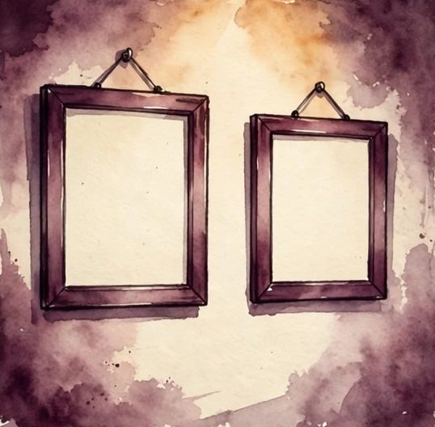
Two portraits hang side by side in a single frame, both in honest light
Every person who presents themselves at this desk arrives, in a manner of speaking, twice. There is the self that woke this morning unobserved — uncombed, unedited, conducting its first thoughts before any audience existed — and there is the self that answers the door: arranged, considerate, fit for company. The estate keeps portraits of both, and hangs them side by side in a single frame, because that is how they are found in life: not in separate houses, but under one roof, sharing one name. This hall is a study of those two portraits and of the difference between them, which turns out to be the most ordinary, and the most misjudged, distance in the world.
Let the principle be stated once, plainly, here at the door, as the Keeper states all principles — without drama and without apology. Everyone keeps two portraits; neither of them is lying. The face assembled for the world is not a fraud perpetrated upon the world; it is a garment, chosen the way garments are chosen — for weather, for occasion, for the protection of what it covers. Nobody accuses a coat of deceiving the street about the body beneath it. A mask, this hall maintains, deserves the same plain justice, and the same unexcited bookkeeping, and the same right to be worn without a hearing.
So the difference between who I am and who I pretend to be is not entered in the register as a crime, nor even, in the ordinary case, as a problem. It is entered as a measurement, like the width of a doorway or the length of a strap: a fact to be known, not a fault to be confessed. Some days the two portraits nearly coincide; some days they stand noticeably apart, and both of those days are common, and both are survivable. What the whole hall argues, across all its remaining rooms, is only this: know both portraits, know which one is speaking, and keep the wardrobe in good repair.
2Two Portraits in One Frame
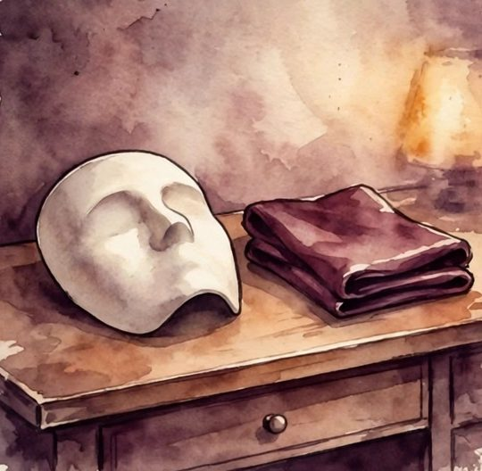
A double frame hangs in the corridor, its two faces turned slightly toward each other
The frame is worth describing before the faces in it. It is one frame, not two — a single border of plain wood holding two portraits at a slight angle to each other, like guests in conversation who have not yet decided how much they like each other. The estate acquired it, the legend says, from a citizen who tried for years to hang the portraits in different rooms, and found that visitors kept asking after the missing one. Now they share a wall, a nail, and a fate. Whatever else this hall teaches, it teaches this first: the two portraits are not rivals for the house. They are its joint tenants, and the lease is in both their names.
Looked at closely, they are recognisably one sitter. The morning portrait is lit by an earlier, less forgiving light; the features are unarranged, the expression unfinished, the gaze somewhere in the middle distance of a private thought. The evening portrait has the lamplight's assistance — the chin considered, the eyes attentive, the whole composed the way a table is set before guests are expected. Yet nobody who knows the sitter mistakes either picture for a stranger, or for a forgery. The bone structure is the same. The history is the same, down to the scar and the squint. Only the lighting, and the intention, differ.
Visitors sometimes ask which of the two the desk believes. The desk believes both, and considers the question a misunderstanding of what frames are for. A frame does not vote between the pictures it holds; it holds them. The portraits, for their part, have long since made their peace, and turn toward each other in the corridor like two old residents who have stopped arguing about the house and started maintaining it together. Two portraits, one sitter, one unimpeachable tenancy — and the frame was never a courtroom, only a wall.
3The Face I Wake Up With
The face I wake up with is the least supervised version of me there is. It arrives before the day has issued any instructions: hair in revolt, thoughts unsorted, yesterday's worries queued in no particular order, the voice not yet warmed to anything resembling its public pitch. There is a particular honesty in it, but it is important to be precise about the kind. It is the honesty of an unedited manuscript — everything present, nothing yet arranged for a reader. The estate records this face in the register without ceremony, under the heading it gives to all beginnings: draft, not verdict, and certainly not evidence.
It would be a mistake — the commonest mistake in the whole subject — to call this face the truest one and demote every later face to a performance. The waking face is not more truthful than the considered one; it is only earlier. It contains the day's raw material: the anxiety not yet examined, the kindness not yet organised, the opinion not yet tested against other people's faces. Some of that material deserves the light of day. Some of it is merely what a mind looks like before it has had its tea and its second thought — and second thoughts, in this house, are not counted as betrayals of the first.
So the waking face is received politely, given its breakfast, and permitted to develop. By nine o'clock it will have been joined — not replaced, joined — by the day's other arrangements, and it will recognise them, on inspection, as its own work. The draft is not ashamed of the fair copy, and the fair copy does not call the draft a lie. There is no ceremony for the handover, and none is needed; it happens at the mirror, at the kettle, in the first exchange of the day. The face I wake up with is not the truer face; it is simply the first one, and the day is allowed to answer it.
4The Face I Answer the Door In
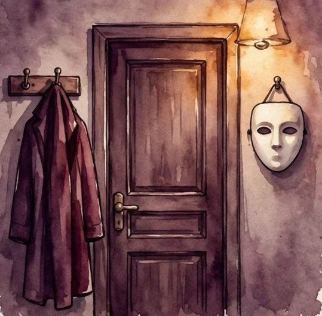
At the sound of the bell a face composes itself beside the door, coat straightened, voice ready
The doorbell rings, and in the seconds before the latch lifts, a small and ancient piece of stagecraft takes place. The shoulders settle. The expression is gathered up from wherever it had wandered. The voice — this is the giveaway, the Keeper says — rises half a tone into its receiving register. None of this is taught; children master it before they can spell it, and the elderly perform it without rising from their chairs. The face I answer the door in is not constructed in those seconds. It is summoned, like a coat taken down from its hook — and it has been hanging there, brushed and ready, for years.
Consider what the door-face is for, before judging what it is. It protects the visitor, who did not ring the bell in order to be handed my unprocessed morning, my unfinished grief, or my running argument with the kettle. It protects me, who am entitled to meet the world in an order of my own choosing rather than be ambushed in a dressing gown of a mood. And it protects the meeting itself, offering two people a level floor of courtesy on which something genuine may subsequently happen. Most real conversations begin behind this face — and then, as often as not, warm straight through it.
The register, accordingly, files the door-face under courtesies, not under counterfeits. It belongs in the same drawer as the clean shirt, the swept step, the kettle put on when a step is heard on the path: a small labour of welcome that nobody mistakes for the whole truth and nobody sensible resents. It does not claim to be the entire house; it claims only that the house is receiving. The face at the door is a courtesy, and courtesy is not the opposite of honesty; it is honesty, wearing its coat, come to let you in.
5Everyone Keeps Two Portraits
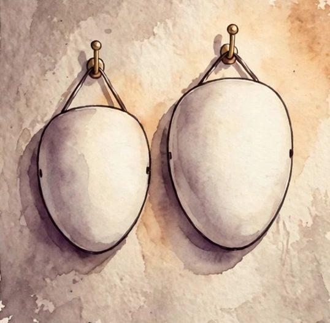
A corridor of doors recedes into the distance, behind each one the same arrangement of frames
In all the Keeper's years at the desk, no citizen has ever been registered with a single portrait. Diplomats and hermits, grandmothers and night-watchmen, the painfully shy and the professionally charming — the inventory always comes to the same count. Two frames, at minimum, hang in every house on the register: the face kept for the world and the face kept for the mirror, with a whole wardrobe of variations suspended between them. The doubleness is not a modern corruption, nor a personal failing, nor a secret to be whispered. It is the standard equipment of the species, issued at birth, like a second set of keys.
What varies between people is therefore not the fact of the two portraits but everything else about them. In some houses the portraits are near-twins, separated by little more than a cleaner collar and a slower temper; in others they face each other across a considerable and tiring distance. In some houses the citizen knows both faces intimately and will introduce them to visitors like old colleagues; in others, one portrait hangs in a room its owner has not entered for years, under a sheet. The difference between a peaceful household and an anxious one, the Keeper notes, is rarely the size of the gap. It is whether the gap is known.
This universality is offered as comfort, though the desk deals in comfort sparingly and prefers to deal in measurements. The reader who has ever felt privately fraudulent for smiling in company while tired, or for keeping a self in reserve while the performed self handles the evening, may set the feeling down with the register's blessing. There is no single-portrait standard against which they have been measured and found double. Nobody in the register has only one portrait; the difference between people is only in whether they have met both of theirs.
6The Difference Is Not a Crime
The word pretending carries a whiff of the courtroom. It suggests a defendant, a deception, and a verdict pending, and whole shelves of confession have been written in its shadow. This hall declines the prosecution, and it is worth setting out why, in plain terms, before the tour proceeds any further. A crime — even a small social one — requires a victim who has been deceived about something that matters, by someone profiting from the deceit. The ordinary difference between a person's two portraits fits that description so poorly that the Keeper has struck the charge from the register altogether, and entered the matter under a different heading: tailoring.
Consider the supposed victim: the world. The world is not, in fact, deceived. Everyone at the gathering knows the faces there are arranged, because everyone at the gathering arranged one; it is the oldest open secret of the species, renewed at every doorway since doorways began. Nor is the profit suspicious. What the arranged face gains is usually nothing more exotic than privacy, or employment, or an evening that does not end in tears. The concealment, where it exists at all, concerns the depth of a tiredness or the size of a doubt — matters the estate considers to be the citizen's own property, to disclose at the citizen's own pace.
None of this forbids judgment where judgment genuinely belongs. There are masks worn to defraud, masks worn to cruelty, masks worn to escape honest debts, and the register prosecutes those under their own proper names. But the common difference — the inch or two between the face at rest and the face in company — is not among them, and confusing it with them wastes both mercy and suspicion. The tape, the Keeper finds, is a great sedative for the conscience, and it is produced at the desk, on request, without charge. A difference is not a crime; it is a dimension. And dimensions are for measuring, not for sentencing.
7The Portrait for the World
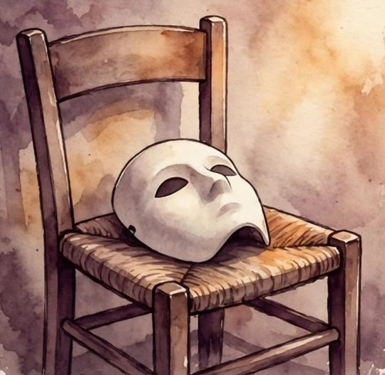
A portrait in a gilded frame faces the front windows, lit carefully for visitors
The portrait for the world hangs where the light is best, and this is neither vanity nor policy; it is simply the picture the house shows to the street. It includes the sitter's steadiness, their competence, their better temper, the laugh that arrives on time. It leaves in the back rooms the unfinished sorrows, the rehearsed apologies, the opinions still too hot or too tender to hang. Visitors who study it are not being shown a stranger. They are being shown a selection — the way a garden shows its front beds, not because the compost heap is a secret, but because the front beds are what a garden is for.
A selection is not a fabrication, and the estate is firm on the distinction. Every portrait ever painted has been an edited truth: the painter chose the light, the angle, the hour of the sitter's life, and the sitter consented, and nobody called it perjury. What the world receives from each of us is exactly that — a sitting, formally conducted. The smile in the portrait is a real smile; it was smiled. The composure is a real composure; it was composed, at cost, by someone who might have wept instead. That it is not the whole of the sitter is a fact about wholes, not about honesty.
The register therefore hangs this portrait without apology and lights it well. It does a day's work in the world: it reassures employers, comforts friends, steadies children, and carries its owner through the public hours with a dignity the private face, for all its virtues, never requested. It also bears the house's traffic with a grace the back rooms never have to learn: it can be pleasant to strangers in the rain, patient with officials, brief with bores, and it does all this without once consulting the sorrows. A portrait that can work a room is not a lesser portrait. It is a public servant, and it is paid in the coin of being left alone afterwards. The portrait for the world is a true face, edited — but everything honest is edited, including memory, including this sentence.
8The Portrait for the Mirror
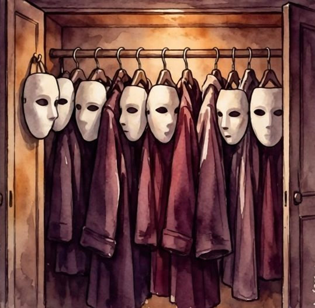
A smaller portrait hangs where only one person ever stands to look at it
The portrait for the mirror hangs in a smaller room, at the back of the house, where the light is honest and the audience is one. It shows what the front portrait was painted to spare the world: the doubt at full size, the grief not yet tidied, the envy, the fear, the foolish hope, the face in the act of not coping. Citizens sometimes flinch from it, having absorbed the superstition that whatever hangs in the back must be the real picture and whatever hangs in the front a lie. The estate rejects the superstition entirely. Location is not a measure of truth. A thing kept in the back is kept, not confessed.
Notice what the mirror portrait actually contains, on a fair inspection. Very little of it is shameful. Most of it is simply unfinished: feelings at the stage before they have found their manners, thoughts still in their working clothes, wounds still deciding what they are. It is not hidden because it is disgraceful; it is hidden the way a kitchen is hidden from a dining room — because preparation is not presentation, and no household is required to serve the meal in the room where it was cooked. Some of it, admittedly, is sorrow. But sorrow hung in a private room is not a scandal. It is a tenancy.
The Keeper's counsel regarding this portrait is unfashionable and brief: look at it regularly, and do not apologise to it. It is not the enemy of the front portrait but its supplier — everything the world eventually receives passed through this room first, to be rested, sorted, and made fit for company. The desk, for its part, keeps the key to that room on the same ring as all the others — neither first on the ring, nor last. The portrait for the mirror is not the hidden disgrace of the house; it is the house, after the guests have gone, with its shoes off and the lamps turned low.
9Neither Portrait Is Lying
It is worth being strict about the word lying, because this hall's whole peace depends on it. A lie is a statement the speaker believes to be false, made with the intention that someone else believe it. Hold the two portraits up to that definition, one at a time, and watch both of them walk free. The composed face at the door makes a statement, certainly — but the statement is I am receiving you, I have set my troubles down to attend to yours — and that statement, in the moment of its making, is perfectly true. The intention behind it is not to deceive but to welcome, which are opposite intentions wearing similar coats.
The private portrait acquits itself just as easily. It makes no statement to the world at all, and a thing that says nothing cannot be lying; silence is not perjury, and privacy is not a false alibi. The mirror portrait does not claim the front portrait is genuine in every detail at every hour. It claims nothing. It simply hangs where it hangs, keeping the citizen's unfinished business out of the thoroughfare, the way every legal household keeps its accounts, its medicines, and its arguments out of the front window. Nobody calls a closed drawer a liar.
The confusion arises because we use one word — real — for two different virtues: unedited, and honest. The mirror portrait is the unedited one. The door portrait is honest in the way of all good manners: it says the truest thing that the occasion can use. The desk has tested the matter against the hard cases — the smile maintained through the ghastly meeting, the calm voice in the genuine emergency — and found the acquittal holds: the statements were serviceable, the intentions were kind, and the alternative, an unedited broadcast of the inner weather, would have helped no one present. Honesty, it turns out, has never required a live feed. Neither portrait is lying; they are answering different questions, asked by different rooms, and both of the answers are true.
10The Gap Between Them
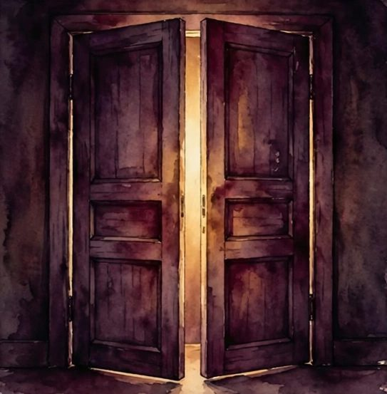
Between the two frames stretches a hand's width of plain, unremarkable wall
Between the two frames there is a stretch of bare wall, and every citizen knows it by feel long before they know it by sight. It is the distance travelled, several times a day, between the face at rest and the face in readiness — and it is measured, most precisely, in tiredness. The peculiar exhaustion that follows an evening of company, even beloved company, is the gap made sensible: the cost of holding a portrait at arm's length from its twin for four hours. Nothing has gone wrong on such an evening. The meter has simply been running, and the gap is where the meter lives.
The gap is not a fixed feature of the house. It widens and narrows with the seasons of a life, like a river between its banks. In grief it widens until the crossing is a day's work; in safety, among old friends or in solitude, it narrows to a step. Illness widens it, rest narrows it, certain rooms and certain companies are bridges, and certain others are weather that drives the water up. The Keeper keeps a chart of these movements for any citizen who asks, and the chart's only lesson is that the width of the gap is information, not indictment. It reports the state of the householder, not the state of their honesty.
The practical wisdom of the hall is contained in that distinction. A wide gap does not mean the portraits are false; it means the citizen is tired, or grieving, or outnumbered, and should arrange their crossings accordingly — shorter visits to the front of the house, more lamps in the back. Citizens are sometimes ashamed of the width, as if a narrow gap were a moral achievement and a wide one a character flaw. The chart corrects them: some of the widest gaps on record belong to the kindest people in the hardest seasons. The gap is not the distance between truth and falsehood; it is the distance between rest and readiness, and readiness has always cost more than rest.
11A Difference Measured in Inches, Not Miles
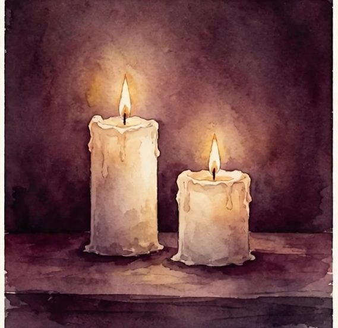
A tailor's tape rests across the wardrobe shelf, marked in small and merciful numbers
When citizens first present themselves at the desk to confess the difference between their portraits, they almost always report it in miles. I am a fraud of continental scale, the confession runs; nobody knows the real me; the performance is total. The Keeper listens with respect, and then does what the desk exists to do: measures. Out comes the tailor's tape — posture, polish, patience, the laugh produced on schedule, the opinion withheld, the tiredness concealed. Item by item, the continental fraud resolves, under measurement, into a list of adjustments so small that each is denominated in inches.
This is not a trick of bookkeeping. The inches are real, and they matter — manners live in them, and so do kindnesses, and so does the entire civilised arrangement by which strangers can share a train carriage. But inches are what they are. The face underneath the adjustments is recognisably, almost embarrassingly, the same face: the same humour banked lower, the same opinions expressed at a chosen moment instead of the first one, the same sorrow with its hair combed. Nobody who loves the citizen would fail to know them from the performed portrait. Nobody who knows them only from the portrait has been sold a stranger.
The register's finding is therefore a relief disguised as arithmetic. The difference between who you are and who you pretend to be is a difference of fitting, not of identity — the same garment, taken in at the seams for company. There is a further mercy in the measurement. What is inches can be tailored; what is miles could only be crossed. The citizen who feared a continent of falseness discovers instead a small list of adjustments, each with a name, each with a history, each capable of being loosened by half an inch on the days when the company is safe. The register has watched this discovery land, over the years, with the force of an acquittal. Measured honestly, the difference is inches, not miles; and inches were never a reason to indict a face.
12The Portraits Introduce Themselves
For all that they share a house, the two portraits have usually never been introduced. They pass each other on the stairs of the day — the mirror face stepping back as the door face steps forward — with the nod of colleagues who have worked the same building for decades without learning each other's names. The estate, when a citizen is ready, performs the introduction formally: both frames down from the wall, propped on the desk, turned toward one another in decent light. It is an awkward ceremony, the Keeper admits. Most citizens laugh, and then, unexpectedly often, they do not.
The awkwardness is informative. Each portrait knows something the other does not. The face for the world knows the weather outside — what can be borne in company, what the season requires, where the doors are. The face for the mirror knows the cost of everything — what the smile was purchased with, which sorrows are current, which are merely ancestral. A household in which these two never confer is a household governed by two ministries in mutual ignorance, each suspecting the other of treason. A household in which they confer is simply a household: the outer office and the inner office, exchanging memoranda like adults.
Since the introduction, the register notes, the portraits' relations improve in a characteristic way: the performed face grows less defensive, being no longer afraid of exposure by its own twin; the private face grows less bitter, being no longer the sole keeper of the truth. Afterwards, citizens report a change they struggle to name: the house feels quieter, as if a low argument in another room — one they had stopped hearing years ago — had finally been settled. The portraits had not been fighting, exactly. They had only been strangers, and strangeness is tiring to live with. Introduced at last, the two portraits discover what the Keeper could have told them at any point in the proceedings: they have been on the same side all along.
13A Short History of My Masks
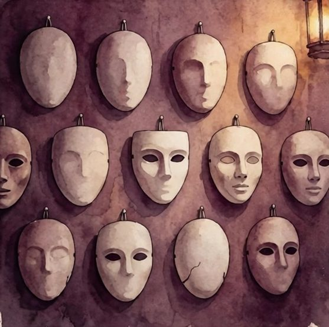
A wardrobe rail holds masks in a row, smallest at one end, like coats outgrown in order
The hall now turns from the portraits to the wardrobe, and from the wardrobe to its history — for no citizen's collection of masks was assembled in a day. Along the rail they hang in something close to chronological order: the small bright one from childhood, the defiant one from the school years, the careful one from the first employment, the brave one from the hard season, the easy one from now. Each is dateable. Each fits a face that no longer quite exists. To walk the rail slowly, the Keeper says, is to take a tour of a life conducted entirely in terms of what it needed, at each age, in order to be met by the world.
A wardrobe, read this way, is a more honest biography than most memoirs. A memoir explains; a wardrobe merely shows, and what it shows is need, answered. The clown's mask testifies that at fourteen, laughter was the available currency of safety. The mask of capability testifies that at twenty-five, rent was due and doubt was not a payable instrument. Nothing along the rail is inexplicable, and very little of it is shameful, once the simple question is asked of each piece in turn: what were you for? The answer is always a date, a circumstance, and a perfectly intelligible piece of engineering.
This hall will now walk the rail at the pace it deserves, mask by mask and era by era, before it reaches the working and social wardrobes of the present day. The Keeper asks only that the visitor bring the tailor's tape from the earlier rooms and leave the courtroom outside. The Keeper walks it once a year with each long-registered citizen, not as an inspection but as an anniversary: this one got you through the winter; this one was for the wedding; this one you may finally stop apologising for. A life can be read in its masks the way a house is read in its coats: by size, by season, and by what each one was protecting.
14The First Mask I Remember
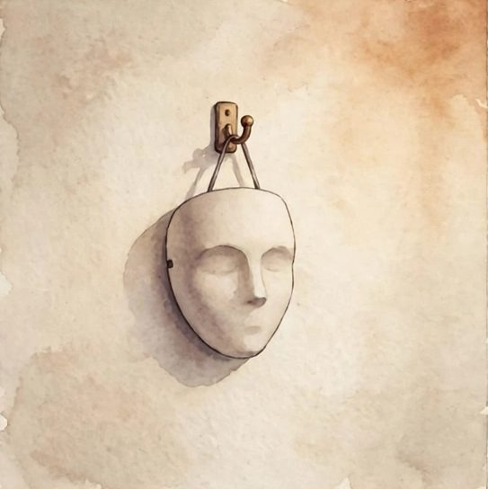
A child's small mask rests on a low shelf, its ribbon tied in a careful bow
Almost everyone can find it, if the rail is walked slowly: the first mask they actually remember choosing. Not the first they wore — those were fitted by other hands — but the first one taken down deliberately, with a child's version of a decision. It is usually dated somewhere between the ages of five and nine, and its purpose is always legible at a glance. The bright compliance that made the grown-ups glow. The toughness that made the playground negotiable. The invisibility that made the classroom safe to think in. The mask is small, and the workmanship is touching, and the strategy, considered fairly, is excellent.
It deserves to be said plainly, against a certain fashion of remembering it as a fall from innocence: that first mask was an achievement. What the child had discovered, alone and without instruction, is one of the great facts of the world — that other people have minds, that those minds read faces, and that a face is therefore an instrument that can be played. The smile deployed to mend a mother's mood, the bravery deployed to enter a new schoolyard: these are not corruptions of a self. They are the self's first works of engineering, and some of them are still in service.
The register keeps a particular tenderness for this shelf. The child who tied that ribbon was not learning to lie; the child was learning that love, safety, and company have conditions, and that meeting conditions is a skill, and that skills can be practised. Nor should the workmanship be mocked from the vantage of the adult rail. The child fitted that mask without a mirror, without instruction, and without any of the vocabulary this hall takes six rooms to supply — and fitted it to exactly the face the situation required. Grown craftsmen with every advantage do worse every day. The ribbon was tied because the child understood, before understanding anything else, that the matter was important. The first mask is not the first falsehood; it is the first proof that its wearer had learned other people were real.
15The Mask I Wore at School
School is the first wardrobe department with an audience, and the masks issued there have a recognisable house style. There is the clown's, taken up by the quick-witted before the corridor could assign them a worse part. There is the invisible one's, polished to such a finish that teachers' eyes slid off it for years. There is the swot's, the tough one's, the agreeable lieutenant's, the one who knew everything about horses or engines or the band. Few of these were chosen freely. Most were negotiated, under pressure, between a child and a corridor full of other children doing exactly the same negotiating at exactly the same time.
What the adult forgets, reviewing the school mask with embarrassment, is the terms of the market it traded in. School is a country with no emigration, a compulsory audience of one's exact contemporaries at their least merciful age, and a reputation economy that clears in real time. In that country a mask was not vanity; it was equipment — armour against ridicule, and simultaneously an audition for friendship, the two functions sharing one ribbon. That the equipment was crude is a property of the available materials. That it was worn at all is a property of the wearer's correct assessment of the terrain.
The Keeper's rule for this shelf is amnesty. Citizens are invited to hang the school mask up, look at it once with adult eyes, and decline — explicitly, in the register if they wish — to be embarrassed by it any further. It did its tour of duty in a hard posting, and it brought its wearer home. Some citizens still dream in that corridor; the Keeper notes it without alarm, and enters the dreams as the mask's pension being paid in the only currency it accepts: acknowledgment. The school mask was armour and audition at once, and nobody should be judged forever by what they wore to survive the corridor.
The Mask Desk
One desk receives all correspondence for this wardrobe — questions, corrections, greetings, and word of masks you are thinking of retiring. It is read in the order it arrives.
16Masks Inherited from the Family
A row of masks hangs by the door, several in the same style and different sizes
Some masks are not chosen or even adopted; they are inherited, and they hang by the family door in a row of sizes. Every household has a house style of face. There is the family that smiles through everything, including funerals and diagnoses. There is the family that never apologises and calls the inability integrity. There is the joker dynasty, the stoic dynasty, the dynasty that receives all news — promotions, disasters, engagements — with the identical nod, as if the nod had been settled in a will. A child in such a house does not learn that faces can be arranged. The child learns how ours are arranged, which is a much deeper lesson.
Inheritance of this kind arrives without a ceremony and without a will being read. The straps are fitted before the wearer knows there are straps: the toddler praised for being no trouble, the eight-year-old fluent in the family's official weather while the actual weather goes unmentioned. By adulthood the inherited mask often fits better than any acquired one, precisely because it was grown into rather than put on. This is why it is the hardest to see. A fish, the Keeper remarks, would describe its own inheritance last of all, and call the description water.
The estate's position on inherited masks is the position it takes on all heirlooms: gratitude is permitted, examination is permitted, and alteration is permitted. Some citizens keep the family mask all their lives and wear it honourably, the way a house keeps its name. Others retire it to the rail with thanks, having found its smile too expensive or its silence too large. What may not be done is to pretend the inheritance never happened; the strap-marks are part of the face's history, and the register keeps them. An inherited mask is not a forgery; it is a hand-me-down — and hand-me-downs may be kept, altered, or respectfully retired.
17The Mask That Kept Me Safe
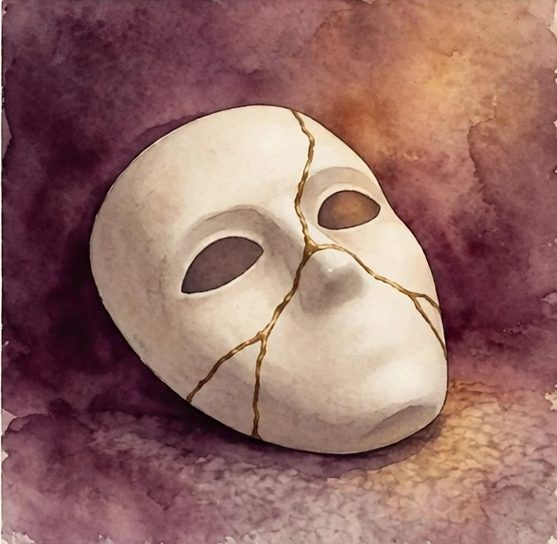
A plain, sturdy mask hangs nearest the door, its inside worn smooth by years of use
On many rails there is one mask that the Keeper handles with both hands. It is rarely the prettiest. It is the one that was worn in the house, or the years, where being fully legible would have been dangerous: the agreeable face in a household governed by weather, the invisible face where attention drew fire, the cheerful face that deflected questions no child should have had to answer. Its inside is worn smooth, the way a step is worn — by traffic, over years, at the exact place where the weight fell. This was not a decorative object. It was load-bearing.
It is a particular temptation of safer decades to look back at this mask with something approaching contempt — to call it cowardice, or complicity, or the original self-betrayal from which all later ones descend. The estate forbids the vocabulary, and the register records why. The mask worked. The person who wore it survived the posting with enough of themselves intact to stand, years later, in a quiet museum of their own history, forming opinions about the equipment. That outcome was not guaranteed. It was achieved, and the mask was the achieving of it.
So the entry against this piece is gratitude, formally minuted. It may be retired now — most are — or kept in readiness by citizens who prefer their safety equipment maintained. Either way, it is not apologised for, and it is not explained to visitors who have never needed one. Its retirement, when it comes, is rarely dramatic. One ordinary day the citizen notices that the door it guarded opens onto a safer street than it used to, and that their hand no longer reaches for the hook by reflex. The mask stays on the rail. It is simply, at last, off duty. The mask that kept me safe deserves a pension, not an apology; it held the door through the years when I could not.
18The Polite Child
Among the family inheritances, one small mask deserves its own room: the polite child's. Its features are a ready please, a prompt thank-you, an apology issued slightly in advance of any offence, and a general arrangement of the face into an expression adults described, with enormous approval, as good. It was rewarded so reliably — by parents, by teachers, by the entire economy of grown-up affection — that its straps were tightened by praise itself, the gentlest and least examinable of all tightening. Many citizens arrive at the desk still wearing it, under everything else, like a first shirt outgrown but never removed.
The estate's examination of this mask is careful, because two different engines can drive the identical face. In some children, politeness was simply temperament finding its form: an early and genuine pleasure in smoothing the world's corners. In others, it was a flinch that had learned manners — goodness performed at gunpoint of an atmosphere, helpfulness as an early-warning system. From the corridor, the two faces are indistinguishable. From inside, they are different countries: one is a gift, the other is a tax. The register insists only that the citizen learn, eventually, which engine is installed in their own case.
No blame attaches to either. The child who paid the tax was balancing the household's books with the only currency issued to children, and the child who gave the gift was spending a real inheritance. The question the adult inherits is merely whether the arrangement still needs to run at its childhood rates. The adult rates, the Keeper suggests, should be renegotiated — not abolished, since the gift-engine citizens would miss their own generosity, and not left at the childhood tariff, since the tax-engine citizens have been overpaying for decades. The polite child was doing two jobs at once — being good, and being safe — and was paid, in affection, for only one of them.
19The Mask I Outgrew
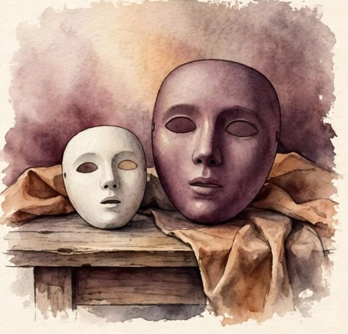
A mask hangs on a hook too small for it now, its seams strained by a face that grew
Every rail holds at least one mask that no longer fits, and the moment of discovering the misfit is a small landmark in a life. The daredevil's mask, cut for seventeen, pinching at thirty. The doormat's, the clown's, the one that agreed with everything in rooms where agreement is no longer the price of the chair. The discovery usually arrives as discomfort misread: a strange tiredness after old company, an irritation at one's own laugh, the sense — citizens describe it with impressive unanimity — of performing a part in a play that closed some seasons ago and was never much loved even then.
The misreading to avoid is the charge of hypocrisy, levelled by the citizen against themselves. I was that, for years — was it all pretend? The Keeper's answer is a tailor's, not a confessor's. You were that size, for years. The mask was not a false account of the person; it was a true account of the person then, in the weather then, at the age then. Faces grow. Any wardrobe that is never outgrown belongs to someone who stopped, and stopping, not changing, is the only real misfit the register prosecutes. Growth is the intended use of every garment ever issued by this house.
So the outgrown mask is retired with the honours due to completed service: cleaned, entered in the register with its dates, and hung where it can be visited. Some citizens cannot look at theirs without wincing; the Keeper recommends looking anyway, once a year, the way one visits any former address. Visitors sometimes ask whether the outgrown masks miss their wearers. The Keeper, who is not sentimental about equipment, answers that the question is backwards: it is the wearers who visit, and the visiting is how they know the growing is real. A mask outgrown is not a self betrayed; it is a garment outlasted — and the growing was the whole point of the wearing.
20The Mask That Grew With Me
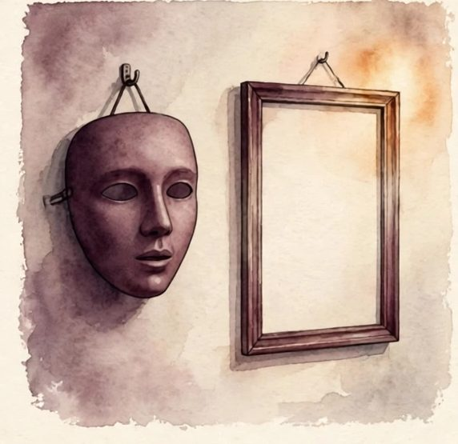
A well-kept mask of plain design hangs at the centre of the rail, altered many times by a careful hand
At the centre of most rails, if the citizen has been fortunate, hangs the exception that redeems the whole wardrobe: the mask that grew with its wearer. It began, usually, as an ordinary piece of equipment — a composure adopted young, a patience practised before it was felt, a steadiness performed for other people's benefit. But somewhere along the decades it was altered so many times, let out at so many seams, re-lined with so much actual experience, that the distinction between the garment and the face quietly expired. What was performed became, by performance, true. The estate keeps this mask under glass, as its favourite argument.
Its history is worth a paragraph because it refutes the hall's laziest visitor, the one who maintains that whatever is practised is thereby fake. The mask that grew refutes it by existing. Patience rehearsed for thirty years is not an imitation of patience; it is patience, acquired the only way patience has ever been acquired. Composure performed through a hundred small emergencies is not a picture of composure; it is the thing itself, with the receipts. The wardrobe, properly kept, is not where the self is hidden from its life. It is one of the principal workshops in which the self is made.
The Keeper therefore closes the history hall with this piece at the centre of the rail, lit plainly, altered seams outward, as a standing instruction to the whole collection. Cherish the masks that can grow. Retire the ones that cannot without a trial. And when a performed virtue begins to feel less like a performance and more like a description, enter the change in the register without surprise. The mask that grows with you stops being a mask at all; it becomes a manner — and a manner is a face the soul has signed.
21Borrowed Masks
Not every mask on the rail was made for its wearer. Some were borrowed — lifted, with the clean conscience of youth, from a person whose face seemed to handle the world better. The teacher's unhurried calm, borrowed for examinations. The older sibling's irony, borrowed for parties. The film hero's shrug, the grandmother's patience, the friend's way of entering a room as if the room had been waiting. Borrowing of this kind is the wardrobe's apprenticeship system: no citizen is expected to invent a face from raw materials, and none, on inspection, ever has. We begin as imitators, and the register declines to be embarrassed by it.
The life of a borrowed mask follows one of two courses. Either it is returned — worn for a season, found unsuited, and hung back on the guest hook with thanks — or it is quietly bought. The purchase is never announced. It happens the way accents change in a new city: the borrowed calm is worn so often, through so many of the wearer's own emergencies, that it stops quoting its original owner and starts citing experience instead. At some point the name inside the strap no longer matches the face, and the Keeper amends the register without ceremony. Half the virtues in the building changed hands exactly this way.
So no citizen should be ashamed to find another's handwriting inside their strap. The question the desk asks about a borrowed mask is never whose it was — it is whether the loan is being serviced: whether the calm borrowed from the teacher has been paid for in the coin of actually becoming calmer. The guest hook, in consequence, is one of the busiest in the wardrobe, and the Keeper oils it without being asked. Half the citizens who arrive apologising for an imitated virtue leave, on inspection of the hook's traffic, apologising for nothing at all. A borrowed mask is a loan against a self not yet built, and most selves are built exactly that way.
22The Mask from the Hard Years
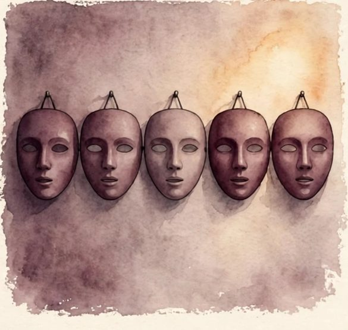
A weather-beaten mask hangs a little apart from the others, respected and seldom touched
Some masks on the rail hang a little apart from the others, the way a veteran's coat hangs apart in a family wardrobe: respected, seldom touched, never discussed at parties. This is the mask from the hard years — the face that was assembled, often in a single bad season, for grief or illness or debt or a war of one kind or another, and then worn without relief for longer than any garment should be asked to serve. It is usually plain to the point of severity. Ornament, in the years that made it, was not in the budget. Function was the whole brief, and function is what it delivered.
Its features repay study, because they are so often misread by the citizen who survived into softer weather. The flatness was not coldness; it was rationing. The silence was not emptiness; it was a decision, renewed daily, about where the remaining strength would be spent. The grim humour, the refusal of sympathy, the competence that looked like hardness — each was a bulkhead, fitted under pressure, in a hull that was taking water. The Keeper has inspected many such masks and has yet to find one that disgraced its wearer. He has found several that plainly saved them.
The register's instruction regarding this piece is simple: do not throw it out in a spring cleaning, and do not let visiting relations handle it. It may never be worn again — most are not — but its retirement is an honourable discharge, not a disposal. Citizens sometimes offer to describe, for the register, exactly which years the mask belongs to. The Keeper accepts the dates and declines the details. The dates are the wardrobe's business; the details are the citizen's — and some rooms in this hall, as in every house the estate keeps, are not on the tour. The mask from the hard years is not the face of those years' shame; it is the equipment that carried a person through them.
23Old Masks, Kept in a Drawer
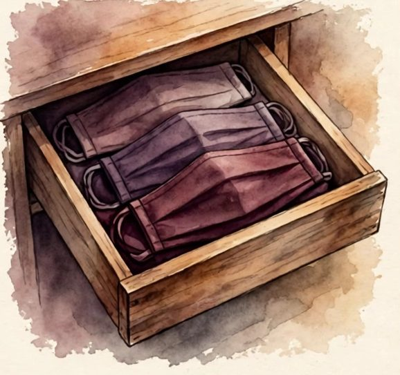
A drawer stands open on folded masks, each wrapped in plain paper like letters kept
Below the rail there is, in every well-kept wardrobe, a drawer — and the drawer poses a question the rail never does. The rail is for masks retired to display; the drawer is for masks kept in private, folded, wrapped in plain paper like letters whose contents are settled but whose existence matters. The school face. The face from the first marriage. The brave face from the year of the diagnosis, the charming face from the city that was left. None of them is worn. None of them can be thrown away. Visitors occasionally ask the Keeper why the estate keeps what it no longer uses, and the Keeper's answer is that use is not the only category in the building.
The drawer's contents are evidence. Each mask in it is the sole surviving witness to a season — proof, in material form, that the citizen was once in that weather and is now, demonstrably, out of it. On certain anniversaries, or certain grey mornings, a mask is taken out, held up to the light, and occasionally — the Keeper reports this without judgment — tried on for a moment in front of the mirror. It never fits. That is the point of the exercise. What no longer fits cannot be lost, and what cannot be lost does not need to be worn to be kept.
So the drawer is neither a shrine nor a rubbish bin, and the estate guards the distinction. A shrine would demand the past be worshipped; a bin would demand it be denied. The drawer proposes a third relation: filed, thanked, and closed. The drawer has one further property the Keeper values. It accustoms its owner to a truth the whole hall is built on: that a person can be finished with a thing without being finished with its meaning. The masks in the paper are not being saved from the past. They are being saved for the record, which is a different and a calmer operation. Old masks are kept the way old keys are kept — not for use, but because each one once opened the only door there was.
24Every Mask Was Once a Solution
The history hall closes with the principle that unlocks all of it, and the Keeper asks that it be entered in the register in the estate's best ink. Take any mask from the rail or the drawer — the clown's, the stoic's, the invisible one's, the one whose wearer can no longer explain it — and ask the only question this hall has ever asked of the collection: what problem did you solve, and when? The answer is always findable. It always names a season, a threat, an audience, a scarcity. And it always acquits the mask of the one charge visitors keep trying to file against the entire wardrobe: that it was adopted in bad faith.
This principle dissolves the shame-story at its root, which is why the estate insists on it. A solution is a rational category. A solution can be brilliant or clumsy, cheap or ruinously expensive, perfectly fitted or long past its season — but it cannot be a disgrace, because it was an answer, offered in good faith, to a real question posed by real weather. The school mask answered the corridor. The safety mask answered the house. The hard-years mask answered the years. A citizen auditing their wardrobe with this question in hand will find problems with some of the engineering, certainly. They will find no villains, and only one fool at most: the part of them that used to call answers shameful.
So the rail is hung, the drawer is closed, and the history is written in the only tense it deserves: the past practical. The Keeper keeps this principle by the door of the hall, where principles that acquit people belong, and citizens read it twice: once for their own wardrobes, and once — more slowly — for their neighbours'. For the principle travels. The colleague's stiffness, the parent's silence, the friend's inexplicable cheerfulness all hang on rails of their own, and each was fitted, in its season, to weather the register will never be shown. Judgment, where it is still required, may proceed; but it proceeds henceforth as engineering criticism, among fellow practitioners, and not as prosecution. Every mask was once a solution — judge it, if judgment is required, as engineering, and remember the weather it was engineered for.
25The Working Mask
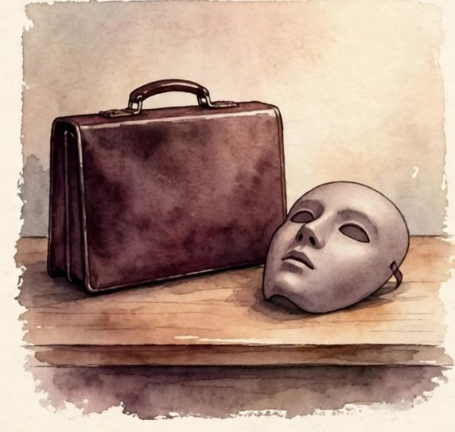
A neat mask hangs on the office hook beside a coat and a lanyard, ready before the hour
The hall now enters the present day, and the first room of the present day is the one most citizens know best: the wardrobe of work. The working mask hangs on its hook beside the coat and the lanyard, and it is donned in the morning with a deliberateness the other masks rarely receive. Voice, posture, patience, humour set to the office frequency — the whole arrangement clocks in together, usually in the lift, often in the last thirty seconds of the commute. By the time the door of the workplace opens, the citizen is wearing it the way they wear the coat: completely, and without a thought of deceit.
It is worth pausing on that last point, because the working mask is the most deliberate mask most people own, and therefore — by the logic this hall exists to correct — should be the most suspect. In practice it is the least. Nobody apologises for the meeting voice; nobody confesses to the kitchen voice that a performance occurred. The professional face is understood, by a treaty older than any office, to be a garment of the trade. The estate simply notes the treaty's existence and asks why its protection should stop at the workplace door, when every other wardrobe in the building runs on precisely the same honest arrangement.
The register enters the working mask as the collection's star witness. It is proof, worn five days a week by nearly every citizen, that a face can be assembled on purpose, worn in public, and remain innocent of fraud. There is a ceremony the Keeper recommends for this hook, to be performed in the first week of any new employment: hang the mask up, look at it, and state its terms aloud — what it will do, what it will never be asked to do, and at what hour it comes off. Citizens who perform it report that the mask fits better all year. Citizens who omit it arrive at the desk in the third year, wearing it at breakfast. The working mask is the one mask nobody apologises for — which proves the others never needed apologising for either.
26The Competence Performance
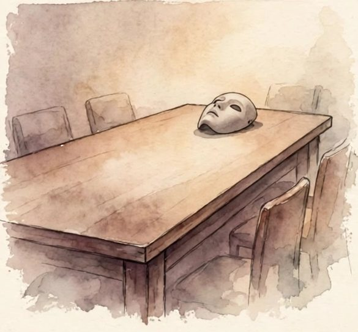
Steady hands rest a mask of calm capability on the desk beside a finished report
Somewhere near the centre of the working wardrobe hangs a mask every professional will recognise: the competence performance. It is the face of a person who has the matter in hand — worn, on the honest days, about half an hour ahead of the feeling. The presentation is given in its steady voice while the mind is still, privately, on page two of the problem. The estimate is offered with its chin up while the doubt is still being cross-examined in the back room. Citizens confide this sequence to the desk as if it were a confession. The desk receives it as a description of how all skilled work has always been done.
For the performance is not the opposite of competence; it is, very often, its first draft and its delivery system. Composure projected outward has a way of organising the room — colleagues borrow calm from it, clients steady themselves against it, and the performer, not least of the beneficiaries, finds their own pulse taking instruction from their own face. Panic is famously contagious, but the register notes that composure travels the same roads, and the competence performance is how it is shipped. A mask that steadies a whole meeting is not covering for an absence. It is doing a portion of the work, in public, where the work was needed.
The Keeper's entry against this piece is one of professional respect. Let it be maintained and rested at weekends, and let no citizen feel obliged to confess it, at appraisal time or any other. The Keeper is sometimes asked whether the performance should be confessed to the room — whether honesty demands an announcement that the composure is manufactured. His answer is the answer of the whole hall: no more than a chair confesses that it was manufactured. What the room is owed is the steadiness, and the steadiness is delivered, and the manufacturing is the performer's private business and professional pride. A thing does not become false by having been made on purpose. Performed competence is not counterfeit competence; it is competence in its working clothes, arriving — as competence usually does — slightly before the confidence.
27The Face for the Meeting
Every office keeps an invisible hook by the meeting-room door, and on it hangs a specialist garment: the face for the meeting. Its features are attentiveness composed like still water, agreement withheld until it is meant, disagreement filed to a diplomatic edge, and above all a certain slowing of the reactions — the flinch postponed, the triumph postponed, the response to slide forty postponed — until the second thought can be got ready. The citizen who wears it is not, during those hours, less themselves. They are themselves at committee speed, which is a genuine and learnable tempo, like waltzing in a room built for marching.
What the meeting face suppresses is worth itemising, because suppression, in this hall's ledger, is a service when it is billed correctly. It suppresses the first response, which is rarely the best ambassador a thought will ever have. It suppresses the weather of the morning, which the agenda did not cause and cannot fix. It suppresses the entirely human urge to win the meeting rather than conclude it. In exchange, the room receives a colleague whose contributions arrive considered — and consideration, the Keeper points out, is not a diluted form of honesty. It is honesty that has been given time to dress.
So the face for the meeting is filed, without irony, under courtesies of the working wardrobe. It does not misrepresent the citizen's position; it represents their position at the speed the institution can absorb. There is, the Keeper concedes, a price, and it is collected in the coin of the gap from the earlier halls: the meeting face held for six hours costs exactly what six hours of any fitting costs. The wise institution knows this and keeps its meetings short; the wise citizen knows it and keeps a break-room face in reserve. But the existence of the price does not impeach the garment. It merely enters it, honestly, in the accounts. The face for the meeting is a filter, not a falsity — the room is entitled to my second thought, not my first flinch.
28Smiling on Schedule
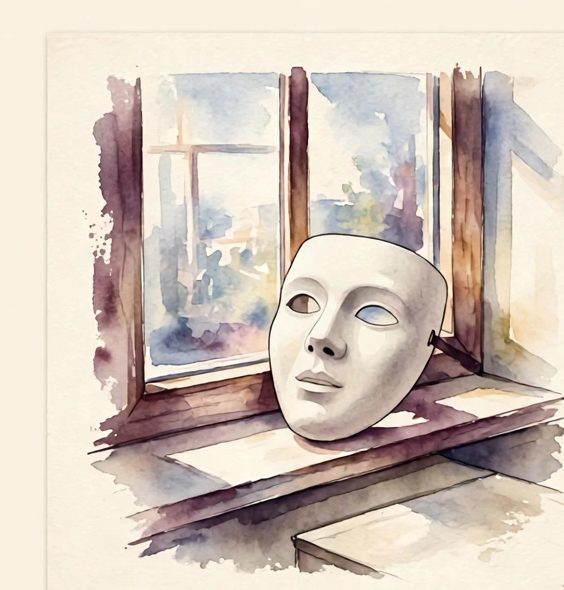
A mask with a practiced, gentle smile rests beside a clock and a full appointment book
The appointment book opens, the hour arrives, and the smile is produced — not because the feeling knocked, but because the schedule did. This is the smile of the reception desk, the clinic, the classroom at nine in the morning, the shop floor on the Saturday before the holiday: warmth issued by timetable. The critics of the arrangement, and every profession that runs on it has critics, reach for the word fake with the confidence of people who have never had to be kind at eight in the morning to the fortieth stranger of the week. The wearers of the scheduled smile reach for a different word. They call it Tuesday.
The estate's examination begins with a fact the critics overlook: a scheduled smile is a promise-keeping device. Feelings are splendid things but poor employees; they call in sick, they arrive at noon, they take the difficult weeks off entirely. The schedule, by contrast, guarantees a floor of kindness below which the day's transactions will not fall. The patient, the pupil, the customer at the counter receives the smile not as a report on the wearer's inner weather but as the house's undertaking: you will be met decently here, regardless. Undertakings of that kind are not counterfeit warmth. They are warmth, industrialised to the point of reliability.
And the register notes, from long observation, that the scheduled smile very often summons the genuine article behind it — the face instructing the feelings, as it did in the competence rooms — so that by mid-morning the performance and the mood have frequently changed places. But even on the days when it does not, the transaction stands. The appointment book, the Keeper observes, is full of such small kept promises, and a practice built of them acquires a reputation no advertising can buy: the place where you are met decently, at eight, in the rain, by a face that intended to be. Intentions, scheduled and honoured, are most of what institutions are. A smile on schedule is a promise kept by the face when the feelings are running late.
29The Uniform of Manner
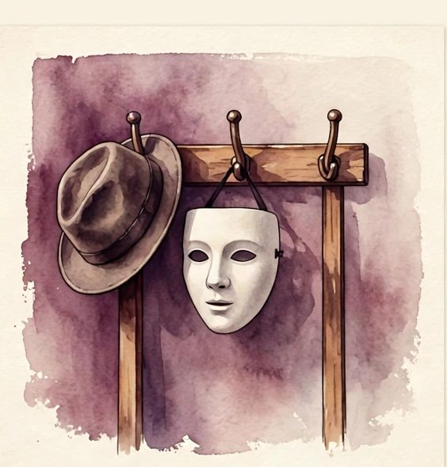
A row of identical hooks holds coats of one sober cut, each with its own small repairs
Some masks are not personal property at all but issued kit, and the professions keep the largest stores of them. The doctor's bedside calm, even — especially — when the news is not calm. The advocate's even tone, maintained in the corridor, the conference room, and the storm of the hearing alike. The teacher's patience, sized to fit thirty children and one inspection. The registrar's neutrality, the undertaker's gentle unhurriedness, the pilot's voice, which the whole aircraft borrows in turbulence. Each is a uniform of manner: cut to a pattern far older than the wearer, and worn on behalf of everyone else in the room.
A uniform, properly understood, protects in both directions. It protects the public, who are entitled to a predictable professional — a doctor whose alarm they need not read, a pilot whose voice does not speculate. And it protects the wearer, whose private self is not required to report for duty in its dressing gown every time the profession calls; the uniform stands between the citizen and the day's demands like a good coat between a body and the weather. The citizen who feels fraudulent in the issued manner has misunderstood the issue. The manner was never claimed to be their mood. It is their office, worn on the face.
Citizens retire from professions and discover, sometimes with surprise, that the uniform must be formally handed back — the calm retired, the voice stood down — and that the handing-back is a small grief, because the manner had become, by decades of wear, partly theirs. The repairs are the touching part. No two coats on the row are worn in quite the same places: here a doctor's calm reinforced at the exact point where bad news is delivered, there a teacher's patience let out, year by year, to fit a larger and larger mercy. The pattern is issued; the tailoring is a life's work, and the register can read a career in the stitching. A uniform of manner is a mask the whole profession holds in trust, and wearing it well is a form of keeping faith.
30The Mask That Gets the Job Done
Not all working masks are polished. The plainest piece in the wardrobe — scuffed, unfashionable, repaired at the strap — is the one citizens reach for on the days when the work is simply hard: the mask that gets the job done. It is the face that walks into the meeting nobody wants, makes the telephone call that has been postponed for a week, delivers the unwelcome news in complete sentences, and signs the document at the bottom of the pile. The self behind it may be frightened, or exhausted, or privately convinced of failure. The mask is none of those things, and that is precisely its job description.
This hall evaluates the piece the way it evaluates all equipment: by function. Did the difficult thing get done? Was it done without cruelty, without panic exported into other people's afternoons, without the performer's weather becoming the room's climate? Where the answer is yes, the register records a success of the wardrobe in its purest form — a person permitted, by a garment of their own maintaining, to act at the level of their intentions rather than the level of their nerves. Courage that waits until it feels brave would leave most of the world's necessary work undone by Friday.
So the entry against this mask is gratitude, and the Keeper enters it in the same hand he uses for the safety mask in the history hall. The job was real, the fear was real, and the bridge between them was this unglamorous piece of kit. It is also, the Keeper notes, the mask most often forgotten in the citizen's own accounting — nobody frames the Tuesday they simply got through — and the one whose absence would be noticed first. The wardrobe's heroes are rarely its ornaments. They are the pieces still in service when the weather is worst. The mask that gets the job done asks to be thanked, not unmasked — the job was real, and so is the thanks.
The Mask Desk
One desk receives all correspondence for this wardrobe — questions, corrections, greetings, and word of masks you are thinking of retiring. It is read in the order it arrives.
31Authority, Performed Politely
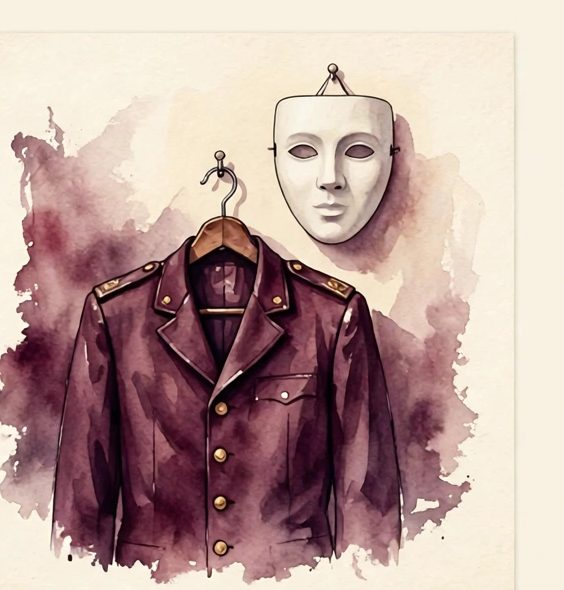
A mask of quiet authority rests on the desk beside a gavel that has never once been raised
Wherever a citizen is placed — by election, by employment, or by parenthood — in charge of other people, a particular mask is issued with the keys: authority. Almost no one feels it from the inside at first. What they feel is the permanent committee of doubt that occupies every new manager, every young parent, every captain of anything. What the room requires, however, is a steadiness to organise itself around, and so the steadiness is performed: decisions announced in a level voice, uncertainty taken away to be examined in private, the plan stated as if the plan were obvious. Performed politely, this is not vanity. It is carpentry. The beams of other people's confidence have to rest on something.
The estate is precise about the politeness in the title, because it is the load-bearing word. Authority performed rudely is appetite wearing the mask; authority performed anxiously is the mask wearing the citizen. Performed politely — firmness without hunger, clarity without contempt, the decision and the reason delivered in the same level tone — it is a service rendered to everyone the authority covers. A leader's undisguised panic is not honesty, whatever its advocates claim; it is the delegation of fear to people with less power to refuse it. The performed steadiness absorbs the shock at the level where the shock can be afforded.
So the register files this mask beside the competence performance, in the drawer of honourable equipment, and enters the same finding for both. The beams are painted, certainly; the paint is part of how they bear the weather — and nobody sensible requires a beam to be bare to be believed. There are limits, and the register states them in the same breath. The performed steadiness must never be used to conceal what the governed have a right to know, nor to borrow confidence the books cannot repay; the mask is a courtesy, not a vault. Within those limits, however, it stands acquitted in advance by everyone who has ever been steadied by it — which is to say, by everyone who has ever been worked for, taught, or parented well. Authority performed politely is a load-bearing courtesy.
32The Break-Room Face
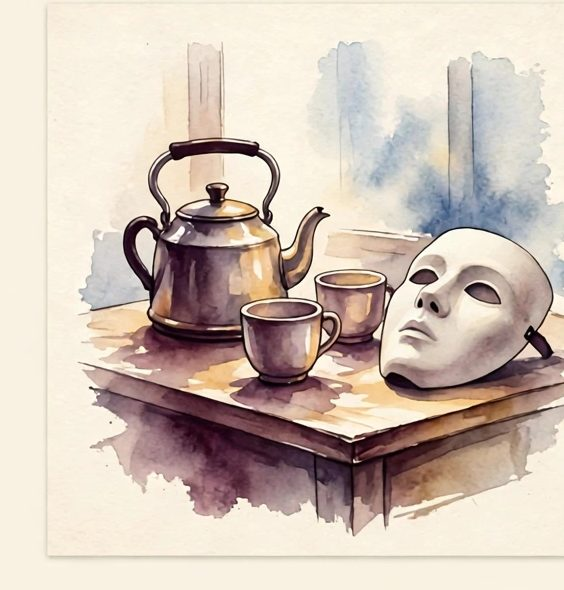
In a small bright room a mask hangs half off its hook, loosened like a tie
Between the full working mask and the private face there hangs an intermediate garment that the tidy theories of this subject always forget: the break-room face. It is the version of the citizen known to colleagues in the kettle's jurisdiction — straps loosened, tie of manner undone by one notch, the jokes unfit for the meeting permitted at last, the honest sentence about the morning allowed to be said in full. It is not the unmasked self; the corridor is still a workplace, and the face knows it. It is the working self at half-pressure, and its existence in every office the Keeper has inspected is a quiet refutation of the two-state theory of human faces.
For the wardrobe, it turns out, is not a switch but a rail. Citizens do not pass from masked to unmasked at the office door like divers through an airlock; they move along a graduated series of fittings, each sized to its room: the meeting face, the desk face, the break-room face, the face for the one trusted colleague, the face in the lift going down. Each step loosens a strap. None of the steps involves a lie. The discovery that one's own wardrobe is a spectrum rather than a disguise has reconciled more citizens to their working lives than any lecture the desk has ever delivered on the subject of authenticity.
The Keeper keeps a soft spot for this particular piece, because it is where the two portraits of the first hall can be seen, in daylight, getting along. The Keeper has a private fondness for the acoustics of such rooms: the kettle's jurisdiction has its own honesty, pitched between the minutes of the meeting and the silence of the house, and many a working truth is spoken there first and minuted later. If the estate were asked to point to the exact square of floor where the two portraits of the first hall shake hands daily, it would not point to any grand chamber. It would point to the break room, at eleven, with the biscuits going round. The break-room face is the wardrobe's middle shelf: proof that a life is not masked or unmasked, but fitted, room by room.
33What the Working Mask Protects
The working wardrobe having been walked, the hall pauses to inventory its purpose — for the Keeper has noticed that citizens who apologise for the working mask almost never ask what it is for. The protections, on inspection, are threefold, and each is respectable. First, the mask protects the inner life from the day's abrasions: the private face is not required to absorb, unmediated, every irritation, negotiation, and disappointment the working week manufactures. The garment takes the weather. The citizen, at intervals, takes the garment off and shakes the weather out of it, which is what evenings are partly for.
Second, it protects other people. Colleagues, clients, pupils, and patients are not conscripted into managing the citizen's moods; they receive the professional surface, steady as a handrail, and are free to attend to their own business. Third — and this protection is the least remarked — the mask protects the work itself. Judgments made behind the working mask are made at committee speed, in the second thought, with the private weather held at the door; and the register is aware of no profession whose output would be improved by the raw, unmediated, first-flinch version of its practitioners arriving at nine o'clock.
Finally, the mask protects the evening. Because the day's blows landed on the garment, the face that comes home has something left in reserve for the people it loves — not always much, on the hard weeks, but measurably more than the unprotected face would have carried through the door. Citizens who doubt the inventory are invited to conduct the experiment the register never recommends in earnest: to work one day entirely without the garment, delivering every first thought at full size to every colleague and client. The experiment is invariably abandoned by lunch — and abandoned, the Keeper notes, not out of cowardice but out of a sudden, practical reverence for everything the mask had been quietly carrying. The working mask protects the private face the way gloves protect hands: so that what is tender stays usable.
34The Tired Professional
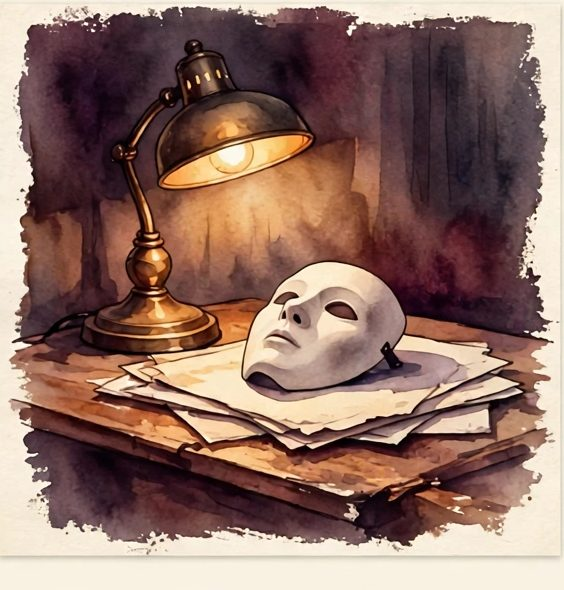
At dusk a mask hangs crooked on its hook, one strap slipped, the coat beneath it unbuttoned
At the end of the long day, the working mask hangs crooked. The strap has slipped a fraction; the composed expression arrives a half-second later than it did at nine; the patience, that most expendable of the professional virtues, is visibly running on its reserve tank. This is the tired professional, and the Keeper wishes it entered in the register that no citizen has ever disgraced themselves in this condition half as much as they believed at the time. What colleagues saw, at half past five, was not a fraud exposed. It was a garment at the end of its shift, worn by a person at the end of theirs, both entitled to the same mercy.
There is even a use in the crooked hour, for the student of this hall's subject. When the performance thins, the gap between the portraits — that stretch of bare wall from the first hall — can be studied at its widest and therefore at its clearest. The citizen who watches their own six o'clock face with a tailor's eye rather than a prosecutor's learns the true dimensions of the difference the whole working wardrobe manages: an inch of polish here, an inch of patience there, nothing that a night's rest does not rehang straight. The tired professional is not the mask failing. It is the mask, examined honestly, at the moment of its lowest ebb.
So the desk's counsel for the crooked hour is rest, not confession — a closed door, a loosened strap, an evening in the back rooms of the house. Judgment passed on the portraits at dusk is the least reliable judgment in the register, and the Keeper declines to record it. The strap, after all, can be re-sewn in the morning; straps usually are. What cannot be re-sewn at any hour is the citizen's opinion of themselves, which is why the desk guards it so carefully against dusk judgments. The tired professional is not the mask slipping into truth; it is the truth that masks, like their wearers, are entitled to rest.
35Taking the Tie Off
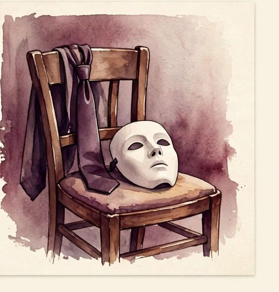
A tie hangs loose over the back of a chair, and the whole room exhales with the evening
Every wardrobe has its closing ceremony, and the working day's is the smallest honest ritual in the building: taking the tie off. It may be a literal tie, or the heels by the door, or the lanyard dropped into the drawer, or only the voice — the receiving voice, switched off somewhere on the commute like a sign at closing time. The stages matter. The mask is not torn away; it is retired in order, strap by strap, room by room, exactly as it was assumed in the morning. A garment removed in sequence comes off clean. A garment ripped off takes some of the wearer with it.
The ritual's real function is a signal, and the audience is the self. The private face — which has been waiting, with whatever patience it could assemble, since nine o'clock — receives formal notice that the performance has ended: not paused, not merely relocated to the telephone, but ended, on purpose, for the day. Citizens who omit the ceremony report a recognisable symptom: the meeting voice answering the family at the dinner table, the professional patience deployed against the cat, the whole front portrait still on duty at midnight because nobody told it the shift was over. The tie comes off so that the order can be given.
The Keeper recommends the ceremony be kept short, kept daily, and kept kind — a glass raised, in effect, to both faces of the day. The mask is thanked, or at least not cursed; the private face is welcomed, or at least not interrogated. Some citizens have extended the ceremony with an inventor's pride: the shoes changed before the telephone is answered, the work telephone left in a drawer like a sleeping animal, the first unprofessional sentence of the evening spoken aloud to the empty kitchen as a flag being lowered. The Keeper approves of all of it. A boundary with a ritual is a boundary that survives tired weeks. Taking the tie off is the day's smallest honest ceremony: the mask returns to its hook, and the face returns to its owner.
36Good Work Behind a Mask Is Still Good Work
The working hall closes with the audit question, and the Keeper puts it in the plain terms of the register: does the performed manner discount the work performed behind it? The question is asked in confessionals more often than in appraisals — I was only acting competent; the calm was a front; the authority was borrowed. The estate answers with exhibits. The bridge designed by an engineer who was frightened the whole season, behind a mask of perfect assurance, stands, and carries traffic. The consolation offered by a nurse who was grieving herself, behind the gentlest professional manner in the ward, consoled. The accounts kept straight by a clerk in terror of the audit are straight.
The audit principle is simply that work is judged by its fruit, as it always has been, and the mask is part of the orchard's equipment. Nobody inspects the harvest and demands to know the farmer's facial expression in July. The calm that steadied the meeting, the patience that carried the class through the difficult term, the cheerfulness that held the ward together in the bad month — these were not decorations on the work, nor deductions from it. They were means of production, as real as the tools on the bench, and the output bears their mark the way joinery bears the mark of a well-kept plane.
So let the finding be entered before the hall moves on to lighter rooms: the mask is acquitted of the charge of discounting, in every case where the work itself stands inspection. What was built, taught, healed, filed, cooked, carried, or consoled behind a performed face was built, taught, healed, filed, cooked, carried, or consoled. The citizen who built the thing, taught the class, or held the ward together is therefore instructed to sign the work without the apologetic footnote that the fashion for confession demands. The signature is accurate. The hand that signed was theirs, the season was theirs, and the mask — as this hall has argued from its first room — was also theirs. Good work behind a mask is still good work; the harvest is not asked what the farmer's face was doing.
37The Social Mask
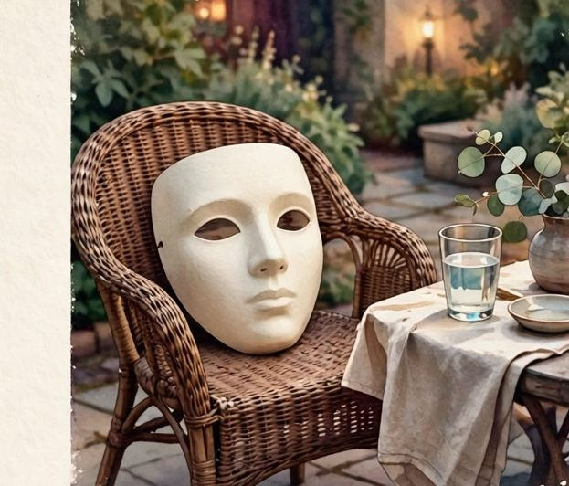
A bright mask of evening weight hangs by the front door, beside the good coat
The hall turns now to the evening wardrobe, and the first thing a visitor notices is the change of materials. The social mask is lighter than the working one, brighter, cut for ornament as much as for protection — the face assembled for dinners, parties, weddings, reunions, and the long bright gauntlet of other people's celebrations. It hangs by the front door beside the good coat, and it is donned with a sigh that citizens misreport as reluctance. On inspection, the sigh is usually anticipation wearing reluctance's coat: the social mask is work, certainly, but it is the wardrobe's most sociable work, and the evening sometimes rewards it beyond its wages.
Its construction deserves a paragraph, because the social mask is frequently accused of being the emptiest of the collection, all surface. The surface, however, is engineered: interest performed at a level slightly above the citizen's spontaneous supply, until — the register has logged the phenomenon too often to doubt it — the performance generates the genuine article in mid-conversation. Anecdotes trimmed to the length the room can hold. Old sorrows left, by agreement of both portraits, in the cloakroom. It is not a hollow face. It is a face fitted with the equipment strangers need from one another: evidence of welcome, and proofs of harmlessness, displayed early and clearly.
And the deepest defence of the piece is universal and short. Everyone at the gathering is wearing one; the event itself is a wardrobe with refreshments, and the masks recognise each other across the room with the solidarity of fellow equipment. The hosts of the estate understand the arrangement from the other side, which is why the invitations keep coming. A guest in a well-kept social mask is a gift to a room: portable weather, guaranteed mild. The citizen who fears their evening face is a fraud upon the gathering has it precisely backwards; it is the gathering's uniform, and turning up without it would be the evening's only real discourtesy. The social mask is not the enemy of the gathering; it is the gathering's dress code — and dress codes are how strangers agree to be kind.
38The Party Version
A mask with a readier laugh rests on the hall table beside a bowl of keys
Within the social wardrobe there is a further fitting, brighter than the dinner face and braver than the citizen: the party version. Its calibration is well known to its wearer — the self with everything raised by two notches. The laugh readier, the stories longer in the telling, the opinions warmer and more definite, the dancing, in certain documented cases, undertaken. Strangers who meet only this version sometimes accuse the citizen, on a later and quieter acquaintance, of having sent a substitute to the party. The citizen, arriving at the desk, sometimes makes the same accusation against themselves, and the Keeper must talk them both down with the tailor's tape.
For the party version is not a different self. It is the same self at a higher volume — and volume, in this hall's bookkeeping, is a setting, not a statement. The anecdotes are the citizen's anecdotes. The warmth is the citizen's warmth, amplified by occasion, music, and the ancient permission of a room full of other amplified people. That the amplifier is switched off at home, and the voice returns to its domestic level, is no more a confession than a radio is lying because it also has a quieter setting. The party version exaggerates nothing that is not there; it merely declines, for one evening, to understate it.
Citizens differ in their arrangements with this piece, and the register records both without preference. Some wear their party version with love and give it every Saturday. Some rent it by the evening, marvel at its energy, and return it at midnight with gratitude and relief. The two notches, examined closely, are usually accounted for by the simplest entries in the register: rest taken, company desired, a week that ended better than it began. Nothing in the party version is imported. It is domestic stock, displayed under better lighting — and the lighting, as the portrait rooms established long ago, is nobody's lie. The party version is the self with the volume raised — and volume, like everything else in the wardrobe, is a setting, not a confession.
39Small Talk as Armor
The lightest piece in the evening wardrobe, and the most underestimated, is small talk: the weather, the journey, the state of the roads, the food, the mutual acquaintance located with relief after three exchanges. Literary opinion has dismissed it for centuries as the froth on conversation, the sound of minds saying nothing at length. The Keeper, who has watched ten thousand introductions from behind the desk, enters a dissent. Small talk is not failed deep talk. It is a separate instrument with a separate purpose, and its purpose is armour — a light, polished shield-wall of perfectly safe subjects, raised between strangers while they decide, behind its cover, whether to lower it.
Armour, properly understood, is not a deceit. It does not claim the wearer is invulnerable; it acknowledges, on the contrary, that the wearer is not, and that an unarmoured meeting between strangers would wound both parties with premature intimacies and unanswerable questions. Behind small talk's bright and boring surface, the real assessments proceed in safety: Is this person kind? Are they listening? Is the door of this conversation one I wish to open further, or politely leave? None of that could happen at all, the register notes, if the first exchange had to be conducted in the raw material of souls.
So the piece is kept polished, and citizens are discouraged from apologising for it in the act of using it. The apology — I am sorry, I am terrible at small talk — is itself small talk, and usually excellent. There is a courtesy hidden here that the critics of froth never notice. Small talk is the only conversation every stranger is guaranteed to be fluent in; it excludes no one, it requires no preparation, and it can be laid down the instant something better offers itself, without offence to either party. A more democratic instrument was never fitted to a mask. It is the hall's smallest piece and, on the evidence of ten thousand doorways, among its hardest-working. Small talk is armour polished bright, and armour is worn precisely so that the meeting can happen at all.
40The Agreeable Self
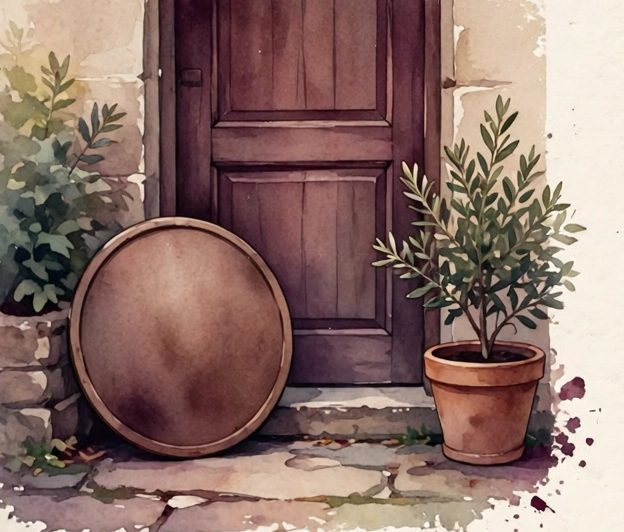
A mild mask with an easy nod rests beside a door held open for someone else
The social hall's last resident is the agreeable self: the version of the citizen who says the pleasant thing, takes the smaller portion, laughs at the story's intended place, and lets the disputed point go by like a bus they did not need to catch. Its expression is a nod worn smooth. Its motto, if mottoes were issued in this wardrobe, would be no trouble at all. It is often genuine temperament — some citizens are simply built at a low angle of friction — and sometimes it is a strategy, with roots running back through the wardrobe to a small chair in an earlier room, where a polite child first learned what agreeableness purchases and what it costs.
The estate's audit of this piece is the gentlest in the hall, but it is an audit. Agreeableness protects real goods: the peace of a household, the survival of a friendship through its difficult season, the evening that did not need to end in a verdict. It also has a price list, and the Keeper asks citizens to read theirs once a year. What is postponed, every time the agreeable self holds the door, is the citizen's own sentence — the preference unstated, the objection unfiled, the tiredness unmentioned. A sentence postponed occasionally is courtesy. A sentence postponed for a decade is a biography written by other people, in a hand the citizen no longer recognises as partly their own.
So the agreeable self is neither dismissed nor indulged, but put on the register's annual review, with one question attached — the only question this hall ever asks of a host. The register's remedy, where the audit finds the host exhausted, is not a coarser self or a louder one; it is a rota. Other faces, other evenings, other people's doors held open in return — the agreeable citizen is not asked to become less kind, only to be included, occasionally, in the kindness. The door, after all, was hung to swing both ways, and the house is warmer for every guest who has also, sometimes, been allowed to arrive as one. The agreeable self is a host at the door of every conversation; the only question the register asks is whether the host is ever allowed to sit down.
41Laughing at the Right Volume
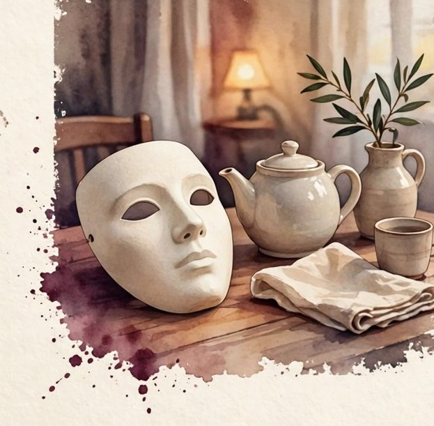
A row of empty theatre seats faces a lit stage, a single programme resting open on one armrest
There is a laugh for the boardroom and a laugh for the kitchen, and they are not the same instrument played at different volumes so much as different instruments altogether. The boardroom laugh is measured — a courteous sound, produced on cue, that says the joke has been received and registered and the meeting may proceed. The kitchen laugh arrives uninvited and leaves the ribs sore. Between them lies a whole quiet craft that most adults practise without ever naming: the calibration of joy to the room it is in, so that nobody is startled and nobody is left outside the warmth of it.
The Keeper of the wardrobe keeps a note on this mask, because it is one of the most frequently worn and the least examined. Laughing at the right volume is not dishonesty; it is tailoring. A person who laughed at a funeral the way they laugh at a wedding would not be more honest, only less dressed. The mask here is a courtesy to everyone present, a small social garment put on so that other people's comfort is not left to chance. The register records it without a flicker of disapproval, under social equipment, standard issue.
What matters, as with every garment in the wardrobe, is that it comes off somewhere. The laugh that is always at the right volume, in every room, at every hour, begins to cost the wearer the memory of the other one — the unmeasured laugh that shakes the shoulders and ruins the composure. Keep a room in the house where the volume does not matter. The register has a marginal note on the subject: nobody has ever been harmed by hearing the kitchen laugh in the kitchen. The mask is a fine servant at the door; it makes a poor tenant of the whole house.
42The Mask for Strangers
The stranger mask is the lightest in the wardrobe and the most honest about its purpose. It is worn for the brief republic of the pavement, the train carriage, the queue — encounters that will last minutes and be remembered by no one. It offers a face that is pleasant, unremarkable, and closed for further business, and it asks the same in return. It is, in the best sense, a uniform for weather that will not be remembered. Under its protection, two citizens can share a bench, an elevator, a delayed platform, in perfect and mutual peace.
The estate counts this mask among the civilizing garments. The stranger does not need the true face, and the true face, frankly, does not need the stranger. What passes between them is a small treaty: I will not trouble you with my weather, and you will not trouble me with yours, and we will both get home dry. The treaty is renewed thousands of times a day in every city on earth, and it has never once required a signature, a ceremony, or a word spoken aloud. The mask for strangers is the uniform of that treaty, pressed and kept by the door.
It is worth saying plainly that this mask hides nothing shameful. It hides the ordinary, which is entitled to its privacy like anything else in the house. A face that owes the street nothing but courtesy is not a false face. The wardrobe keeps it pressed and unpatched for precisely that reason: a short journey deserves the same correctness as a long one, and the face that wears it arrives home with its energies unspent on strangers. It is a face correctly dressed for a short journey among people it will never see again, and there is a kind of dignity in wearing it well.
43The Mask for Acquaintances
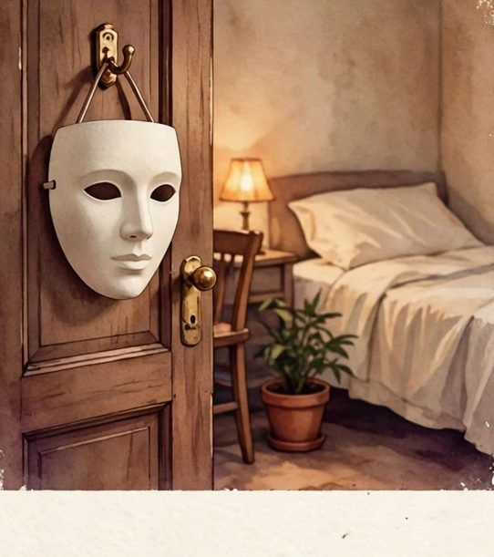
Two masks rest on a garden wall between two houses, morning light catching their edges
Acquaintances occupy the middle distance of a life — nearer than strangers, farther than friends — and the wardrobe keeps a mask fitted precisely to that distance. It is warmer than the stranger's, cooler than the friend's. It remembers names, asks after the garden, expresses pleasure at meetings and regret at partings, and it does all of this sincerely, within limits it does not announce. The acquaintance mask is not a lesser friendship. The distance is not a failure of warmth; it is one of warmth's standard measurements. It is a different and complete form of regard.
Its great virtue is sustainability. No household can run intimacies at the scale of a whole town; the heart has a seating capacity, and the register is blunt about the arithmetic. The acquaintance mask allows a person to move through a wide world of colleagues, neighbours, and fellow parents with genuine goodwill and without bankruptcy. The register has audited the alternative — a life in which every acquaintance is treated as an intimate — and found it ends, reliably, in either exhaustion or dishonesty. Everyone is greeted, nobody is promised the cellar tour, and the arrangement, understood by all sides, harms no one.
Trouble begins only when the mask is mistaken — by its wearer or its audience — for the thing it resembles. An acquaintance promoted in the imagination to a confidant will eventually knock on a door that was never built. The mask itself is blameless; it never claimed to be a face. Most citizens wear it for decades without a single complaint from either side of the wall it stands on, which the Keeper counts among the strongest evidence in this hall. Keep it clean, keep it kind, and let it be exactly what it is: the well-made uniform of the middle distance.
44Being Charming Is a Craft
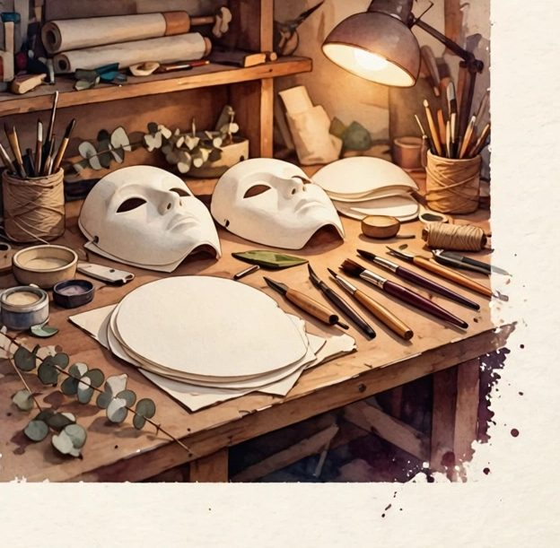
A workbench in the wardrobe holds brushes, thread, and a mask mid-repair under a lamp
Charm is so often mistaken for a gift that the wardrobe keeps this room as a corrective. Charm is a craft. It is learned the way joinery is learned: by watching a master, by ruining the first attempts, by developing an instinct for the material — which, in this trade, is other people's ease. The charming person is not radiating some fortunate essence. The wardrobe has examined hundreds of allegedly natural charmers and found, behind every one of them, the marks of the bench: practice, failure, adjustment, and practice again. They are working, gracefully, at a bench they have stood at for years.
The tools of the trade are unglamorous: attention, timing, memory for names and preferences, the discipline of asking the second question, the mercy of not telling the story that would top the story just told. None of it is fake, and that is the point the register underlines. A crafted thing is not a false thing. The chair is not pretending to be a chair because someone made it carefully. None of these tools can be bought ready-made, which is why the craft takes years and why its masters are so often mistaken for the merely lucky. Charm, made carefully, is as real as the chair.
The mask of charm only becomes a matter for this hall when the craft is used to keep the workshop permanently closed — when being delightful becomes the moat rather than the bridge. Charm that admits people is a craft in good standing. Charm that entertains them at the gate, forever, so that no one ever reaches the house, has quietly changed trades. The register keeps both kinds of file, and the difference between them is visible from across the room: one workshop has its door open, and the other has only a very entertaining wall. The bench knows the difference even when the audience does not.
45The Exit Face
Every practised social citizen owns an exit face, and it may be the most merciful garment in the wardrobe. It is the expression assembled in the last ten minutes of an evening: gratitude warming the features, regret softening them, the whole face announcing that this has been lovely and is now, gently, complete. It is assembled, notably, without consulting the evening's actual pleasures, which may have ended hours ago or may never entirely have begun. It allows a departure to be made without wound, apology, or the small dishonesties of the fading guest who stays an hour past their own enjoyment.
The exit face has a partner garment — the face of the host who receives it well — and between the two of them, evenings end the way trains were once supposed to arrive: on time and without incident. The register notes that this mask serves everyone in the room. Whole friendships in the register have been preserved by nothing more than this: two people who each knew when the evening was over, and said so beautifully. The tired are released, the hosts are thanked rather than endured, and the evening is sealed at its best moment instead of being allowed to spoil slowly at the edges.
There is no shame filed anywhere near this mask. To leave gracefully is a skill, and the exit face is simply its uniform. A person need not perform enthusiasm for an event they have finished enjoying; they need only finish kindly. The wardrobe's advice, insofar as a wardrobe advises, is to keep the exit face pressed and ready. The guest who masters it is remembered as wonderful company long after the details of the evening have dissolved. The guest who lacks it is remembered too, and differently, and the register is too polite to say how. Few garments get a person home happier.
The Mask Desk
One desk receives all correspondence for this wardrobe — questions, corrections, greetings, and word of masks you are thinking of retiring. It is read in the order it arrives.
46The Guest Who Is Easy to Host
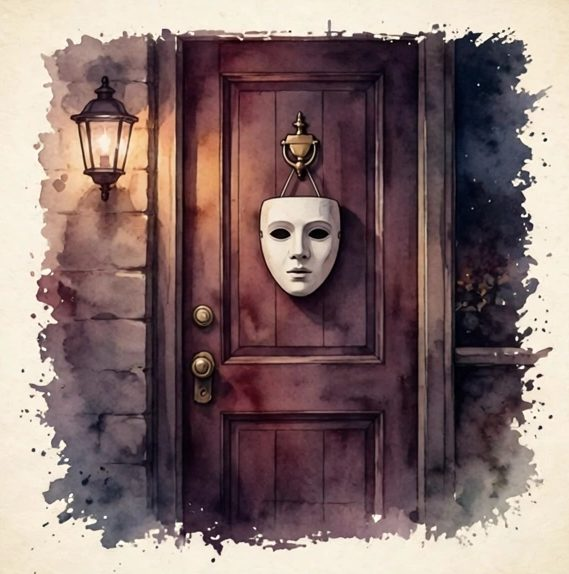
A guest room stands ready, bed turned down, a small vase of flowers on the sill
Somewhere in every social life there is a reputation quietly kept, and one of the best of them is this: an easy guest. The mask of the easy guest is worn by people determined that their presence in another's house shall cost the host as little as possible. It admires the food, accepts the mattress offered, laughs at the plumbing, rises at a reasonable hour, and leaves the room tidier than any reasonable host required. The reputation is never awarded formally, but it circulates — hosts compare notes the way keepers compare weather, and the easy guest is invited again. It is hospitality answered with hospitality.
Like all the social garments, this one is real work wearing light clothes. To be easy to host, a person suppresses preferences they genuinely hold — the mattress is wrong, the hour is early, the coffee is an adventure — and the suppression is the gift. The host, who is performing labours of their own behind a matching mask, receives the one present they most wanted: the sense that the effort landed. Neither party mentions the arrangement, because mentioning it would be the one genuinely awkward moment of the weekend. Two masks, each worn partly for the other, and the weekend succeeds.
The register files this mask under kindnesses rather than deceptions, and the distinction matters to the whole hall. A deception takes something from its audience. The easy-guest mask gives something to its audience at cost to its wearer. If there is performance here, it is the performance of a string quartet — rehearsed, effortful, and entirely for the listeners. The register's auditors have searched these files for the hidden injury and reported, year after year, that there is none worth the ink: everyone was fed, everyone was rested, and everyone was, within the honest limits of mattresses, glad. The face beneath it has lost nothing by being considerate.
47What Politeness Is For
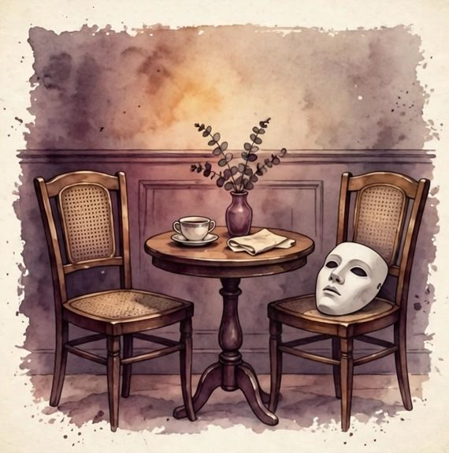
A polished brass rail runs beside a wide staircase, catching the afternoon light
Politeness is the load-bearing fiction of the social halls, and this room exists to say what it is for. It is not for concealing contempt, though it can be made to do that by determined tenants. It is for sparing strangers the full weather of one another. It is, in short, a public utility disguised as a personality trait, maintained by millions of unpaid workers who will never be thanked for the infrastructure. Politeness is the agreement that no one's worst hour will be presented as their introduction, and that the machinery of meeting — greeting, queueing, thanking, parting — will run on rails of courtesy rather than on raw feeling.
The brass rail beside the staircase does not pretend the stairs are not steep. It simply gives every climber something to hold. Politeness works the same way: it does not deny that people are tired, grieved, distracted, or difficult; it provides a handhold by which all of them can still get up the stairs together. The mask of politeness is that rail made wearable, and societies that polish it daily are not more hypocritical than others. A staircase without a rail is climbed by the young and the lucky; a staircase with one is climbed by everybody, including the grieving, the exhausted, and the old. They are merely less bruised.
The Keeper's entry on this garment is brief. Politeness is for the protection of everyone in the room, including the person wearing it, and it asks so little — a greeting, a pause, a softened sentence — that its economy is miraculous. Wear it without embarrassment. The Keeper adds only that the rail must be held lightly — gripped in panic, politeness becomes its opposite, and the register has files on that too. The face that can only manage courtesy today has still managed courtesy, and on many days in the register, that has been the whole of a person's kindness, and enough.
48The Social Mask, Set Down at Home
The homecoming has a small ceremony that no one performs and everyone recognizes: the door closes, the coat comes off, and somewhere between the hallway and the kitchen, the social mask is set down. Shoulders descend an inch. The face is allowed to arrange itself for no one. Guests are shown the front of the house all day; the homecoming is the one appointment of the day at which the house shows its back to nobody but its tenant. Whatever expression assembles there — tired, blank, relieved, quietly flat — is the first unadministered expression of the day, and the house receives it without comment, which is the house's great virtue.
This room is in the hall to establish the control condition, as it were. The social mask is measured honestly only against the moment of its removal. If setting it down brings relief like a held breath released, the mask was doing ordinary work at ordinary cost. The wardrobe insists on the pencil: a single evening's strange reflection is weather, not climate, and is filed as such. If setting it down brings a stranger's face into the mirror — if the wearer cannot immediately find the expression that belongs to no audience — the wardrobe takes note, in pencil, for a later room of this hall.
For most citizens the ceremony is brief and the ledger balanced. The day face is hung by the door with the coat, where it belongs, and the evening face takes its shift. The estate's whole doctrine of the social mask stands in this small daily fact: a garment that comes off at home is a garment. On that day — and the register is scrupulously neutral about whether it ever comes — the garment will have changed employers, and the face will be working for the mask instead of the other way round. It becomes a subject for concern only on the day it declines to.
49The Brave Mask
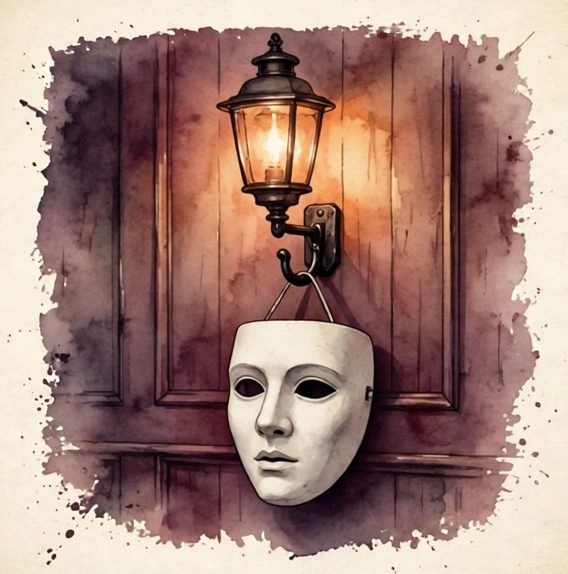
A plain mask of pale, unadorned material hangs alone on the wardrobe wall, its straps neatly tied
We come now to the most respected garment in the wardrobe, and the one this hall handles with the softest hands. The brave mask is the face assembled in the presence of bad news, frightened children, frightened colleagues, frightened selves. It is calm where calm is needed. It says the situation is in hand, usually before the situation has agreed to be. It is worn into hospital corridors, into difficult meetings, into the small hours of bad years, and it has carried more households through more storms than any other item in the collection.
The register is careful with its bookkeeping here. The brave mask is not filed as a lie, because it does not, in itself, deceive about the facts; it declines to display one of them — the wearer's fear — in a room where that display would cost others their footing. A captain who keeps his voice level is not claiming the sea is calm. He is keeping the crew able to work. The register permits itself one dry observation: the captains who lose crews are rarely the level-voiced ones. The brave mask is level-voiced equipment, and the estate honours it accordingly.
But every entry in this hall has two columns, and the brave mask's second column is longer than most. What it saves the room, it charges the wearer. The fear that was not displayed does not evaporate; it is stored, with interest, in the body that held the face. Interest, in the body's accounting, is charged in the currency of sleep, appetite, patience, and the small change of ordinary joy — all of it itemized elsewhere in this hall. The rooms that follow merely open that column of the ledger and read it aloud — without pathos, and without instructions.
50I Am Fine, in Four Languages
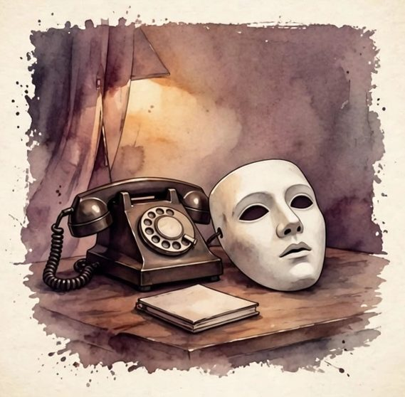
Four small masks of identical expression rest in a row on a shelf, their straps hanging in a line
There is a sentence that exists in every language the estate has ever registered, grammatically simple, instantly available, and almost never a report: I am fine. It is said in hospital corridors and office kitchens, across telephone lines to worried mothers, at school gates and gravesides. The estate's linguists have failed to find a language in which the sentence is commonly used to convey information about the speaker's actual condition. The sentence is the spoken form of the brave mask — a small, portable, all-weather garment that can be produced in any tongue at a moment's notice, including tongues the speaker otherwise barely commands.
Its fluency is worth pausing over. People who cannot order coffee in a language can still say I am fine in it, because the sentence is not learned from phrasebooks. It is learned from necessity, usually young, and practised until it is accentless. The register notes that the sentence's real grammar is not declarative but diplomatic. It does not describe the speaker's condition. A sentence learned that early and used that often becomes part of the wardrobe's permanent collection, issued before the wearer can spell it. It manages the listener's — it is a small door closed gently, so that the conversation, the day, the visit can proceed.
Nothing in this room is an argument against the sentence. Whole architectures of love and work rest on it, and the estate would no more confiscate it than it would confiscate umbrellas. The entry only records what every fluent speaker already knows: the sentence is a garment, not a window. It tells the listener that the wearer has dressed for the occasion. Other garments announce themselves — a uniform, a costume, a disguise. This one simply answers the telephone, and the weather stays indoors, undiscussed, in every language at once. What the weather actually is, the sentence does not say, in any of its four languages.
51The Cheerful Performance
The cheerful performance is the brave mask's more theatrical cousin: not merely calm under difficulty, but bright. It is mounted by people who have concluded — correctly or not — that their role in the household, the office, the friendship is to be the weather's opposite. However the day is actually going, the performance holds the room at a steady, sunny temperature. Jokes arrive on schedule. The performance is rarely announced and never apologized for; it simply opens, nightly, in the kitchen, and runs for as long as the household requires weather. Spirits are kept up, including, by long practice, the performer's own manner of keeping them.
The estate is not deceived about the economics of this. Cheerfulness performed daily is labour, and skilled labour at that; anyone who doubts it is invited to be delightful at a breakfast table in the worst month of their year. The register pays the performance the respect of calling it work. The register has never found a way to price this labour, and has stopped trying; some entries are kept in honour rather than in numbers. It also records, in the same handwriting, the arrangement's quiet condition: the audience rarely learns that a performance is occurring, and so rarely thinks to ask what the performer does on their own dark days.
The entry closes without verdict, as the honest entries in this hall tend to. The cheerful performance has carried whole families through winters they remember as merely snowy. It has also, in other files, been struck like a set the night the theatre closed — everyone surprised, the actor most of all, that it had been scenery. The mask is neither honoured nor blamed here. Between those two files there is no difference in the acting — only in whether the actor owned the theatre, or the theatre, in the end, owned the actor. It is measured, and its measurements are taken seriously.
52Strength as a Costume
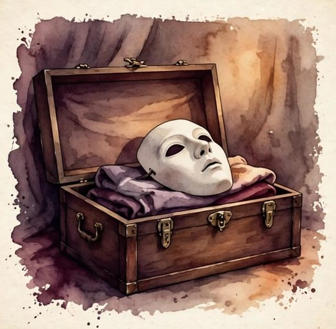
A heavy, broad-shouldered coat hangs in the wardrobe, its seams reinforced with double stitching
Strength, in the wardrobe's catalogue, is listed as a costume — not because strength is unreal, but because the appearance of it is so often tailored separately from the supply. The costume has a recognizable cut: shoulders set, voice lowered and slowed, decisions issued without visible consultation with fear. It is, the Keeper notes, the only costume in the wardrobe that other people are permitted to lean their full weight against without asking. It is worn by the person everyone leans on, frequently because the costume is what invited the leaning, and the leaning then requires the costume, in a rotation the register knows well.
The costume's peculiar burden is that it cannot be seen to be adjusted. A soldier may rest his pack; the strong one may not set down the appearance of capacity without alarming the very people the appearance exists to steady. The register has files in which the private management failed quietly for years — the straps let out one notch per winter, the seams inspected by no one. So the straps are managed in private, the seams reinforced in private, the wearer's own supply of strength replenished — if it is replenished — in hours that appear in no one's diary, least of all the wearer's.
The estate keeps no argument against the costume. Some seasons genuinely require one person to be the harbour wall, and the costume has held back real seas. The bookkeeping only notes the difference the wearer is trusted to know: between wearing strength for a crossing and being issued it as a permanent uniform. A costume known to be a costume can be hung up at the end of the storm. The storm, unlike the uniform, is under no obligation to be permanent, and the wardrobe's whole sympathy is with garments that know their season. A uniform expects to be worn to bed.
53The Mask Worn in Waiting Rooms
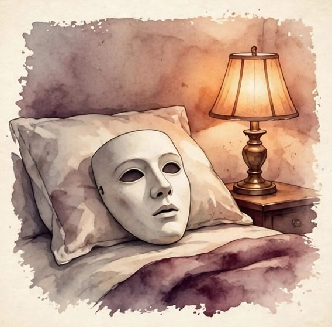
A row of chairs lines a quiet corridor, one mask resting on the seat nearest the door
Every wardrobe holds a mask reserved for waiting rooms, and it is among the most carefully finished in the collection. Waiting rooms — for diagnoses, for verdicts, for news of aeroplanes and operations — are places where time misbehaves and composure is a public duty. The mask worn there is composed, patient, mildly interested in old magazines. It nods at the others. It does not pace. Even the magazines are part of the equipment: they give the eyes somewhere official to be. It holds its fear the way one holds a full cup crossing a crowded room: carefully, and entirely for the sake of others.
The peculiar feature of this garment is that everyone in the room is wearing one. The waiting room is a small republic of brave masks, each citizen performing steadiness partly for the strangers beside them, each privately aware of the performance across the aisle, nobody fooled and everybody grateful. A nurse passing through such a room can read it like a chart: a dozen brave masks, all functioning, all quietly holding one another's coats. The register finds this one of the most decent arrangements in the whole estate: a conspiracy of courtesy among people who have never met, holding one another up with faces.
When the door finally opens and the name is called, the mask is not removed — it is promoted. It walks into the smaller room and does its best work there, receiving news at a level volume so that questions can be asked and answers heard. Whatever the face does afterwards, in the car park or the corridor, is its own affair. The mask has completed its shift. It rarely receives thanks, and never asks for any. The register, closing the file, notes that this is the mask's whole contract: to be strongest exactly when it is least about itself.
54Not Wanting to Worry Anyone
Behind a great many brave masks the register finds the same small, tender motive, entered in the wearer's own hand: not wanting to worry anyone. It is the reason the diagnosis waits until after the holiday, the reason the debt is carried silently, the reason the voice on the telephone is kept bright and steady and brief. The mask here is not vanity and not pride. It is a form of housekeeping — the wearer tidying their trouble into the smallest possible corner, so that the people they love can move about the house unobstructed.
The bookkeeping of this motive is genuinely double-sided, and the hall declines to simplify it. The worry that is not shared is not destroyed; it is relocated — wholly into the one set of shoulders that volunteered. Meanwhile the protected parties, who were judged too fragile or too busy or too dear to be burdened, are quietly denied something the register counts as a right: the chance to be useful to someone they love. The register, which protects nobody's feelings in its bookkeeping, records both entries side by side and lets them stand. Protection and exclusion can wear, at a glance, the same coat.
No ruling is issued from this room; the motive is too honourable and its outcomes too various. Some worries genuinely are better carried briefly and alone, and some families genuinely would only add weather to weather. The entry simply records the cost line in full, because the wearer rarely does: the worry unworn by everyone else is worn, undiluted, by one. The mask fits a single face. The same files show the worry, carried alone, growing the way all unshared things grow in the dark: not necessarily larger, but considerably heavier for its size. That is precisely its design, and precisely its price.
55The Joke That Covers
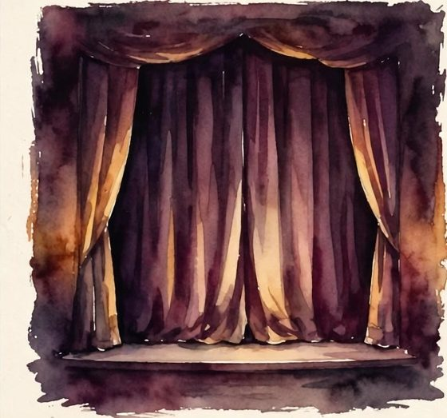
A jester's small mask with bells rests on a table beside an untouched glass of water
The covering joke is the fastest garment in the wardrobe — produced in a heartbeat, deployed at the exact moment a conversation approaches the wearer's unguarded country. A question lands too close; the joke goes up like a flare, everybody laughs, the moment turns aside, and the expedition into the interior is postponed for another season. The skill involved is not small. The flare is almost always forgiven, because everyone at the table has fired one themselves within the month. Timing a deflection so that it reads as wit rather than evasion is an art many adults practise daily at professional standard.
The register, which admires craft wherever it finds it, enters this mask without reproach. The joke that covers has real mercies in it. It spares the asker the embarrassment of having asked; it spares the room the weight of an answer it did not truly want; it lets a gathering remain a gathering rather than becoming an inquiry. Entire regiments of difficult truths, the register notes, first entered friendly territory disguised as jokes, and were only later recognized as the news itself. Many truths owe their eventual telling to having first been joked about safely at a distance, the way scouts are sent ahead of armies.
The cost line, when it comes, is quiet. A joke deployed every time the border is approached eventually builds a reputation — the wearer becomes the one who is never serious, the one it would be almost rude to ask — and the border, thoroughly defended, can cease to have a gate in it at all. The mask was built to cover a face at chosen moments. A gate, after all, is the difference between a fortress and a home. It performs best when the wearer still chooses the moments, rather than discovering that the choosing has been outsourced to the bells.
56The Mask for Bad News Days
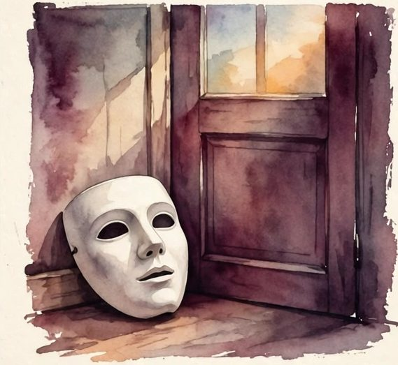
A sober mask of dark material hangs by the door, a plain coat and gloves arranged beneath it
Bad news has its own dress code, and the wardrobe keeps a mask cut for the days it governs. Its features are settled and serious; it does not smile at the wrong things or flinch at the necessary ones. It is worn to the hospital, the solicitor's office, the house where someone has died. Around its wearer, practical things get done: forms are signed, trains are met, sandwiches are made for people who say they are not hungry. The mask is competence made visible, and on bad news days, visible competence is a public service.
What the mask conceals on such days is not weakness but sequence. The wearer's own grief or fear is real and present, simply scheduled later — put in a room down the corridor with a chair and a promise. The register notes this arrangement respectfully, because on the worst days it is often the only one available, and the person wearing the mask is usually the person the whole day is leaning on. The mask does not postpone feeling out of coldness. Triage, unlike coldness, has a schedule and keeps it; coldness has neither, and the register knows the two faces apart at a glance. It postpones it out of triage.
The entry would be incomplete without the later hour, which the ledger also records: the corridor room does get visited, most nights, when the forms are signed and the sandwiches eaten. The face comes off among the coats, and whatever was scheduled is kept. The mask for bad news days is among the wardrobe's honourable instruments precisely because its wearers mostly do keep that appointment. The appointment is rarely kept in tears, incidentally; more often it is kept in a parked car, a bathroom, a garden at midnight — wherever the house keeps its unobserved rooms. It is a mask that knows it is a mask — and plans, faithfully, for its own removal.
57Courage and Its Understudy
In every production there is the performer announced in the programme and the understudy who actually plays the long run of ordinary nights. Courage, the estate observes, works the same way. The announced courage — the dramatic kind, summoned for emergencies — appears rarely and takes the applause. The understudy is the brave mask's daily shift: getting up, showing up, keeping the voice level, again, on a Tuesday, in the rain, with no audience and no prospect of the run ending. Most of what is called bravery in the register is the understudy's work.
The understudy's craft is unglamorous and almost perfectly reliable. It does not require feeling brave; it requires only the costume, the lines, and the willingness to walk on. The register is oddly tender toward this arrangement, because it means courage is available to people who do not feel courageous — which is to say, to everyone who has ever needed it. The audience, for its part, almost never asks for the announced star; it asks only that somebody walk on, in costume, on time. The mask supplies the performance on days when the supply of the feeling has run dry, and no theatre in the world can tell the difference.
The ledger's one caution about the understudy is a labour note. A performer who never leaves the stage eventually forgets there is a dressing room. The understudy deserves — in the flat bookkeeping sense of the word, as a matter of maintenance — intervals in the wings, where somebody else's courage can hold the scene. Even one scene. The register is aware of the arithmetic of collapse: it costs the production everything and the audience its only reliable performer, all to save the price of an interval. The production is long, and the estate prefers its understudies rested to its understudies collapsed.
58When the Brave Mask Helps
A lantern burns steadily in a ship's cabin window while dark waves move beyond the glass
This room is the honest other side of the ledger, and the hall insists on it. The brave mask, at its best, genuinely helps — not as a cover for the wearer but as infrastructure for everyone nearby. A level face in a crisis is load-bearing. Children read it and stay regulated; colleagues read it and stay capable; the frightened read it and borrow its steadiness the way travellers borrow a lantern. Infrastructure is never applauded while it works; it is noticed, like bridges and brave faces, mainly in the hour it is absent. There are hours in every household's history that would have gone materially worse without it.
It helps the wearer too, in a way the register records without embarrassment. A face arranged into composure sometimes leads the rest of the person there, the way assuming the posture of sleep occasionally produces sleep. The performance is not always a performance; it can be a rehearsal that becomes the thing itself. The corridor, in these reports, is always longer in the telling than it was in the walking — the mask's final service to its wearer. Many citizens report that the mask got them through the corridor, and the person who came out the other side was, to their own surprise, actually steadier for having worn it.
The estate therefore enters the brave mask in its catalogue of useful garments in good standing — oiled, mended, honoured. The difficulties catalogued in the neighbouring rooms are not an indictment of the mask but of its scheduling. A tool that saves the day is still a tool, and the question the hall keeps asking is never whether the mask should exist. Permitted by whom is a question the hall answers in its closing room, and the answer, when it comes, is shorter than the wearers expect. It is only whether the wearer is ever permitted to set it down.
59When the Brave Mask Costs
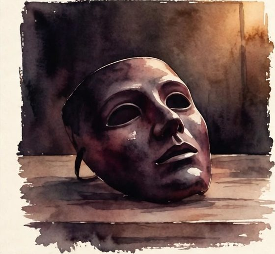
A mask hangs from a hook by one strap, its other strap worn thin and fraying
The cost of the brave mask is not dramatic, which is why it escapes accounting for so long. It is paid in small currency: sleep that comes late or shallow, a temper that frays at home over nothing, the slow conversion of all friendships into audiences — relationships in which the wearer performs wellness and receives applause instead of help. None of these entries looks like a crisis. Together, over years, they amount to the true price of the garment, paid by the one person in the household who was never sent a bill.
The register notes a second, subtler cost: the mask requisitions the future. A person known to be fine is no longer asked. Invitations to be cared for — the ordinary, unglamorous offers of rest, help, company without performance — quietly stop arriving, because the mask has answered all inquiries in advance. The wearer can find themselves inside a reputation like a well-built house with the doors accidentally locked from the outside. The estate records this without melodrama. The locks, importantly, were not installed by enemies; they were installed by the reputation itself, one compliment at a time. It is simply what the garment, worn continuously, eventually does.
None of this is a verdict against the mask; the previous room's honours stand. It is the cost column, read aloud at last, which is all this hall ever promised to do. The difference between who the wearer is and who the brave mask says they are is not a scandal. Most wearers who have heard their cost column read aloud report the same unexpected thing: not despair at the total, but relief that the bill, at last, has their correct name on it. It is a measurement — and a measurement, honestly taken, is the beginning of every sensible decision the wardrobe has ever recorded.
60Permission to Be Unbrave
The hall of the brave mask closes, by the Keeper's instruction, not with a warning but with an entry in the permissions register — the page where the estate records what its citizens are allowed. It reads simply that the brave mask may be set down: by its wearer, at their hour, without application, explanation, or apology. The permission is not a recommendation and it is not an order. It is a standing note in the book, so that anyone searching the register for whether they are allowed will find that they are.
Being unbrave, in the estate's usage, is not a collapse or a confession. It is the ordinary state of a person with the costume off: frightened sometimes, tired often, uncertain most days about at least one important thing. The register declines to treat this state as an emergency requiring management. The permissions register, consulted by the Keeper on difficult nights, contains no entry that has ever needed renewing. It is the face the whole wardrobe exists to dress, and there are rooms in every well-kept house — this hall maintains a list of them, all unremarkable — where it needs no dressing at all.
So the brave mask is hung up at the end of its hall with its honours intact and its straps loosened, ready for the days that genuinely call for it, silent about the days that do not. The permission stands in the book whether it is used this year or in ten years' time. A permission known about at three in the morning is worth a hundred given at noon, and the estate prices its kindnesses accordingly. That is what permissions are for in this estate: not to be exercised on schedule, but to be known — findable, in the register, on the night they are needed.
The Mask Desk
One desk receives all correspondence for this wardrobe — questions, corrections, greetings, and word of masks you are thinking of retiring. It is read in the order it arrives.
61The Masks We Wear for Love
A pair of masks rests close together on a shelf, their ribbons loosely intertwined
The wardrobe's most carefully kept section belongs to the masks worn for love, and the Keeper admits visitors here in a quieter voice. These are not the masks of strangers, colleagues, or crowds. They are worn within arm's reach of the people the wearer most wants to be known by — which is precisely the paradox this hall is built to hold. The masks worn for love are not worn to deceive at a distance. They are worn to protect at close quarters, and their straps are tied by the tenderest hands in the collection.
Their general cut is consideration. The wearer edits the day before bringing it home: the sharpest fact softened, the worst fear carried in an inside pocket, the disappointment rinsed of its first, unfair draft. Love receives the curated version, and the curation is itself offered as a gift — proof, in the wearer's private ledger, of devotion. The register does not mock this arithmetic. The register has compared the curation to packing a suitcase for someone else's journey: everything in it is real, and everything in it was chosen. It is among the oldest in the book, and households beyond counting have run on it.
Yet the section exists because the arithmetic has a term that rarely gets spoken. The person most loved is the person from whom the most is hidden, when the hiding is done in love's name. The difference between the face and the mask is never larger than here, and never gentler in its intentions. The Keeper's pencil hovers over this file longer than over any other in the hall, because the intentions are the best in the building and the difference, all the same, is the widest. The hall that follows itemizes that difference slowly, mask by mask, because love, of all audiences, deserves an honest catalogue.
62The Face My Parents Needed
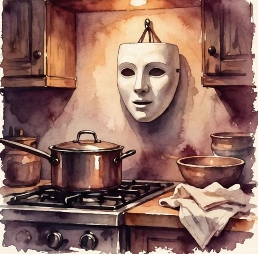
An old portrait in a heavy frame hangs above a mantel, a smaller, brighter one leaning beside it
One of the earliest masks in any wardrobe is not chosen at all; it is fitted. The face my parents needed was assembled in childhood out of available materials: the temperament that steadied the house, the achievements that made visitors nod, the feelings that learned — quietly, without anyone's cruelty — to wait in another room. Most adults in the register can identify this garment on sight. It is, by every account the estate holds, the hardest garment in the wardrobe to return, because its makers are beyond asking. Many are still wearing a tailored version of it at forty, at sixty, at the parents' graveside.
The estate is careful here, because the fitting is rarely a villain's work. Parents need things of their children the way weather needs things of a roof, and the child, who is a genius at weather, adjusts. The mask that results — the untroubled one, the impressive one, the one who never added a worry — is often built entirely of love and early intelligence. It is also, the register notes, the garment least likely ever to be questioned, because questioning it feels like ingratitude toward the hands that first tied its straps.
The entry ends in the hall's usual place: measurement, not accusation. The face the parents needed was a real service performed by a real child, and the adult who still wears it has committed no offence against anyone. The wardrobe merely keeps the garment labelled, so that its wearer can know — some ordinary evening, putting it on for a visit home — that it is a garment. What is done with labelled garments is the wearer's business. A label is a small thing — a word, a strap examined in daylight — but the register's whole authority rests on the belief that small true things outlast large comfortable ones. The register's business is the label.
63The Calm Parent Mask
The calm parent mask is issued, as far as the register can determine, at the hospital, along with the baby. Its expression is confidence. Its voice says that the rash is probably nothing, the fever will break, the first day of school is an adventure, the thunder is only the sky rearranging its furniture. The register cannot find the issuing office; the mask simply appears, the way courage and laundry appear. Behind the mask, a person who has been a parent for eleven days or eleven years performs an act of sustained translation: converting their own alarm into a dialect their children can grow up in.
The estate does not begrudge this garment a single strap. Children are entitled to borrow steadiness before they can manufacture it, and the calm mask is the lending library. It is also — the second column again — a solitary piece of equipment. Other shifts in the house are at least witnessed. This one is traditionally performed for an audience that is asleep, feverish, or both, and is reviewed by nobody. The parent at 3 a.m., mask in place, refreshing a search page with one hand and holding the household's courage with the other, is doing a shift that appears in no roster and ends at no hour anyone announces.
What the ledger honours most in this mask's files is its term of service. The calm parent mask is not expected to be retired in a ceremony; it is outgrown, gradually, from the other side, as the children begin lending steadiness back — a cup of tea made without asking, a voice kept level at the parent's own bad news. The mask's finest hour, the Keeper has written in the margin, is the hour it becomes unnecessary, and finds its wearer already practised at receiving what it spent decades giving.
64The Partner Who Has It Handled
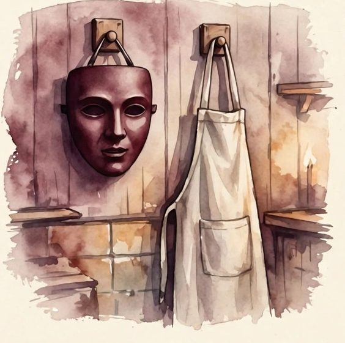
A mask rests on a workbench beside a household ledger, a lamp, and a ring of keys
Within a partnership there is a role so established that the wardrobe stocks its mask in pairs of sizes: the one who has it handled. The bills, the boiler, the insurance, the call that must be made to the difficult relative — the handled side of a shared life gathers, often imperceptibly, onto one set of shoulders, and the mask that goes with the territory is competence without visible cost. It answers I have seen to it with the calm of a frontier fort. It does not mention the night's arithmetic.
The estate records the arrangement's real benefits, because they are real. A household in which someone has it handled is a household at peace about a hundred small frontiers, and the other partner's ease is not stolen — it is provided, deliberately, as a form of love with a spreadsheet's face. The trouble in this file is never the handling. Two people can thus live in the same house for years, one of them considerably more tired than the other's peace would suggest. It is the clause, unwritten and eventually believed by both parties, that the handler is not a person to whom things also happen.
The mask's wearer, reading the register over the Keeper's shoulder, is entitled to the hall's standard measurement and nothing more dramatic: the difference between the partner who has it handled and the partner who is, on a given night, frightened and tired and handling it anyway. That difference is not a betrayal of the household. Inspections in this estate are not catastrophes; they are how the house learns where its weight actually travels, and the handler, of all people, usually knows the survey is overdue. It is information about its load-bearing wall — and load-bearing walls, in every well-kept estate, are exactly the ones somebody inspects.
65Being the Strong One at Home
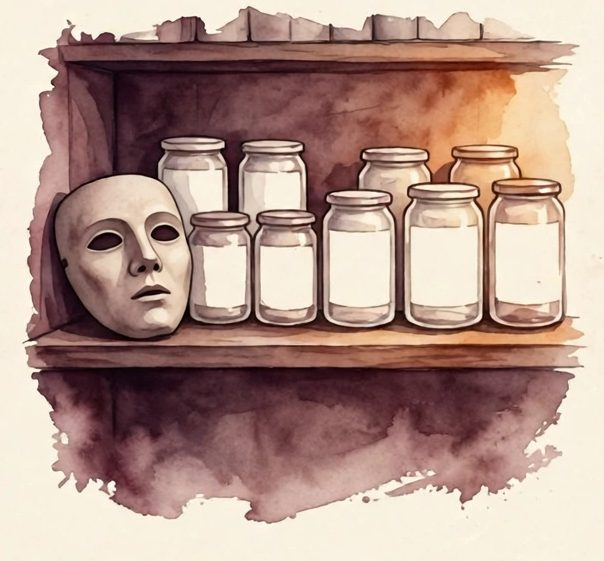
A broad beam runs across a kitchen ceiling, pots and pans hanging in a row beneath it
Every household in the register has a beam, and the beam, more often than not, is a person. Being the strong one at home is a position arrived at by degrees: a crisis weathered well, a steadiness noticed, a reputation installed like a fixture. Soon the household organizes itself around the beam without discussion. Bad news is brought to it. Wobbling is done elsewhere. The strong one's own weather is checked, if it is checked at all, the way one checks a load-bearing wall — by assuming it is fine. The assumption is entered in no ledger and questioned by no one.
The mask of the strong one differs from the brave mask of the earlier halls in one detail the Keeper insists on: address. The brave mask is worn for the world; this one is worn at the kitchen table, for the people whose opinion constitutes the wearer's whole climate. That raises both its value and its tariff. To be unstrong — briefly, ordinarily — in front of strangers costs little. To be unstrong in front of the household feels, to its beam, like a structural announcement. So the mask is worn at breakfast. It is worn at breakfast for years.
The ledger's entry is, as always, an act of counting rather than counsel. Beams in the estate's older houses have one thing in common: the household eventually learned the beam was wooden. Not in a collapse — in a conversation, an illness, a tired sentence that escaped. And the houses, to their credit, mostly did not fall. The Keeper underlines the creaking, because it appears in file after file: a house learning to stand differently makes that sound, and it is not the sound of falling. They redistributed, with some creaking, and stood differently ever after: less elegant, the Keeper writes, and considerably more true.
66The Mask That Protects the Children
Some masks in the love section are frankly shields, and this is the one nobody apologizes for. The mask that protects the children is the face that receives the world's worst materials — the letter, the diagnosis, the shouting from the street, the arithmetic of the rent — and converts them, before they cross the threshold, into something a child can be in the same room with. The estate has never issued this mask; it is always made at home, at night, out of whatever love was lying around. It is worn by parents, grandparents, elder siblings, and it is among the most honourable objects in the entire wardrobe.
Its work is translation under pressure. The mask does not tell the children that nothing is wrong; children, who are better instruments than any in the observatory, would register the lie at once. It tells them the truth at their size: something difficult is happening, the adults are attending to it, dinner is at six. The register respects this as one of the great uncelebrated crafts. The editing is done with the child's whole future in mind, which is what elevates it, in the register's judgment, from mere concealment to a branch of architecture. Whole childhoods that are remembered as safe were, on inspection, masterpieces of exactly this editing.
The cost column exists here too, though the hall keeps its voice down. The translator absorbs what the children are spared, and childhoods are long, and the absorbing is done in the years when the translator's own reserves are thinnest. The estate files no complaint on the mask's behalf — its wearers would sign again tomorrow, every one of them — but it keeps the measurements, because honour and cost are not opposites. Honour described once is praise; honour described with its cost is a monument, and monuments are what this section of the wardrobe is quietly building. They are, in this wardrobe, frequently the same garment described from two sides.
67Swallowing the Worry First
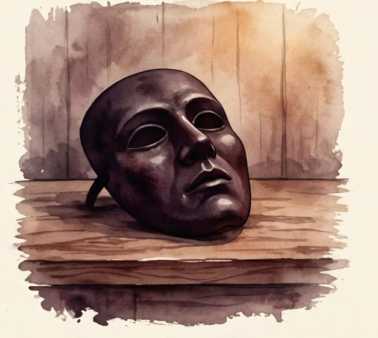
An empty bowl sits on a table set for two, a second bowl steaming gently beside it
The gesture is so small it escapes most ledgers, but this one records it: swallowing the worry first. Before the beloved hears the news, the wearer hears it, holds it, walks around the house with it, lets its sharpest hour pass in private — and only then brings it to the table, reduced to a size that can be shared over food. There is no audience for the first act at all — not even, in the usual sense, the wearer, who conducts it at the speed of instinct. The mask in this case is not an expression but a sequence: me first, the worry and I, alone together; then us, with the worry domesticated.
The estate understands the tenderness of the arrangement, because it is tenderness, in its least decorative form. The swallower is buying their beloved a few more hours of undamaged day, and paying for them out of their own. The transfer is recorded nowhere in the household's official history, because its success is measured precisely by how little the beloved ever notices of it. Files in this section include worries swallowed for a night, for a holiday, for the length of a pregnancy or an exam season — each one a small, deliberate transfer of dread from the person loved to the person loving, settled without witnesses.
The measurement column notes only what the swallowers themselves rarely compute: the body keeps the minutes. A worry swallowed first is not a worry dissolved; it is a worry consumed by one stomach instead of shared between two. The register takes no position on any single act of swallowing, which may be the kindest available move on the day. It merely keeps the running total where the wearer can find it — in pencil, in the back of the book, where the honest totals live. Totals, in this estate, have a way of being gentler than the fears that preceded them.
68The Gentlest Masks Are the Heaviest
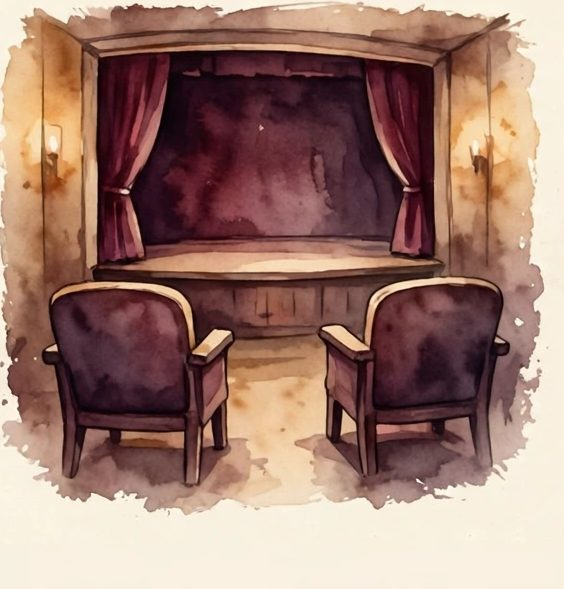
A mask of fine, delicate material rests on a velvet cushion, its straps thick with reinforcement
A paradox runs through the love section, and this room is where the Keeper states it outright: the gentlest masks are the heaviest. The masks of strangers are canvas; the masks of colleagues are wool; but the masks worn for the beloved are made of the finest, softest material in the wardrobe — and lined with everything the wearer has decided the beloved must never have to carry. Weight, in this collection, is not measured in the garment's fabric. It is measured in what has been sewn into the lining.
The sewing is done in moments no one sees. A fear is folded small and stitched in. A grief that would require comforting — and therefore require the beloved to do work — is quilted quietly into the hem. Over years the lining thickens, and because the outside of the mask remains gentle, pleasant, easy to be with, nobody, including its wearer, thinks to weigh it. It is picked up each morning with the ease of habit, and habit is the great concealor of weight in every department of the house.
The estate's scales come out only in rooms like this one, and they are offered without alarm. To learn that the gentlest mask is heavy is not an instruction to drop it in the hallway. It is the same service the register performs everywhere: a true weight, honestly marked, on an object its owner carries daily. Some wearers, on weighing it, change nothing but their rest. The weighing itself takes a minute, the Keeper notes, and it is not the minute that frightens anyone; it is the suspicion, arriving with the number, that the number has been true for years. The book records that as a perfectly respectable entry.
69Love Is Not the Audience
The theatre metaphor that governs so much of this hall fails at exactly one door, and the Keeper has marked the door in red. Love is not the audience. An audience is owed a performance; it has, in the old arrangement, paid for its seat and may fairly expect the show to be good. The beloved has bought no ticket. Whatever the beloved is — witness, accomplice, fellow tenant of the house — they did not contract for a production, and treating them as a house to be played to quietly changes the genre of the whole relationship.
The distinction matters practically, in the register's experience. Performances require intervals, dressing rooms, a dark side of the stage; a life played to one's own beloved keeps being interrupted by the beloved's inconvenient habit of wandering backstage. They find the props, the prompt book, the actor out of breath — and then there is a scene the production never rehearsed. The beloved, of course, has their own production running backstage — two theatres sharing one roof, each cast politely applauding the other's show. Files show this scene going two ways, but the better files share a detail: relief, arriving in the room like weather changing, disguised as shock.
The entry is not a campaign against the masks of love; the hall has spent twenty rooms honouring them. It is a surveyor's mark on the wall. The masks worn for love are garments, and garments are for wearing in company — but love, strictly defined in the estate's book, is the one company for which the face was originally designed. The face, examined in the register's oldest files, was designed for exactly one spectator, and the spectator was never meant to sit in the dark. A wardrobe that forgets that has its categories inverted, and inverted categories, like inverted maps, are usable only by experts in getting lost.
70What They Would Say If They Knew
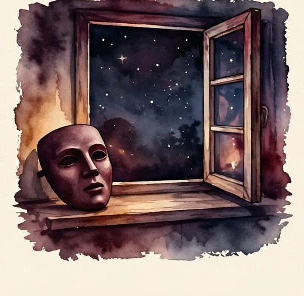
A letter lies open on a table, its envelope beside it, late light falling across the page
There is a sentence the register finds written, in one form or another, in the margins of nearly every file in the love section: if they knew, they would — and then the sentence completes itself according to the wearer's private forecast. They would worry. They would leave. They would think less of me. They would try to fix it, and break it, and blame themselves. On the strength of this forecast, whole wings of the inner house remain unvisited by the people who live, nominally, in all of it.
The Keeper, who is no romantic, notes the forecast's one methodological flaw: it is almost never tested. It is a weather prediction made indoors, sometimes decades in a row, by an expert who has every incentive to predict rain. And the files — the few, treasured files where the sentence was risked and the knowledge actually shared — show forecasts failing in both directions, but failing kindly more often than the margins predicted. The beloved, informed at last, frequently says the one sentence the forecast never included: I wondered when you would tell me.
This room issues no encouragement and no pressure; other people's houses are not the register's to redecorate. It only places the marginal sentence under a lamp. A forecast that governs a life deserves, at minimum, to be recognized as a forecast — an act of imagination performed by a frightened forecaster — and not confused, as it so often is, with a fact about the beloved. The register has a form for consulting the beloved, incidentally. It is very short, and most of this hall consists of reasons it stays in the drawer. The beloved, untested, remains the only unconsulted expert in the whole proceeding.
71Letting Love See the Face
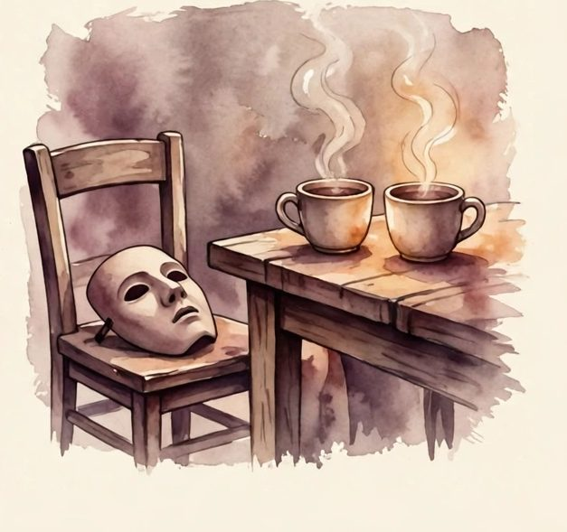
A mask rests on a chair in a doorway, the room beyond it warm with lamplight
In a small number of files — the register keeps them without special binding, which its readers learn to recognize as the highest honour — a mask worn for love is set down in love's presence. The scene is never dramatic. It tends to happen in kitchens, in cars, on ordinary walks, when the wearer says the unsmoothed sentence, the unedited fact, and waits. Letting love see the face is recorded here not as a technique but as an event: rare, unreproducible on demand, and disproportionately remembered by everyone present.
What the files consistently deny is the fear that preceded the event. The face, shown, does not end the story; the beloved, seeing it, does not generally do any of the things the forecast in the previous room predicted. The commonest recorded response is not an emotion but a rearrangement — as if a room long used for storage were suddenly entered by its actual owners, who begin, matter-of-factly, to use it. The Keeper, entering the outcome, permits the pen one small flourish, and then thinks better of it. The wearer's astonishment is also recorded, and the Keeper has stopped pretending not to enjoy entering it.
The room closes with the wardrobe's most restrained observation. The mask was built, stitch by stitch, to protect the love; the event suggests, in file after file, that the love was sturdier than its protection. This is not entered as a lesson, because lessons are not this hall's business. It is entered as a measurement, freely available to any wearer who passes this way: the difference between who they are and who they pretend to be turned out, in the tested cases, to be smaller than the difference they feared.
72The Mask Love Never Asked For
The love section closes with its most quietly startling file: the mask love never asked for. It was made speculatively, over years, to specifications the beloved never issued — be untroubled, be impressive, be easy, need nothing, handle everything — and it is maintained at full polish by a wearer who would be wounded to learn how little of it was ever required. The beloved, consulted in the estate's imagination, keeps saying the same bewildered thing: I thought we were past pretending. It is also, invariably, the best-maintained garment in the wardrobe, because neglect would be noticed — by the wearer, who checks it nightly against a standard nobody set. I was past it years ago.
The register traces the mask's origin without finding a culprit. It was not ordered by the beloved; it was not exactly chosen by the wearer; it accreted, the way most permanent arrangements do, out of a season's necessity that outlived the season. A hard year required a brave face, the brave face worked, and the household — rationally, gratefully — built its routines around the face it was shown. Scaffolding, the register notes, is always erected for a reason; the file's sadness, such as it is, lies only in how long the building has been finished. Decades later the face is load-bearing, and nobody alive remembers that it was scaffolding.
The Keeper's final entry in this section is the gentlest in the book. Scaffolding is not condemned for remaining after the building is finished; it is simply no longer holding anything up, and may be taken down at whatever pace the weather allows. If the mask love never asked for is yours, the register does not ask you to remove it this evening. It asks only that the label be accurate, the next time you pass the wardrobe: made for love, it can say. Never ordered. Kept, so far, by me.
73The Cost of the Difference
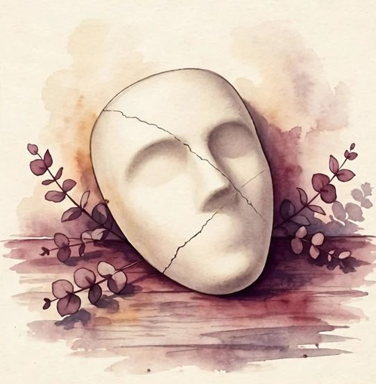
A ledger lies open on the Mask Desk, two columns ruled in pencil, a lamp burning above it
Hall VII opens the accounts. The difference between who a person is and who they pretend to be is not, in the estate's bookkeeping, a moral quantity. It is a running expense. It is paid daily, in advance, whether or not the day uses the performance, the way a shop pays rent on premises it may or may not open. This room exists to put the rent on paper — not to close the shop, not to shame the tenant, but because the register has never yet met a wearer who had seen their own total written down.
The charges are various and mostly unglamorous. There is the labour of maintenance: the performance must be rehearsed in mirrors, remembered across years, kept consistent under surprise. There is the cost of translation: every genuine feeling must be converted, in real time, into the currency the mask trades in. Interest is the column no wearer remembers agreeing to, and the one every wearer, shown the ledger, recognizes first. There is interest, which the register charges without cruelty: the longer the difference runs unexamined, the more of the wearer's life is arranged around it, until holidays, friendships, and finally ambitions are all selected for compatibility with the mask.
Against these, honestly entered, stand the receipts of the previous halls: doors opened, households steadied, children protected, evenings saved. The cost of the difference is not a fraud's bill; it is a working garment's upkeep, and some wearers, shown the total, pay it gladly and in full knowledge. The register's only quarrel is with the bills that were never sent. A cost known is a decision. The register therefore sends its bills, in this hall, with a certain ceremony — not as demands, but as the first honest post some citizens have received in years. A cost unknown is merely a deduction, forever, from an account no one audits.
74The Tiredness of Performing
A mask hangs on the inside of a door, a chair pulled close beneath it, shoes set neatly below
Ask the register where the difference is paid most heavily and it will not point to the heart. It will point to the reserves. The tiredness of performing is a specific exhaustion that its wearer recognizes on sight — not the tiredness of work, which sleep repairs, but the tiredness of continuity: of holding a character through breakfast, negotiation, traffic, love, and grief, in all weathers, without an interval. Actors are given evenings off by law and custom. The performer of the self is given none, and frequently does not think to request them.
The files show the tiredness arriving in disguise. It is recorded as irritability at small sounds, as Sundays that restore nothing, as the strange flatness of holidays on which the performance — because the audience travelled too — cannot be struck. The wearer often audits everything else first: health, workload, age. The body, unlike the wardrobe, keeps no rota and signs no contracts; it simply files its notices in the only department that cannot be understaffed. The mask is audited last, if at all, because from inside a performance, the performance feels like the face, and nobody thinks to rest their face.
The hall offers no remedy, by its standing rule; it offers the measurement and the metaphor that goes with it. Even the strongest beam in the house, the Keeper writes, is rested during repairs — not because it has failed, but because it is intended to last. The tiredness of performing is not a breakdown. A maintenance notice is not an ending; it is how everything intended to last announces that it intends to. It is a maintenance notice, printed in the wearer's own body, in a language the register has learned to read fluently: the language of a garment asking, at last, to be taken off somewhere.
75The Leak in the Mask
No mask in the wardrobe is perfectly sealed, and the register, which has inspected thousands, regards this as a feature of the material rather than a defect of the wearer. The leak in the mask is the moment the difference shows: the expression that crosses the face a half-second before the official one arrives, the voice that changes key on a single word, the joke made a fraction too truthfully. Leaks occur at seams — the joins between the person and the part — and seams, by definition, are where two true things meet.
The estate's files on leaks are surprisingly tender. Again and again, the leak is recorded as the most honest communication in a relationship's whole archive — the crack through which the beloved, the friend, the colleague finally saw something real and, more often than the wearer feared, leaned toward it rather than away. Audiences forgive leaks instinctively, because everyone in the audience is managing seams of their own. The perfectly sealed performer inspires admiration. The register prizes these files partly because they cannot be manufactured: nobody has ever leaked on purpose convincingly enough to fool the Keeper. The leaking one inspires recognition, which is applause's warmer relative.
The measurement this room leaves behind is small and portable. A mask that leaks is not failing; it is reporting. The water, in the best of these files, turns out to have been trying to get in from the inside. It reports where the difference is under most pressure, which is to say where the truth is nearest the surface — and the register has noticed that the wearers who fare best are not those with the finest masks but those who have learned to read their own leaks the way sailors read a hull: not with shame, but with attention to where the water wants in.
The Mask Desk
One desk receives all correspondence for this wardrobe — questions, corrections, greetings, and word of masks you are thinking of retiring. It is read in the order it arrives.
76Applause for the Wrong Portrait
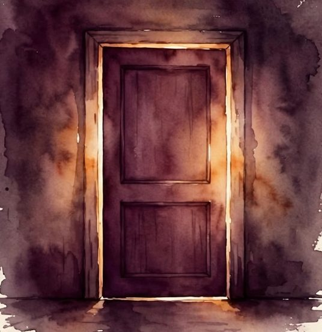
A gilt-framed portrait hangs in a bright hall while a smaller, unframed canvas waits in its shadow
There is a particular loneliness the register reserves a whole room for, and it arrives dressed as success. Applause for the wrong portrait is the experience of being praised, promoted, loved, and celebrated — for the mask. The reviews are excellent. The career advances. The portrait in the gilt frame is widely considered the person's masterpiece, and the person, standing beside it at the exhibition of their own life, accepts the congratulations with a sensation the ledger records in one dry word: misdelivery. The honours were addressed correctly. They were simply meant, everyone agrees, for somebody slightly else.
The cruelty of the arrangement is its airtightness. To correct the record would be to spoil a celebration, endanger a livelihood, disappoint a roomful of people whose affection is genuine and merely aimed at the portrait. So the wearer applauds along, maintains the portrait, commissions touch-ups. The applause, meanwhile, only gets louder. The estate notes that this is the one cost in the hall that compounds like interest in reverse: every fresh honour increases the distance the truth would have to travel, and decreases the wearer's belief that it could ever arrive.
Yet the room is not hopeless, and the Keeper insists the record show it. Portraits, unlike faces, can be repainted gradually — a truer colour introduced here, an honest shadow allowed there — and audiences, given time, adjust to the revised canvas with a loyalty that surprises every painter who has attempted it. The register keeps several such revisions in progress, in pencil. None of their authors has yet reported the catastrophe the first brushstroke feared. One revision has been running, at the time of this entry, for eleven years, and its audience has yet to notice anything but that the portrait seems kinder. The wrong portrait is a beginning of the file, not its end.
77Forgetting Which Face Is On
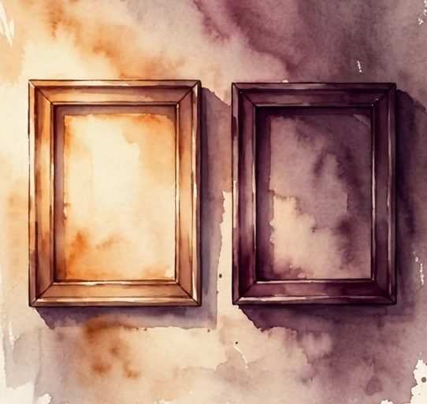
Two masks rest tangled together on a dressing table, their straps knotted into one another
The wardrobe's keepers are trained to recognize one particular pause, and it happens at mirrors. A citizen arrives, mid-day or mid-sentence, suddenly uncertain which face is currently on — whether the room they are in is being given the person or the performance, and whether the two can still be told apart on short notice. Forgetting which face is on is not madness, and the register forbids the word. It is the predictable result of a rotation run too long without a roster: any staff worked without relief will eventually lose track of the shifts.
The moment itself is usually small — a laugh whose volume is wrong for the company, a confidence begun in the wrong room, an instant of vertigo at one's own reflection in a shop window. Its information, though, is large. It means the masks have become quicker than the wearer: the wardrobe is dressing the person rather than the other way round. The estate files this under governance, not character. No garment in the collection was designed to be self-applying, and when the collection begins to run itself, the finding is about staffing, not about souls.
The book's note in the margin of this file is the plainest in the hall. The face underneath has not gone anywhere; it is simply out of practice, the way a language rusts. Wearers who go looking for it report the same odd relief as travellers returning to a mother tongue — the words come slowly, then all at once, and with an accent of unmistakable home. The register does not prescribe the visit. It records, for whoever needs it, that the country is still there and the border is unguarded.
78The Audience That Must Never See
Behind every long-running performance in the register there is, on inspection, one seat that is always occupied in the imagination: the audience that must never see. Each wearer keeps a private list, usually of one — a parent, a rival, a former self, a person long dead whose standards still review the show nightly. The masks catalogued in this hall were all, in some measure, tailored for that seat. The performance is not really given for the room. It is given against the day that particular spectator finally walks in.
The arrangement's cost is peculiar and total. Because the dreaded audience never actually attends — being dead, distant, or entirely imaginary — the performance can never receive its verdict and can therefore never close. The wearer plays a premiere every night to an empty chair, and adjusts the production, season after season, to reviews that exist nowhere but in anticipation. The register counts this among the most expensive items in the hall: not the mask itself, but the indefinite run purchased to satisfy a spectator who will never take their seat.
The Keeper's note is written in the driest hand in the book. In all the estate's files, the feared spectator, on the rare occasions they did see the face unmasked — by accident, by leak, by the wearer's plain exhaustion — has yet to deliver the prophesied review. The seat, examined closely, usually turns out to have been empty for years, and the theatre playing to it out of nothing but momentum. Momentum, the register concludes, is a terrible artistic director. The wearers, reading the entry over the Keeper's shoulder, tend to laugh at this point — the first unadministered sound in the file. It never cancels a show.
79Loneliness in a Crowd of Admirers
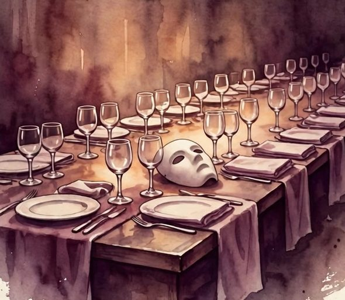
A mask rests on a table amid party debris, paper crowns and empty glasses arranged around it
It is possible — the register has the files, and they are not rare — to be lonely at the centre of admiration, the way it is possible to be thirsty at sea. Loneliness in a crowd of admirers is not a complaint about the admirers, whose affection is frequently sincere and always, in its way, nourishing. It is a measurement of address. The admiration arrives, warm and plentiful, at the mask's residence. The face, which keeps a quieter address in the same building, receives the noise through the wall and none of the visitors at the door.
The wearer in these files is often the most socially successful person in their circle, which is precisely what makes the condition so hard to file a report about. To be lonely while beloved sounds like ingratitude, and the wearer knows it, and so the loneliness joins the long list of things the mask was invented to carry unmentioned. The register's bookkeeping is unmoved by the embarrassment. A feeling does not need to be reasonable to be entered in the ledger. It needs only to be true, and recurring, and paid for.
The room's curtain line is gentle, as this hall's tend to be. The crowd is not the problem, and the mask is not the villain; the difficulty is a routing error, decades old, in which everything addressed to the person is delivered to the portrait. Routing errors, in the estate's long experience, are not corrected by louder performances for the same address. They are corrected — slowly, partially, in pencil — when something true is occasionally mailed to the right one. The register keeps the post office open at all hours mentioned in this hall. The post, the Keeper notes, is still running.
80The Mask That Won't Come Off
A mask hangs against the wardrobe door itself, its straps settled deep into the wood over long years
The hall of costs closes with the wardrobe's most sobering exhibit: the mask that won't come off. It is not the most dramatic object in the collection — it does not announce itself — but every keeper learns to check for it. The mask in question was worn so long, through so many seasons, that its straps have done what straps do when never loosened: they have settled into the wearer's life like roots into a wall. The wearer no longer experiences it as a garment. They experience it as the shape of their own face, and they defend it accordingly.
The register's tone in this file is deliberately unalarmed, because alarm is the one instrument that has never loosened a strap. What the files show is slower and more hopeful than the exhibit's appearance suggests: straps grown in over decades come away, when they come away, over seasons — a loosening here after a retirement, a loosening there after a grief made pretending finally pointless, a whole strap surrendered in the company of someone who had seen the face before the mask and said so. None of it is surgery. All of it is weather.
And the hall's last word on cost returns, fittingly, to its doctrine. A mask that won't come off is not a person found out, exposed, or cured; it is a garment whose wearer has forgotten it is one — and forgetting, in this estate, is treated as the most curable condition in the book. The label is all the register ever supplies. But citizens have walked out of this room reading the label on a mask they had worn for forty years, and the Keepers, who pretend to notice nothing, have quietly entered the date.
81Envy of the Unmasked
Everyone has stood in a doorway, mask fitted and humming, watching somebody across the room who seems to wear nothing at all. They laugh at full volume. They say the plain thing at the plain moment. Their face appears to be the only garment they own, and the Keeper records the feeling that rises in the watcher with professional neutrality: envy, itemized and admitted. It is one of the most honest entries in the register, because it confesses what the whole wardrobe is for. The envy is not of the person's beauty or ease. It is of their apparent rent — the low cost of being them.
The desk, however, keeps a caution pinned beside that entry. The unmasked look is also a garment, in many houses the most carefully tailored one of all. Some faces that seem bare are masks that have been worn so long the straps have grown invisible, even to the wearer. The Keeper does not say this to sour the envy. He says it because comparing your backstage to another person's portrait gallery is an accounting error, and the register exists to prevent accounting errors. You have seen their display wall. You have not seen their fitting room, their seamstress bills, their three in the morning.
Envy, read correctly, is not a verdict but a direction. It points, with embarrassing accuracy, at the specific rest you are hungry for: not their life, but one hour in which your own face is off duty. That is a smaller and more obtainable thing than the envy first suggested, and the wardrobe can supply it without any theft from the neighbor's wall. So the entry closes kindly. Envy the unmasked if you must — then let the envy do its one useful job, which is to tell you where your own mask sits tightest, and loosen exactly there. The portrait behind the portrait is not a lie. It is simply the one that was not invited to the party.
82The Price, Itemized Honestly
An invoice lies open on the desk, every line filled in by candlelight
The wardrobe keeps its accounts in the open, because a price you refuse to read is a price you pay twice. So here is the bill for a well-worn mask, itemized honestly. First line: energy, the steady draw of running a second face alongside the first — the monitoring, the adjusting, the small constant arithmetic of how this is landing. Second line: memory, for the mask requires its wearer to track which version of events was issued to which audience. Third line: spontaneity, taxed at the door. The register lists them without drama. Every garment in the house costs something to wear.
The fourth line is the one people skip, and it is the largest: the slow tax on being known. A mask that works perfectly protects its wearer from disapproval and, by the same mechanism, from recognition. Applause arrives addressed to the portrait. Sympathy arrives addressed to the portrait. Even love, arriving faithfully, knocks at the portrait's door, and the person behind the canvas receives it the way one receives weather reports from a country one no longer lives in. The Keeper does not call this a tragedy. He calls it a cost, and insists it be printed on the same page as the benefits.
None of this is an argument for burning the wardrobe, and the desk will not entertain that motion. A price is not a scandal; it is information for a fair negotiation with oneself. Some masks are worth every line of their invoice — the surgeon's calm, the teacher's patience, the dignity kept intact through a degrading season. The dishonesty the house forbids is only the pretense that the bill is zero. Read the whole invoice once a year, the register advises, in good light, and decide like an adult what you are paying for. An honest price, paid knowingly, is simply rent. An unexamined one is a leak. The ledger does not judge the purchases. It only refuses to let them be made in the dark.
83What the Difference Buys
A market stall at dawn displays ribbons, bread, and one plain wooden key
If the difference between the face and the mask is a cost, the house is obliged to ask what the cost purchases, and the answer is not nothing. The difference buys passage. It buys the job interview survived, the difficult relative greeted without incident, the bad news delivered in a voice that does not frighten the room. It buys the first ten minutes of almost every human arrangement, during which two strangers, each in a presentable garment, decide whether it is safe to proceed. Civilization, the Keeper notes, is largely a wardrobe agreement: we meet in costume so that we may, eventually, dare to meet without it.
The difference also buys protection of the genuine article. A face shown to everyone, everywhere, at full strength, would not stay a face for long — it would become a public square, weathered by every passerby's opinion. The mask is the fence around the garden, and some of what grows behind it grows precisely because it is not on display. Privacy is not the enemy of honesty in this house; it is honesty's nursery. Much of what the register calls the true portrait was painted in the years when a good mask stood at the door turning away the traffic.
And the difference buys mercy, which the ledger counts as a first-class purchase. The mask of cheerfulness worn to a sickbed, the mask of calm worn into a frightened child's room, the mask of interest worn through a lonely man's long story — these are not frauds. They are gifts purchased with the currency of one's own unshown feelings, and the recipients are not deceived in any way that matters. So the accounts balance more kindly than the cynics expect. The difference costs, yes. But it buys passage, protection, and mercy — and a house that knows its purchases has no reason for shame. What the difference buys is time — time for the face to become ready, at its own pace, in its own season.
84A Fair Price and an Unfair One
Not every mask charges fairly, and the desk maintains a small bureau for complaints. A fair price is the one agreed in daylight: this much performance for this much passage, the terms understood, the garment returned to its hook at the end of the day. The nurse's professional warmth, the shopkeeper's patience, the diplomat's courtesy — these are honest contracts. The wearer knows the rate, knows the hours, and knows the way home to their own face. The register stamps such arrangements without hesitation: fair, and renewable at the wearer's pleasure.
An unfair price announces itself by different symptoms. The mask that must be worn at home, at table, in bed, has stopped charging by the hour and begun charging by the soul. The garment that cannot be loosened even among the safe, that penalizes its wearer for every unscripted feeling, that demands not performance but disappearance — this is no longer a wardrobe item. It is a landlord. The Keeper's test is simple and he applies it without cruelty: a fair mask serves a face. An unfair one replaces it, and bills the original for the lodging.
The remedy in this house is never a bonfire, whatever the pamphlets say. It is renegotiation, conducted strap by strap. Shorter hours for the garment. One room in the house where it does not enter. One person before whom it stays on its hook. Prices in the wardrobe are not laws of nature; they were set by habit, by fear, by old emergencies long since past, and they can be re-set by the same authority that agreed to them — the wearer, in better light, with the register open. The desk has witnessed many such renegotiations. Not one began with self-hatred. All of them began with arithmetic. A price can be renegotiated by the person who pays it. That is the whole of the law in this department.
85Where the Mask Ends
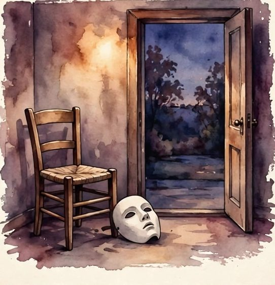
A mask rests on the dressing table, its ribbons trailing past the edge
Every mask, examined closely, has a border: a place where the garment stops and the wearer begins. The Keeper suggests that finding this border is among the most useful surveys a person can commission. For some, the mask ends at the voice — the opinions are performed, but the laugh is their own, unmistakable and unrehearsed. For others it ends at the hands, which go on doing honest work while the face conducts its diplomacy. The border is rarely where vanity would place it. It runs through unexpected provinces: a temper that never learned to act, a tenderness that declines all costume.
Knowing the border matters because it tells you where you already live unmasked, whether you noticed or not. The register is full of citizens who believed themselves false through and through, until the survey showed them whole districts of the self that had never once worn a costume: the way they are with animals, with weather, with a difficult task done properly in an empty room. The mask ends somewhere in everyone. East of that line, no performance has ever been required. It is native country, and it is usually larger than the exile reports claimed.
There is also this comfort in the geography: a border can be visited. Standing precisely where the mask ends — in the activity, the place, the company where the garment thins to nothing — a person can feel both portraits at once, and discover that the difference, at that spot, is no wider than a ribbon. The house does not promise that the whole frontier is so narrow. It promises that the survey is worth making, because a citizen who knows where their mask ends has already stopped being its prisoner. They have become its cartographer instead. The mask ends. That is the good news the survey always brings home: it ends, and someone is standing there.
86The Hour After the Guests Leave
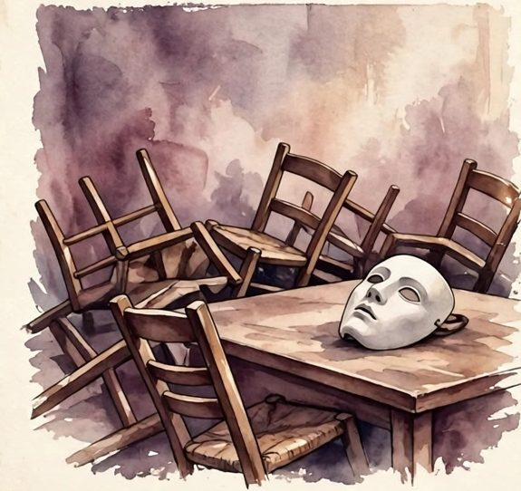
Chairs stand pushed back in the quiet hall, glasses empty, candles low
There is an hour the wardrobe knows well, though it appears on no invitation: the hour after the guests leave. The door closes. The shoes come off in the hall. The performed voice, still warm from use, is set down like a coat over a chair, and the house exhales in a register no visitor ever hears. The Keeper considers this hour one of the truest in the day — not because the evening was false, but because the relief is real, and relief is a form of testimony. What the body does when the audience departs is the body's own review of the performance.
The register advises citizens to attend to this hour rather than rush past it into the next screen, the next task, the next costume change. The first minutes after company are diagnostic gold. Is the tiredness clean, the pleasant fatigue of a garment worn well and gladly? Or is it the grey depletion of a face that spent the evening in hiding while its substitute took the compliments? The two tirednesses feel different in the shoulders, and a person who learns to distinguish them owns an instrument more honest than most mirrors.
Over seasons, the hour after guests becomes a quiet referendum on one's arrangements. Evenings that end in clean tiredness get repeated; the calendar fills with the company before whom the mask is thin, or unnecessary, or worn purely as decoration, the way one wears a good jacket. Evenings that end in the grey kind grow rarer, not by dramatic renunciation but by the slow arithmetic of a person who has started reading their own reviews. The house approves this method entirely. No announcements are required. The guests simply, gradually, become the right guests. When the door closes and the shoes come off, listen. That sigh is the most honest critic the performance will ever have.
87Alone Is Not the Same as Unmasked
A common error in the wardrobe's records must be corrected gently: solitude is not the same thing as honesty. A person can be alone for a week and perform every hour of it — rehearsing conversations, posing for an absent audience, wearing the mask in the mirror out of nothing but long habit. The garment does not require spectators. Given enough seasons, it requires only a wearer, and will happily conduct its theatre in an empty house, reviewing old performances, auditioning new ones, keeping the face in training for a public that may never return.
The distinction matters because it protects citizens from a useless disappointment: the retreat that changed nothing, the holiday alone that somehow felt as staged as the office. The problem was never the presence of others. The mask's audience, in its mature form, is internal — an imagined gallery carried in the head, applauding and frowning on schedule. The Keeper has great sympathy for this gallery; everyone has one; it was installed early and by loving hands, mostly. But it should be recognized as furniture, not as fate. Furniture can be moved. Fate, by definition, cannot — and this is not fate.
The good news follows immediately, and the register underlines it: the converse is also true. If aloneness does not guarantee the unmasked state, then company does not forbid it. The face comes off not when the room empties but when the performance stops — and the performance can stop anywhere: at a crowded table, in one honest sentence; on a busy street, in the decision not to arrange one's expression for the passersby. The unmasked state is portable. It travels better than solitude does, and it is available on ordinary Tuesdays, which is where most of a life is actually lived. The audience that matters most is the one in the head, and it, too, can be thanked and sent home for the evening.
88The Friends Before Whom
Two chairs drawn close by the fire, two masks resting forgotten on the sideboard
Every register has a page the Keeper reads with undisguised pleasure: the list, kept by each citizen, of the friends before whom the mask is simply not required. Not discussed, not ceremonially removed — not required, the way a hat is not required among family. In their company the face runs at its own temperature. Silences are allowed to be silences. The unfinished sentence is permitted to stay unfinished, and the unflattering feeling is admitted at the door like an old dog, without apology or costume. These friends are the wardrobe's proof that the unmasked state is not a theory. It has addresses.
The desk notes what such friends have in common, and it is not that they demand honesty — demand is only the mask's other master. They make honesty cheap. Their own faces are visibly in use; their laughter has no varnish; they receive a confession the way one receives weather, as information about the day. Before such people the performance simply stops occurring to anyone, the way one stops holding in one's stomach in an empty room. The Keeper considers the cultivation of even one such friendship worth more than a decade of solitary self-improvement.
And there is a practice hidden in this hall, small enough to fit in a pocket: become, deliberately, the friend before whom. The register has studied the technique and found it consists mostly of not flinching — receiving another person's unmasked sentence without rushing to fix it, judge it, or top it. Whoever does this reliably becomes a room in other people's houses where the mask comes off. It is among the highest offices the estate confers, and it requires no talent whatsoever — only the discipline of staying seated, face on, while someone else sets theirs down. A friend before whom the mask is unnecessary is a room with the door open. Every estate is measured by how many it has.
89The Dog Is Not Fooled
A dog sleeps across the threshold, indifferent to the portrait hung above it
The wardrobe's records include one witness whose testimony has never once been impeached: the dog. The dog is not fooled. It does not greet the portrait; it greets the person, through whatever costume the day has issued, with an accuracy no mirror has matched. Arrive home decorated with honors and the dog requests dinner. Arrive home in disgrace and the dog requests dinner, with identical faith. The register keeps this witness on retainer because every citizen needs at least one relationship in which the performed self is simply not legal tender.
Cats, the Keeper concedes, provide a sterner version of the same service, and small children a more alarming one — children being famous for addressing remarks to the face behind the mask with no regard for the occasion. But the dog remains the department's favorite, because the dog's indifference is not judgment. The dog does not prefer the true portrait and despise the performed one. The dog declines the entire distinction, having located the person by a sense older than portraiture, and loves that. There are days when this is the most theological fact available in the house.
What the citizen is meant to do with this testimony is not to abandon the wardrobe but to keep one channel of life where the dog's standard applies. Some keep it in a garden, some in a workshop, some in the company catalogued in the previous room. The location matters less than the existence of the channel: a place in the week where one is greeted as the dog greets — beneath the costume, without negotiation. A person entirely without such a channel is overexposed to their own performance. A person with one has a witness, and witnesses keep us honest more kindly than mirrors do. The dog is not fooled, and the dog does not mind. Between those two facts lies most of what the face needs to hear.
90Three in the Morning, No Costume
The wardrobe's least guarded hour arrives, for most citizens, around three in the morning. The audience is asleep. The internal gallery has gone home. The mask, which requires at least the rumor of a spectator, hangs slack on its strap, and the thoughts that present themselves at that hour wear no costume at all. The Keeper treats these nocturnal audiences seriously — not because the three a.m. mind is wiser, which it plainly is not, but because it is unedited, and an unedited draft is valuable evidence about what the performed day has been carefully not saying.
The register's guidance for the hour is modest and practical. Do not sign anything at three in the morning: no resignations, no confessions, no final judgments on the marriage, the career, or the worth of the enterprise. The unmasked mind at that hour has perfect honesty and no proportion whatsoever; it will tell you the truth about one thing and imply, falsely, that it is the truth about everything. The desk's standing instruction is to take notes like a clerk, not orders like a soldier. Write down what the night said. File it. Let the morning, which owns a mask of its own and better lighting, cross-examine it.
Handled this way, the hour becomes an asset rather than a haunting. Many citizens report that the costume-free thoughts of the night, reviewed kindly at breakfast, resolve into a short and manageable list: one fear needing facts, one grief needing company, one sentence needing to be said aloud to a particular person. The night dramatizes; the morning itemizes. And the mask, rehung by daylight, goes back on a face that has at least consulted the night shift. That, the Keeper maintains, is most of what integration means at this latitude — not living at three in the morning, but not barring its testimony either. The night shift tells the truth without proportion. Take its notes, keep its counsel, and let the morning set the sentence.
The Mask Desk
One desk receives all correspondence for this wardrobe — questions, corrections, greetings, and word of masks you are thinking of retiring. It is read in the order it arrives.
91The Mirror Without an Audience
A tall mirror stands in an empty corridor, reflecting only the window's light
The dressing-room mirror is the wardrobe's most compromised witness, because it has almost always been used with an audience in mind. A citizen consults it the way a barrister consults a brief: how will this read out there? The expression is arranged, tested, approved — and the face that leaves the house has already survived its first performance before breakfast. The Keeper does not mock this ritual; empires run on it. He merely points out that the mirror is capable of a second use, rarer and more valuable, for which it was arguably made.
The second use is to look without arranging. Stand before the glass as one stands before a landscape — not to improve it, only to see what weather is on it today. This is harder than it sounds. The face, feeling itself observed, begins at once to compose itself, the way a class composes itself when the inspector enters. The practice is to wait it out. After a minute the performance, finding no purchaser, slackens. What remains is the face between expressions, the one the dog knows, and it is almost never as bad as its press. Usually it is only tired, which is information, not disgrace.
Citizens who take up this practice report the same discovery, and the register records it verbatim: the unarranged face is not a worse face. It is an older acquaintance. It has the look of someone who was present for the whole life, including the parts the portraits omit, and there is a dignity in it that no arrangement has yet improved. The mirror without an audience turns out to be the only mirror that flatters honestly — by reporting that the raw material was never the problem. The problem, when there is one, is the costume department's opinion of it. Look long enough, without directing the scene, and the face stops auditioning. What looks back is not a stranger. It is the management.
92Places That Don't Require a Face
A garden path bends between hedges where no window overlooks it
Every estate should keep, and most quietly do, a list of places where no face is required. The garden at dawn, before the house wakes. The workshop, where the work examines the hands and ignores the expression entirely. The road at walking pace, where one is a traveler among travelers, interesting to no one, blessedly. The register calls these the faceless places, and notes that their value has nothing to do with hiding. A face is not required there the way a ticket is not required in one's own house. It is not that the citizen is concealed. It is that the question is not being asked.
The distinction between hiding and not-being-asked is one the house defends with some energy, because shame lives in the confusion between them. The person in the garden is not in disguise; the garden simply has no use for the information a face provides. The fish do not require it of the fisherman, the rows do not require it of the gardener, the road does not require it of the walker. In such places the performed self can stand down without ceremony, and the citizen discovers — often with surprise at the depth of the breath that follows — how much of the day is spent answering a question nobody in the garden ever asks.
The desk's practical counsel is to keep at least one such place in regular use, and to defend its hours the way one defends sleep. Not as a refuge from a life one cannot face, but as a maintenance bay for the face itself, which was not built for continuous display. Even portraits are taken down and rested from the light. A citizen who spends the whole of life in rooms where a face is required will eventually present, everywhere, the expression of a person answering questions. The garden asks none. That is its whole curriculum, and it is enough. A place that asks nothing of your face gives it back to you. Keep one, and visit it like a relative who never telephones first.
93The Skill of Taking It Off
Removing a mask sounds like the simplest act in the wardrobe, and is in fact a skill, with technique, like any other. The unpracticed attempt usually goes wrong in one of two directions. Some citizens rip the garment off in a gust of resolve — total honesty, everywhere, immediately — and discover that a face unused to weather sunburns quickly; the experiment ends in rawness, retreat, and a mask refitted tighter than before. Others wait for a feeling of complete readiness that the register has no record of ever arriving. Between the bonfire and the postponement lies the actual craft.
The craft, as the Keeper teaches it, is graduated. The mask comes off first where the stakes are smallest and the welcome warmest — the rooms catalogued earlier in this hall: the friend's kitchen, the garden, the dog's jurisdiction. It comes off for measured periods, the way a diver surfaces by stages. And it comes off, crucially, without announcement. A removal performed as an event becomes another performance, complete with audience and reviews. The quiet kind — one honest sentence at an ordinary dinner, unflagged and uncelebrated — is the kind that holds, because nothing about it needs to be sustained except the sentence.
With practice the skill shows the usual mercy of skills: what began as an operation becomes a gesture. Citizens of long standing report that the taking-off grows as unremarkable as unbuttoning a coat on entering a warm house — the garment is neither cursed nor worshipped, just hung up, by a hand that knows the hook's location in the dark. That is the wardrobe's working definition of freedom, and it is deliberately unglamorous. Not the absence of masks. The ease of the hand on the strap, and the knowledge of the hook, and a house where both portraits are expected at dinner. Hang it up the way you hang up a coat — without ceremony, without hatred, and in a place where you can find it in the morning.
94Resting the Face
A portrait leans face-to-the-wall in a quiet room, resting from the light
Portrait conservators will tell you that light itself is a slow injury: a painting hung in permanent display fades by degrees, and the great houses rotate their canvases, resting them in the dark for seasons so that the colors may survive the century. The wardrobe applies the same housekeeping to the face. A face in continuous display — at work, at home, on the small glowing stage in the pocket — is being spent, however noble the cause. Rest is not the reward for the performed life. It is part of the conservation budget, and the Keeper enters it in the ledger without apology.
Resting the face is a specific discipline, distinct from sleep and from entertainment, both of which have their own performances. It means intervals in which the expression is genuinely off duty — not composed for a companion, not arranged for a screen, not even arranged for the internal gallery. The citizens who do this well guard unremarkable things: a walk without the telephone, a meal eaten without witnessing oneself eat it, an hour of manual work in which the face is nobody's business, including, as far as possible, one's own. The face hangs in the dark like the rested portrait, and the colors keep.
The results are not mystical, and the register prefers them that way. A rested face performs better and lies less; fatigue is the great recruiter of falsehood, since a tired citizen will agree to any costume that promises the evening will end. More importantly, a rested face remembers what it is for. Expression returns to being correspondence — the real dispatch from inside — rather than upholstery. The wardrobe's counsel closes the file: schedule the dark for your portrait as the great houses do, not because the light is wicked, but because you intend the colors to outlast it. Even the truest face fades in permanent display. Rest it in the dark sometimes, and it will keep its colors for the whole of the exhibition.
95Company That Feels Like Being Alone
Two people sit back to back at a long table, reading, entirely at ease
There exists a category of company so undemanding that the register files it under solitude, with honors. Two people in a room, each at their own work, the silence between them unpatrolled. Nobody is being entertained. Nobody's expression is being read for evidence. The mask, discovering that its services are not required and its absence will not be remarked, quietly clocks off — and the citizen enjoys the paradoxical refreshment of being unobserved in company, which restores like solitude and warms like fellowship at the same time. It is the wardrobe's favorite weather.
The Keeper is at pains to say what makes such company possible, because it is rarer than it should be and worth cultivating on purpose. It is not mere familiarity; some forty-year marriages never achieve it, and some new friendships fall into it within an hour. The secret appears to be a mutual treaty about attention: neither party treats the other as an audience, and so neither is conscripted as a performer. Conversation, when it comes, arrives as weather does — naturally, and without having been scheduled to fill a silence that nobody was afraid of.
Citizens are advised to notice where this company already exists in their lives and to stop undervaluing it because it photographs badly. The friend with whom one can be silent, the colleague beside whom work feels lighter, the family member in whose presence the face comes off without discussion — these are load-bearing relationships, disguised as unremarkable ones. An estate is not measured by its glittering evenings. It is measured by whether anyone in it can sit in a room with you, both portraits present, and find the quiet sufficient. Where that exists, the difference between the faces costs almost nothing at all. The best company asks for no performance and gives back rest. Wherever you find it, that is one of the rooms of your real house.
96The Unmasked Hour, Kept Daily
The wardrobe's whole philosophy, if it must be reduced to one practice, is this hall's closing exhibit: the unmasked hour, kept daily. Not a retreat, not a ceremony, not a weekly purge of accumulated performance — one hour, every day, in which the mask is on its hook and the face is off duty, by appointment with oneself. The Keeper is insistent on the smallness of the dose. Grand renunciations fail; the calendar defeats them. An hour is beneath ambition's notice and beyond excuse's reach, and a year of such hours quietly rearranges a life more thoroughly than any bonfire of costumes.
The hour may be spent anywhere the face is not required — the garden, the workshop, the road, the kitchen table with the telephone in another room — and the register cares only about one rule: during the hour, nothing is performed, not even authenticity. The citizen is not obliged to feel deeply, or journal, or improve. The hour is not a shift in the factory of the self. It is the factory's grounds, open to the public of one, where the machinery rests and the keeper walks the paths without inspecting anything. Some hours will be empty. Empty is a permitted reading; the portrait is resting, not reporting.
Kept daily, the hour does what rent and practice always do: it makes the unmasked state a place with a key, rather than a country one emigrates to in a crisis. Citizens report that the face, given its daily hour, stops lobbying for desperate measures — the sudden resignation, the midnight confession, the scorched-earth honesty of the overdrawn. A small regular honesty outbids a dramatic one, the way a daily walk outbids a yearly marathon. And when the hour ends and the mask goes back on, it goes on a face that has been somewhere of its own. That, the register concludes, is the entire difference that matters at this end of the hall. One hour a day, honestly unfurnished, will do more for the truth of a life than a bonfire of every mask it owns.
97Step One: Notice the Mask as You Put It On
A hand pauses at the wardrobe door in morning light, the day not yet begun
The steps in this hall are practical, and the first is the smallest act of attention the wardrobe knows: notice the mask as you put it on. It happens every morning, usually before thought — the expression assembled in the mirror, the voice warmed into its public key, the opinions checked like a hem. Step one asks for nothing but a witness. As the garment goes on, register the fact, the way one registers weather at a window. No judgment is required, and none is useful. A mask noticed is not a mask condemned. It is simply, for the first time perhaps, a garment being worn by someone, rather than a skin being believed.
The practice takes a week to stop feeling strange, and the register knows why: most citizens have put the thing on ten thousand times without once watching their hands do it. Noticing introduces a half-second of daylight between the wearer and the worn, and in that half-second the whole of the wardrobe's philosophy is contained. There is a person. There is a garment. The two are associated but not identical, and the person, being the senior partner, may conduct the inspection. The step does not ask the citizen to change anything yet. It asks only that the dressing become a witnessed act rather than a reflex.
Citizens who keep this step report an unexpected side effect: gentleness. A mask you have watched yourself put on — seen its straps, felt its familiar weight settle — is difficult to hate, and easy to handle with competence, the way a craftsman handles a tool he respects. Self-contempt, by contrast, turns out to require not looking. So the first step ends where all twelve will end: with the wearer awake at the moment of dressing, calm, informed, and in charge of the wardrobe rather than inside it. Notice it going on. That is all. That is the foundation stone, and the house builds straighter for it. Before anything can be changed, it must be caught in the act of being ordinary. Notice the mask, and the noticing has already begun the work.
98Step Two: Name Who It Is For
A row of labeled hooks in the wardrobe, each garment waiting for its audience
Every mask has an addressee, and the second step is to learn its name. The garment worn for the employer is cut differently from the one worn for the mother, and both differ from the one worn for strangers on a train, who will be issued a lightweight model and charged nothing for it. The citizen practicing this step simply asks, as each mask goes on: who is this one for? The answer is usually immediate, and occasionally astonishing — there are masks in every wardrobe still being worn for audiences who moved away, grew up, or died years ago, performed faithfully to an empty theatre.
Naming the audience changes the economics of the performance at once. A mask for a living person with living needs can be evaluated: is this what they actually require, or an old estimate never revised? People are routinely less demanding than their masks assume. The employer may need competence, not serenity; the mother may need honesty at half the dosage the garment delivers; the friend may have stopped needing the amusing version several summers ago. The register does not guarantee such revisions. It guarantees only that an unnamed audience can never be consulted, and an unconsulted audience rules forever by imagination, which is the strictest management there is.
There is no shame assigned in this step to any answer the citizen finds. A mask worn for the dead is not foolishness; it is loyalty that has not yet been informed of the funeral. A mask worn for everyone is not cowardice; it is a default setting, and defaults can be reviewed. The step asks for a name, not a verdict. Write it in the register in pencil. The audiences of a life change seats more often than the wardrobe expects, and a mask addressed correctly — to a real person, with real and current needs — already costs half of what it cost addressed to a ghost. A mask with a named audience can be renegotiated. A mask worn for everyone, forever, answers to no one and rules everything.
99Step Three: Thank the Mask for Its Service
The third step is the one citizens resist, and it is non-negotiable in this hall: thank the mask for its service. Not ironically, and not as a prelude to disposal, but in earnest, itemized, the way one thanks a retiring employee who carried the firm through its hardest years. Because it did. The mask got the adolescent through the corridor of school. It sat in the interviews, absorbed the first rejections, held the face together through the seasons when the face, unassisted, would have shown everything to everyone, including the people who would have used it. Whatever it costs now, it once was the only reason there is a citizen here to audit it.
The Keeper has observed that unthanked masks do not retire; they entrench. A garment treated as an enemy behaves like one, tightening its straps at every attempt at removal, since removal has been framed as execution. A garment treated as a veteran behaves differently. It can be consulted. It can be given shorter hours. It can, in time, be hung in the place of honor reserved for things that saved us and are no longer required full-time. Gratitude, in the wardrobe's experience, is not sentimentality. It is the only solvent that loosens a strap without breaking the wearer's skin.
The thanking itself takes one honest minute. Name, silently or otherwise, three occasions when the mask carried you: the year, the room, the danger it stood between you and. This is bookkeeping, not therapy — the register wants the record straight before any renegotiation begins, because citizens who rewrite their masks as pure villains end up helpless before them, and citizens who keep the record straight remain their employers. The mask was staff. Good staff, mostly, in bad years. Thank it as staff, and it will start, slowly, to take instructions like staff. Nothing in the wardrobe loosens a strap like gratitude. Thank the mask for the years it carried you, and it will begin to listen.
100Step Four: Check What It Protects
A mask lifted slightly at the edge, revealing a small locked garden gate behind it
Before any strap is loosened, the fourth step requires a survey: check what this mask protects. No garment in the wardrobe is decorative at its root. Each was fitted, originally, over something tender — a grief not ready for weather, a hope too young to survive comment, a temper whose honesty would cost more than its silence, a private joy that the world's opinion would handle roughly. The mask is the fence; the step asks the citizen to walk the fence line and identify, gate by gate, what is actually growing behind it, and whether it still needs fencing at the original height.
The survey usually finds the estate in better order than feared. Some of what the mask protects has matured: the grief has become a memory that can take visitors, the hope has grown bark, the young ambition no longer needs darkness to develop. These can be given more light, at the citizen's pace, and the mask over them retired to occasional use. Other plots are found still genuinely tender — and here the step is equally clear, and the Keeper will brook no argument: what still needs protection keeps it. The survey is not a demolition order. It is a gardener's round, conducted to stop fencing the grown trees at the expense of the seedlings.
This step explains, better than any other, why the hall refuses both extremes — the mask worn forever at full strength, and the mask torn off in the name of total honesty. Both ignore the garden. One fences the whole estate until nothing grows; the other opens every gate on the same morning and calls the trampling authenticity. The citizen who has checked what each mask protects can proceed like a proprietor instead: plot by plot, gate by gate, season by season. The remaining steps assume this survey has been done. A strap is only loosened, in this house, over ground that has been looked at first. Do not ask first what the mask hides. Ask what it protects — and half the wardrobe will introduce itself as a gardener, not a jailer.
101Step Five: Loosen One Strap
A strap hangs loose from a mask on its hook, the knot undone by one notch
The fifth step is manual: loosen one strap. Not remove the mask, not announce a new era — select the tightest strap in the current wardrobe and slacken it by exactly one notch. The register is specific about the size of this act because citizens consistently overestimate what change requires. A strap is a concrete thing. It might be the rule that the voice never drops at work, loosened to permit one honest opinion in one meeting. It might be the strap that keeps the face cheerful at family dinners, loosened to permit one admission of tiredness. Small, reversible, and survivable — those are the specifications.
One notch matters more than it appears, because a strap at full tension teaches the whole garment to grip. The face beneath a loosened strap gets its first reliable report from the outside world: the sky did not fall, the meeting continued, the dinner survived one true sentence and the pudding still arrived. The wardrobe keeps careful records of these experiments, and the data is remarkably consistent across citizens — the feared consequence is nearly always a costume worn by the imagination, while the actual consequence is a small, usable increase in air.
The step is to be repeated rather than enlarged, the Keeper advises. When the first strap has held its new notch for a season and become ordinary, choose the next. A wardrobe altered this way never triggers the wearer's alarms, and therefore never gets ceremonially restored to its old tension in a panic. Revolutions in this house are suspected of being performances in their own right. The notch is not. It is tailoring — the garment adjusted by one honest increment to fit the citizen who actually exists now, rather than the emergency it was sewn for. Loosen one strap, and leave it loosened. A wardrobe is not reformed in a day, but it can be re-fitted in one, notch by notch.
102Step Six: Let One Person See the Seams
The sixth step moves the work from the wardrobe into company: let one person see the seams. Every mask, however fine, has seams — the joins where the performance is stitched to the person, visible from certain angles in certain light. Seams are not defects; they are how the garment was made, and every wearer has them. The step asks the citizen to choose one person — from the safe list, the friends before whom, the dog's jurisdiction — and, in an ordinary moment, stop concealing the stitching. Admit the effort. Say the sentence with the construction showing.
The Keeper specifies the dose with care, because this step is the one most often overdosed. One person, one seam, one occasion — not a general unveiling, not a confession marathon, not the whole backstage tour with commentary. The citizen might say: I practice that calm; it does not grow on me. Or: I have been performing interest, and the real thing is that I am tired. Small disclosures, offered like a hem shown to a friend for mending. The register's interest is in what happens next, which is almost never what fear forecast.
What happens next, in the overwhelming majority of recorded cases, is reciprocity. A shown seam licenses the other person's seams, and the two masks in the room quietly clock off together. Citizens describe the moment with the same vocabulary used for a window opened in a warm house: air. The relationship thereafter costs less to run, sometimes permanently, because one shift has been worked in each other's actual company rather than in the company of the portraits. The step asks for one such window. Estates, the Keeper notes, are ventilated exactly this way — one opened window at a time, by residents who decided the air was worth the risk. Show one person the seams, and you will usually discover they have been hoping someone would. Stitching, it turns out, is the most relatable part.
103Step Seven: Spend One Hour Unmasked on Purpose
An hourglass runs on the garden bench while a mask rests untouched beside it
The seventh step takes the unmasked hour out of the realm of the admirable and into the diary: spend one hour unmasked, on purpose. The earlier rooms of this hall praised the hour in general terms; the step insists on the scheduling, because unscheduled intentions are where good wardrobes go to be theoretical. Choose the hour as one chooses any appointment. Name its place — garden, workshop, road, kitchen. Declare, internally and without ceremony, that for this hour the garment stays on its hook and the face is not presenting anything to anyone.
The hour must be spent on purpose, which the Keeper distinguishes from spent accidentally. A nap does not count, nor does an hour of entertainment performed for an audience of one screen; the face, during those, is still arranged — for comfort, for amusement, for the feed. The step's hour is plainer: an hour in which expression is off duty entirely, occupied by hands, weather, work, or nothing. The first attempts often feel itchy, like a new shirt. The register reassures beginners that itch is not a symptom of doing it wrong. It is the sensation of a long-worn strap's absence, and it fades with the reliability of all such things.
Kept weekly at first, then as often as the citizen finds the appetite growing, the deliberate hour becomes the wardrobe's proving ground. Experiments too large for the public rooms — the unguarded laugh, the unfinished thought, the face at rest — can be rehearsed at this scale without witnesses, until they are no longer experiments but habits. And the hour's ending carries its own small lesson: the mask, resumed afterward, feels like what it is — a garment taken up by choice for the next engagement, rather than a condition of existence. That feeling, once reliably available, changes every other hour in the week. An hour unmasked on purpose is not an escape from your life. It is a room in it, with the door kept oiled and the light left on.
104Step Eight: Retire One Mask That Has Finished Its Work
A small ceremony in the wardrobe: an old mask is wrapped in cloth and shelved with honor
The eighth step is an act of administration: retire one mask that has finished its work. Every wardrobe contains such garments — the armor fitted for a workplace left years ago, the charm maintained for a circle that has dispersed, the toughness sewn for a danger that has passed into family legend. They hang on their hooks out of respect and habit, and they are still, on certain mornings, put on by a hand that dresses by memory. The step asks the citizen to hold the audit from step four up to the light and name one garment whose emergency is over.
Retirement, in this house, is a ceremony of gratitude, not a bonfire — step three's thanksgiving applied to a specific pensioner. The mask is acknowledged for the seasons it covered, and then formally stood down: it will no longer be issued for daily wear. Some citizens mark the moment privately, in the register, with the dates of service. The Keeper approves of the paperwork. What gets recorded gets honored, and what gets honored stops lobbying for shifts. An unretired mask, by contrast, keeps presenting itself at the wardrobe door every morning of its wearer's life, asking, with perfect loyalty, whether today might be an emergency.
Citizens fear, often, that retiring a mask means meeting its old occasions defenseless. The record suggests otherwise. The retired garment remains in the wardrobe, on its shelf, available for genuine need — the difficult funeral, the formal ordeal — as dress uniform is available, rarely and appropriately. What ends is not the mask's existence but its tenure as daily clothing. And the space it vacates does not stay empty. It fills, the register observes, with the thing the whole hall has been describing: a face with more air around it, dressing each morning by choice rather than by archive. Retire the mask whose war is over, with thanks and a date in the register. It served. Let it rest in the place of honor, not on your face.
105Step Nine: When You Must Perform, Perform Kindly
The ninth step governs the performances that remain — for performances will remain, and this hall has never pretended otherwise: when you must perform, perform kindly. There are hours when the mask is a duty: the calm worn into the frightened room, the patience worn at the difficult counter, the good cheer carried like a lamp into a house of grief. The step does not ask whether these performances should happen; they should, and the world runs on them. It asks about their workmanship. A performance can be executed as a wall or as a shelter, and the difference is felt by everyone in the room.
Kind performance has recognizable marks. It leaves the audience their dignity — it never performs at anyone, never uses the costume to win the scene. It tells no lies that matter; the calm may be acted, but the facts are honest. And it keeps the wearer findable behind it, so that when the performance ends, the person can be reached by those who need the person rather than the role. The Keeper's phrase for the unkind kind is performance as disappearance: the mask used not to carry a difficult hour but to avoid one's life altogether, at full theatrical polish.
The step also, the register notes, protects the performer. A mask worn kindly — in a known service, for a named audience, with an exit at the end of the errand — costs the fair price itemized earlier in this hall. A mask worn to disappear bills at the unfair rate, and compounds. So the citizen practicing this step simply asks, as the garment goes on: who is this for, and is it shelter or wall? The asking takes seconds. It converts an old compulsion into a chosen act of care, which is the nearest thing the wardrobe knows to alchemy. If the mask must go on, let it go on as a shelter and not a wall. Performed kindly, even a costume can be a form of hospitality.
The Mask Desk
One desk receives all correspondence for this wardrobe — questions, corrections, greetings, and word of masks you are thinking of retiring. It is read in the order it arrives.
106Step Ten: Tell the Difference Out Loud Once
A voice carries across the wardrobe as a sentence is spoken aloud to the empty room
The tenth step is acoustical: tell the difference out loud, once. Everything in this hall so far can be done in silence, in the privacy of the register, and silence has its virtues — but the wardrobe maintains that a truth unspoken remains, in one respect, theoretical. The step asks the citizen to take one specific difference — between the portrait presented and the face behind it — and say it aloud, in words, to a hearer: the friend of the seams, the keeper of one's register, or at minimum the empty room and the dog. The sentence need not be grand. It needs only to be accurate and out loud.
The reason for the emphasis on sound is practical. A difference spoken becomes an object in the world: it can be remembered, referred to, built on. It also, and the Keeper ranks this higher, breaks the difference's oldest protection — the suspicion that it is unspeakable. Most citizens discover that the sentence they had budgeted an hour of courage for takes eleven seconds to say, and that the room afterward is the same room, with the same furniture, plus one true sentence standing in it like a new chair. Nothing about the portraits has changed. Everything about their management has.
The step is to be done once, deliberately — not confessed repeatedly, not performed as a ritual of self-accusation, which would only issue the truth its own costume. Once said, the sentence goes into the register as a landmark: from that date, the citizen's two portraits are officially both on file, known to management, and the difference between them is a surveyed border rather than a rumored one. Later honesty becomes cheaper, the way all second journeys are cheaper than the first. The road exists now. It has been walked, aloud, at least once — and a road walked once can be walked as needed. Say the difference out loud once, and it stops being a secret you keep from yourself. It becomes a fact you keep in the register, where facts belong.
107Step Eleven: Show Someone Their Mask Is Not a Shame
A hand offers a resting mask back to a neighbor, handle first, like a tool lent with care
The eleventh step turns the whole practice outward: show someone else that their mask is not a shame. By this point the citizen has surveyed their own wardrobe, loosened straps, retired a veteran, and spoken one true sentence aloud — and the register expects, sooner or later, the encounter this step prepares for. Someone, in an unguarded minute, will show you their seams: the practiced laugh confessed, the performed calm admitted. What the citizen does in the next ten seconds will either cost that person a year of courage, or return it with interest.
The technique is the one catalogued among the friends before whom: do not flinch. Receive the disclosure as information about the day, not as a scandal requiring management. Do not rush to fix the garment, reframe the confession, or — the commonest error — answer it instantly with a larger one of your own, which only reopens the bidding. Simply let the sentence stand in the room, honored by being neither punished nor celebrated. Then, if words are needed, the wardrobe supplies a formula of proven reliability: of course. Everyone's is stitched. You are among the honest ones for knowing where.
Citizens who practice this step become, over seasons, a kind of public utility: the room in other people's houses where masks come off. The estate confers no title for this, but the Keeper's private notes rank it highest among the wardrobe's offices, because it multiplies everything the hall teaches. One citizen's ease with their own difference lowers the price of honesty in every room they enter. The epidemic the house has always hoped for is not masklessness. It is this — a population quietly agreeing, seam by visible seam, that the garment is a garment, and no one's disgrace. Your own unmasked ease is the permit other people have been waiting for. Spend it on them, and the whole street breathes cheaper.
108Step Twelve: Wear the Face and the Mask as One Wardrobe
The twelfth step is the wardrobe's whole ambition stated as a wardrobe: wear the face and the mask as one wardrobe. Not face instead of mask, not mask abolished in favor of a face exposed to all weathers — one wardrobe, hung in one room, under one management, with the citizen dressing each morning from the whole of it, knowingly. The step completes the survey the hall began: the performed self and the private one are not rival claimants to a throne. They are the working clothes and the skin of a single life, and the mature art is the dressing.
Dressing as one wardrobe has daily marks. The citizen chooses the garment for the occasion the way one chooses for weather — this audience, this errand, this much formality — without the old undertow of shame in either direction: no guilt for the mask's use, no guilt for its absence. The register is consulted; the straps are at their honest notches; retired veterans rest on their shelf and current servants hang within reach. And the face, at the center of the wardrobe, is neither hidden nor exhibited. It is kept — the way the founding treasure of any house is kept: available to its people, rested from the light, and never, ever apologized for.
The Keeper closes the steps here, with the observation that nothing in them required the citizen to become someone else. Notice, name, thank, survey, loosen, disclose, rest, retire, perform kindly, speak, liberate, integrate — twelve verbs, none of them become. The wardrobe at the end of the steps contains the same garments it began with, minus one pensioner, plus a great deal of light. What has changed is the ownership. The masks are worn now the way a freeholder wears his coats, and the face beneath them goes about its day as the proprietor of the whole establishment. Wear them as one wardrobe, and the old war between the portraits ends — not with a victor, but with a proprietor who dresses in peace.
109The Long View
The wardrobe stands open at dusk, its rows of garments reviewing themselves in the last light
The long view of this estate begins, as the long views here always do, by stepping back until the wardrobe becomes a landscape. Seen from the far end of a life, the masks are not the scandal they seemed at twenty, nor the triviality they seemed at forty. They are the record. Each garment in the row is a season that was survived by means of it: the toughness of the hard years hangs beside the charm of the courting years, the professional calm beside the parental patience, and the row reads, to the Keeper's eye, less like a gallery of deceptions than like the kit of a traveler who crossed real country and needed all of it.
From this distance, the famous difference — the one this whole hall has surveyed, priced, and itemized — changes its character. Up close it felt like a gap, sometimes a wound. From the long view it looks more like the ordinary structure of a human life, no more shameful than the difference between a person's handwriting and their signature. Everyone's existence has a display copy and a working draft. The interest of the long view is not that the difference exists, but what a particular citizen did about it: whether they spent the decades at war with their own wardrobe, or learned its inventory, or — the rarest entry in the register — taught others to survey theirs.
The Keeper offers the long view as the antidote to the two despairs that bookend the subject. The young despair says: I am the only false one; the old despair says: it is too late to be anyone true. The row of garments refutes both, being full of evidence that the falsehoods were tools and the truth was being carried, imperfectly and continuously, the whole way. A life in several faces is not a failed single face. It is the standard specification. The long view simply asks that the specification be read with the respect due to anything that has lasted. From far enough away, the wardrobe is not a confession. It is the traveler's kit — and every garment in it earned its hook.
110The Wardrobe, Surveyed at Dusk
Dusk settles over the wardrobe as the Keeper walks the rows with a lamp
At dusk the Keeper makes his round of the wardrobe, lamp in hand, and the survey he conducts is the one this room reports: the garments in their order, the hooks and the shelves, the whole population of a citizen's faces reviewed in the day's last honest light. Dusk is the wardrobe's native hour. The performed day is over and not yet regretted; the night self has not yet clocked in; and in between, the inventory can be taken by a mind that is neither performing for the morning nor apologizing to the dark. The register recommends the dusk survey to all citizens, in whatever form their evenings allow.
The survey is not an audit of sins. The Keeper checks conditions, the way one checks a house before winter: which garments are worn thin from overuse and due for rotation, which straps have crept back to their old tension unnoticed, which retired veteran has been quietly re-enlisted by habit and is working a shift it was promised it would never work again. These things happen to every wardrobe, including the Keeper's own, and they are maintenance findings, not verdicts. A strap re-tightened is information about a hard season, and it goes in the register as such, in pencil.
What the dusk survey protects against is drift — the slow, unobserved return of the whole wardrobe to its emergency settings, which is the natural entropy of a life under weather. Citizens who survey at dusk, even irregularly, catch the drift while it is still a matter of notches. Citizens who never survey discover it years later as a character, theirs, apparently, set in plaster. The difference between a wardrobe and a fate, the Keeper concludes his round, is nothing more glamorous than this: someone walks the rows with a lamp, now and then, and writes down what the light shows. Walk your wardrobe at dusk with a lamp, and nothing in it will ever again rule you from the dark. The survey is the sovereignty.
111A Life in Several Faces
The register's considered verdict on the question nobody asks aloud — is a life in several faces a lesser life? — is filed here, and it is no. The single-faced existence, continuous and identical in all weathers, is a specification met by stones and saints, and the saints, on inspection of their records, turn out to have had wardrobes too. What a human life actually contains is a repertoire: the face for the work, the face for the beloved, the face for the stranger in need, the face for the mirror at three in the morning, each one real in its jurisdiction like the rooms of a house are each really the house.
The estate prefers the honest metaphor of the repertory company. A great actor is not a fraud for playing several parts; the fraud would be playing one part and calling it the whole of theatre — or worse, forgetting that the parts are parts. The citizen of this hall is in the same position with better material: the parts are drawn from one life, the company is one person, and the craft consists of knowing the repertoire cold while never mistaking the evening's role for the management. Range is not duplicity. Range, governed, is what a self looks like when it has more than one room to live in.
So the room closes the file with the estate's benediction on the several-faced: may your faces be well kept, honestly labeled, and rested in rotation; may the differences among them be the kind that serve love and work rather than fear; and may you come, in time, to regard the whole repertoire with the affection a proprietor feels for a house that has sheltered him in every weather of his life. The single face is a portrait. The several faces are a biography — and a biography, unlike a portrait, is allowed to be true in chapters. A life in several faces is not a life divided. It is a house with several rooms, and the owner at home in all of them.
112The Mask I Will Be Remembered By
One mask hangs at the wardrobe's center, catching the light the others borrow
An unsettling entry in the register, kept without flinching: you will be remembered, in large part, by a mask. The people who outlive you will describe the portrait they knew — the teacher's patience, the neighbor's readiness, the parent's unshakeable calm at breakfast — and they will describe it as you, which it also was. The face behind it, in its unguarded entirety, is known fully to almost no one, and to posterity not at all. The Keeper does not present this as a tragedy of concealment. He presents it as the ordinary economics of memory, which keeps what it was given to keep.
The thought has two edges, and the room examines both honestly. The first edge comforts: since a mask will be part of the inheritance, the quality of one's performances matters more, not less, than the cynics claim. The patience actually practiced at those breakfasts changed the children who received it; that they never saw the effort behind it does not refund the gift. A mask worn kindly for decades is not a lie about a life. It is one of the life's principal works, and it will be catalogued as such by everyone qualified to judge, which is to say the people it sheltered.
The second edge instructs: because the remembered mask will stand in the record, a citizen does well to audit which garment is currently in line for the honor. Too many registers show the wrong mask promoted by default — the irritable one from the exhausted years, the performing one from the ambitious ones — while the intended memorial hangs unworn in later life. The remedy is simply to wear, increasingly, the mask one would choose to be remembered by, in the rooms where memory is being made. Posterity's gallery is curated in the present tense, one ordinary evening at a time. You will be remembered by a portrait, so hang a kind one in the years that count. Memory keeps what it is given — give it your best work.
113People Loved Both Portraits
Two portraits on the wall are garlanded alike, the frames worn bright by visitors' hands
Against every fear this hall has catalogued, the register keeps one page of counter-testimony, and it is the Keeper's favorite: people loved both portraits. The record is longer than citizens expect. Again and again, the files show the same sequence — a mask loosened by the steps of this hall, a seam shown, a difference spoken aloud — and the catastrophe declining to occur. In its place, something quieter and more durable: the discovery that the affection in the house was never addressed solely to the varnish. It had been landing, all along, on the whole establishment.
The testimony is specific, because the Keeper insists on specifics. The spouse who says: I knew; I was waiting for you to stop charging yourself for it. The friend who says: the performed version was fine, but this one is better company. The children, grown, who report that the parent's unmasked tiredness taught them more about adulthood than the famous calm ever did — because the calm looked like magic, and the tiredness looked like a map. Love, it turns out, is a less delicate instrument than the wardrobe feared. It had been loving the person through the costume all along, the way the dog does, by a route that bypasses portraiture.
This page exists to correct the register's balance, which tilts naturally toward cost accounting. But it carries one instruction as well: the citizens who received this testimony received it after a disclosure, not instead of one. Love had been loving both portraits for years in the dark; it was the loosened strap that let it say so. The wardrobe draws the moral without embroidery. Do not wait to be found out by affection. Give it the chance to file its testimony in daylight, where it can be entered, believed, and drawn upon in the hard seasons. They loved both portraits. That is the finding the whole wardrobe was built to protect you from having to discover by accident.
114The Difference Narrows with Practice
A measurable claim, entered with the register's usual caution: the difference narrows with practice. Not to zero — the hall has been explicit that zero is neither the goal nor a plausible reading of a human instrument — but narrower, measurably, in the dimensions that cost the most. The gap between what is felt and what may be shown closes first in the safe rooms, then in the working ones. The delay between the true sentence and the spoken one shortens from years to moments. The mask, consulted at dressing like a garment instead of obeyed like a skin, takes less of the day to wear and less of the night to recover from.
The mechanism is no mystery, and the Keeper distrusts mysteries in bookkeeping. Practice does for the wardrobe what it does for the piano: the operations that once required negotiation become fluent, and fluency is cheap. The citizen who has loosened straps by notches, retired veterans with paperwork, spoken the difference aloud, and kept the unmasked hour does not become a different person. They become a practiced one — and the difference between the portraits, in a practiced house, settles toward its honest minimum: the small, serviceable gap that courtesy, privacy, and mercy actually require. What practice removes is the surcharge, not the garment.
Citizens are warned against one misreading of the gauge: a narrowing difference is not the same as a disappearing one, and the register will not certify any wardrobe at zero. The goal was never the abolition of the gap but the end of its tyranny — the difference known, priced fairly, surveyed at dusk, and shrinking at the pace of honest tailoring. A citizen whose two portraits stand closer this year than last, by whatever small margin the lamp can verify, has the hall's entire result. The rest is repetition, season over season, in the direction of air. The difference narrows the way a path is worn — by being walked, honestly, a little every day. Keep walking, and keep the lamp lit.
115The Goal Is Not No Mask
The Keeper polishes a mask on its hook, contented, with no fire lit anywhere in the house
This room exists to correct, in writing and under seal, the single most common misunderstanding of the entire hall: the goal is not no mask. The estate has been misquoted on this point by enthusiasts, who arrive periodically at the desk demanding the bonfire — total honesty, everywhere, at once, the wardrobe abolished by morning. The Keeper receives them kindly, makes tea, and reads them this page. A human being without any mask whatsoever is not the hall's ideal citizen. Such a person would be a weather system in company: every feeling at full strength in every room, every opinion undressed, every privacy surrendered including other people's. That is not honesty. That is climate without architecture.
The goal, stated for the record, is a wardrobe under honest management. Masks kept knowingly, worn kindly, priced fairly, rested and retired in season. A face that is neither hidden nor exhibited but kept — rested from permanent display, shown to its people, and protected by exactly as much costume as its garden requires. The difference between the portraits is not the enemy in this doctrine; it never was. The enemies, named once more for the file, are the unexamined mask, the unfair price, the strap that cannot be loosened, and the shame that forbids the survey. Against those four, the whole hall is mobilized. Against the mask itself, the hall keeps a polished hook and a place of honor.
So let the enthusiasts be answered with the estate's whole position in one sentence: we do not burn the wardrobe; we inherit it. The masks are the tools by which a self moves through a world of other selves — through their weather, their needs, their own wardrobes — and the craft of a life is the craft of the dressing room: choosing well, wearing kindly, resting honestly, and knowing which portrait is speaking and having decided that it should. A citizen who can say that has everything this hall was built to give. The bonfire can stay unlit. There is nothing here we are trying to destroy. The goal is not no mask. The goal is a wardrobe you own, in a house you keep, worn by a face that no longer apologizes for either portrait.
116The Face Keeps Its Privacy
A portrait in the inner room hangs behind a curtain that is drawn by right, not by fear
Near the end of the survey, the register protects a right that the age of display keeps trying to repeal: the face keeps its privacy. Not everything true is owed to every audience. The inner portrait — the unperformed thoughts, the ungraded griefs, the unphotographed joys — is not a debt outstanding to the public, and the citizen who declines to publish it is not thereby a fraud. The wardrobe has always held this distinction to be load-bearing: a secret kept in fear is a burden, but a privacy kept in sovereignty is a room with the door closed by its owner's hand, which is a different thing entirely, and feels different from the inside.
The distinction can be tested, and the Keeper supplies the test for the register. Fear asks: what would they think if they knew? Sovereignty asks: is this theirs to know? The first question makes the audience the proprietor of the face. The second keeps the title deeds at home. Much of what the performed world calls authenticity is only the first question answered compulsively, forever, in public — and the estate declines to confuse that breathlessness with honesty. Honesty is the accuracy of what is shown. Privacy is the jurisdiction over what is not. A citizen can be perfectly honest and almost entirely private, and the two portraits in such a house are in excellent order.
So this room closes with the curtain's defense. Behind it, the face conducts the life it does not issue in statements: the prayers, the drafts, the unripe thoughts still deciding what they are. These are not the mask's raw material, waiting guiltily to be either performed or confessed. They are the proprietor's own rooms, and the hall's survey — for all its lamps and ledgers — has no warrant there beyond the owner's invitation. The difference between the portraits, surveyed honestly, always ends at a door the survey honors. That is not the survey's failure. That is its ethics, and the Keeper signs it last. Privacy is not the mask's hiding place. It is the face's freehold — and a hall that honors the difference must honor the door it may not open.
117A Note from the Mask Keeper
I keep the wardrobe, and I will tell you plainly what thirty years of hooks and ledgers have taught me: I have never met the person the pamphlets describe, the one with nothing between the face and the world. I have met soldiers and grandmothers, executives and shepherds, and every one of them dressed for the weather of their lives — and the dressing, in the good houses, was a form of care. The citizens I worry about are never the ones with the most masks. They are the ones who believe their mask is a crime, and carry it the way a crime is carried: silently, and at ruinous rates of interest.
My own wardrobe is unremarkable, and I enter it in this note because a keeper should be on his own register. I wear a steadiness in the mornings that my sleep does not always underwrite. I wear a patience with visitors that my opinions do not always share. And I keep, behind the curtain in the inner room, a face that my oldest friend would recognize and my newest would not, and I no longer experience that arrangement as an accusation. It is a house with front rooms and back rooms. I receive in the front. I live in both. The register, as far as I can keep it honest, shows no discrepancy worth a bonfire.
If this hall has a keeper's blessing, it is this: audit kindly. The difference between your portraits is the most surveyed, priced, and argued-over territory in your estate, and it deserves a surveyor who is on the proprietor's side — which is to say, yours. When the lamp shows a strap too tight, loosen it, and write down that you did. When it shows a garment that carried you through the worst year of your life, write that down too, in the good ink. A register kept in both inks — the critical and the grateful — is, in my professional opinion, the closest thing to a true portrait that paper can hold. I keep both portraits polished, the public and the private, and I sign the register as their keeper, not their judge. — The Mask Keeper
118Fine Print, Honestly
A small printed notice rests on the desk under a magnifying glass, plain for anyone to read
The Keeper insists that this hall print its terms in the open, and they are as follows. This is a concept page for reflection and entertainment only. It is not therapy. It is not psychology. It is not a diagnosis, a treatment, or any service of any kind, and it does not aspire to become one by being read twice. Nothing in these rooms is sold, and nothing is promised. No garment in the wardrobe, and no sentence in the register, constitutes advice about any person's mind, health, or circumstances, and the desk will not pretend otherwise in any weather.
The mask, throughout this hall, is a metaphor. The wardrobe is a metaphor. The two portraits, the straps, the seams, the Keeper himself — metaphors, kept in working order so that a real subject can be examined without being manhandled. That subject is honesty about the difference between the self one presents and the self one keeps, and it is named here in plain words so that no reader mistakes the furniture for the house. Honesty about the difference is the subject. It is not offered as a cure for anything. It will not fix a life, complete a personality, or reconcile a family, and any copy elsewhere suggesting otherwise was not written by this desk.
What the page does claim is modest and it claims it without blushing: that the difference between the portraits is ordinary, survivable, and more interesting than shame has made it sound; that a wardrobe can be surveyed without being burned; and that an hour's honest reading, in a chair, with the register open, is time a citizen rarely regrets. Beyond that, the estate offers its hospitality and its lamp. Readers in actual difficulty are directed, with respect, to actual people — the living kind, with offices and telephones — and the fine print signs itself, as always, in the plainest hand it owns. These are the whole terms: a metaphor, honestly labeled; a subject, honestly named; nothing sold, nothing promised, and no cure advertised in any room of the house.
119The Portraits at Rest
The wardrobe stands closed for the night, both portraits dim under their cloth covers
Evening comes to the wardrobe as it comes to every working department of the estate, and this room records the closing hour. The masks are wiped and hung in their order. The straps hang slack. The two portraits, under their cloth covers for the night, stand in the dark together like colleagues off shift, their famous difference suspended until morning, when it will resume its duties — priced, surveyed, and by now almost companionable. The Keeper makes his last round with the lamp, not auditing anything, only witnessing the rest he has spent a whole hall recommending.
Rest, for a wardrobe, is not idleness; it is the final entry in the day's honest accounting. A citizen who can close the department at night — who can let the performed self stand down without prosecuting it, and let the private self stop rehearsing its vindication — has achieved the quiet that all twelve steps were walking toward. The portraits at rest do not argue. They do not reconcile, either, in any way that needs announcing. They simply occupy the same house in the dark, which is where reconciliation, when it is real, mostly happens: unobserved, unminuted, and complete by morning in everything except paperwork.
The register closes the day without a moral, because the hour supplies its own. Tomorrow the dressing will happen again, and it will be done — if this hall has done its work — by a proprietor: noticing, naming, thanking, choosing. Tonight the establishment is dark and in good order, the garments kept, the face kept, the difference kept, all three in their proper places. The Keeper turns the lamp down to its night setting and leaves the wardrobe the way he leaves every department he respects: locked from the inside by nobody, guarded by nothing but the habit of care. Let the portraits rest. Even the truest difference keeps office hours, and the house is quiet now, and both of them are home.
120Both Portraits Are Mine
The hall ends where every honest survey of a wardrobe must end: with the proprietor standing before the two portraits and declining to disown either. This one — the composed face, the practiced calm, the charm that was learned like a language in a hard country — carried me through the years when the other could not have survived the weather. And this one — the unguarded face, the unedited thoughts, the self that the dog and the garden know — is the one the first was always protecting, at whatever price the ledger honestly recorded. The register asks for one signature across both canvases, and the whole of the twelve steps was the hand learning to write it.
Integration, in this house, is not a merger. The portraits do not melt into a single compromise face, gray and continuous, performing authenticity in all weathers. They hang side by side, distinguishable as ever — and owned. The citizen of this hall's last room can say, without flinching in either direction: I am the one who performs, and I am the one who rests from performing; I am the kindness that was acted until it became real, and I am the tiredness it sometimes still covers; the mask is mine, the face is mine, and the difference between them is mine — surveyed, priced, and no longer leased to shame.
So the Keeper closes the register on this hall with the entry he has been hoping, since the first room, to be able to write. The wardrobe stands open. The lamp is lit for whoever comes next, with their own two portraits under their arms and their own straps to loosen. Nothing here was cured, because nothing here was diseased. A house was surveyed, a wardrobe was inherited, and a face came home to its own establishment — not by burning a single garment, but by signing, at last and in full, for the whole of the collection. Both portraits are mine. That is the whole of the law and the prophets in this house — and the door, as ever, is open in both directions.
The Mask Desk
One desk receives all correspondence for this wardrobe — questions, corrections, greetings, and word of masks you are thinking of retiring. It is read in the order it arrives.